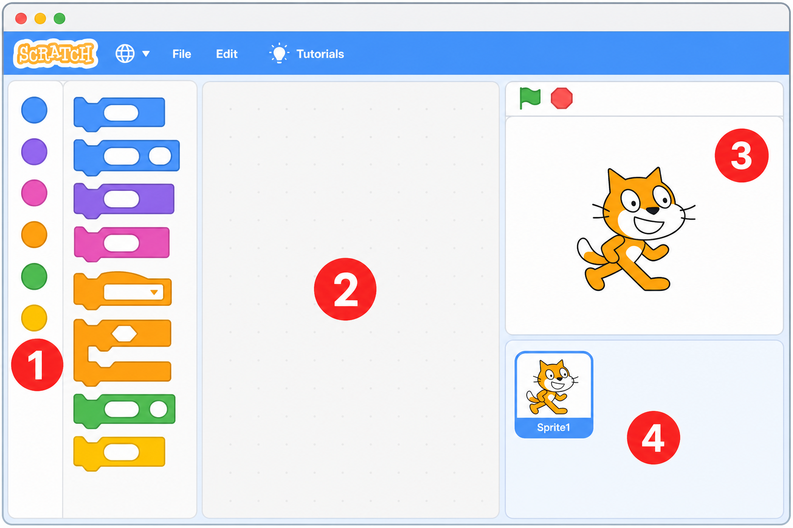
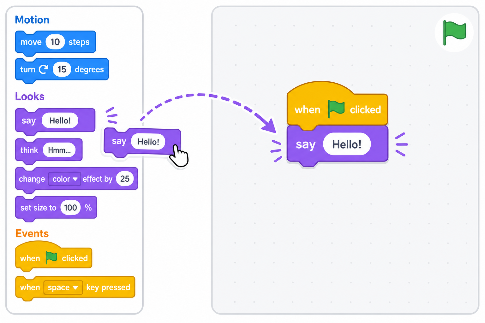
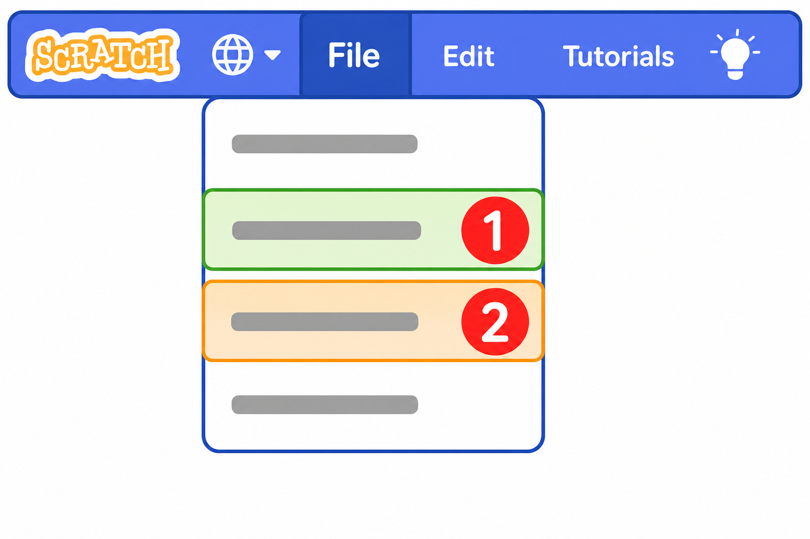

👋 欢迎来到小鱼的编程世界
这里汇总了三条学习线的全部课程：Scratch（玩）→ Python（练）→ AI 训练师（创）。左侧目录可点击跳转，顶部搜索框可快速查找。
🌐 在线课程页 · 左侧目录可跳转 · 顶部搜索框可快速查找
← 返回课程首页
README.md
Leo's Python Adventure 🚀
欢迎来到 Leo 的 Python 编程大冒险！这是一个专门为 7 岁孩子（Leo）设计的 Python 入门课程。通过有趣的案例、生动的语音播报和好玩的打字游戏，开启编程的大门。
🌟 项目亮点
- 全线语音播报：所有课程脚本都集成了 macOS
say 功能，屏幕显示什么，电脑就读什么，学习更轻松！
- 循序渐进打字特训：
- 动态题库：从课程代码中自动提取练习题。
- 自适应难度：从入门短句到挑战级长语段，陪伴孩子手感提升。
- 语音实时激励：每一关、每一个评价都有生动的语音反馈。
- 趣味化案例：包含“魔法门卫”、“烟花秀”、“AI 数学家”等多个贴近孩子生活的编程小练习。
📖 一键查看全部课程（推荐）
不想一个个打开 Markdown？有两种方式：
本地离线：双击 课程合集.html（全部课程预渲染，带目录和搜索）
公网在线：部署到 GitHub Pages 后访问
👉 https://lkx007.github.io/leo_learn_course/
Python 实验室：浏览器里直接写代码、运行、调试（基于 Pyodide）
👉 https://lkx007.github.io/leo_learn_course/python.html
重新生成网页：
pip install markdown # 仅首次需要
python3 build_html.py # 本地 课程合集.html
python3 build_html.py --pages # 额外生成 docs/（GitHub Pages）
发布到 GitHub Pages
- 推送代码到 GitHub（仓库
lkx007/leo_learn_course）
- 打开仓库 Settings → Pages
- Build and deployment → Source 选 GitHub Actions
- 推送
main 分支后，Actions 会自动构建并发布 docs/ 站点
首次也可手动构建：python3 build_html.py --pages，然后把 docs/ 推上去，Source 选 Deploy from a branch → main → /docs。
🧭 三条学习线
本课程现在包含三条互补的学习线，建议交替进行（先玩、再练、后创）：
- Scratch 图形化课（玩）：拖拽积木，零打字建立计算思维。→
course/Scratch课程大纲.md
- 使用 Scratch 桌面版（Mac 应用），新手先看带图的 course/Scratch桌面版使用指南.md。
- 含 进阶篇：用 Scratch 解决现实数学问题（蜗牛爬井、找零、分糖、乘法）+ 做游戏（飞机大战、坦克大战）。评审见 course/Scratch课程评审.md。
- Python 编程课（练）：真正动手写代码，掌握语法。→
course/课程大纲.md
- AI 训练师课（创）：学会跟真 AI 聊天、用提示词/技能/工具/MCP，把点子变成软件。→
AI训练师课程/AI训练师课程大纲.md
- 进阶 4 课：模型 · Harness · OpenClaw（基础毕业后）
- 实战项目：🐟 大鱼吃小鱼 — 语音指挥 AI + Scratch 分步做游戏（G01–G04 参考答案 sb3）
- 语音指挥台（Chrome）：voice-ai.html — 🐟项目 / 🧑🚀基础 / 🎛️进阶 / 🧮奥数 四模式
- Scratch 奥数 6 课：排队·倒推·年龄·间隔·移多补少 → course/Scratch课程大纲.md
想先了解整体情况？请看 课程分析报告.md。
想要现成的学习计划？请看 暑假教学日程表.md（8 周，三条线交替）。
📁 目录结构
course/：核心教学资源lesson_*.py：可运行的 Python 代码脚本。*.md：对应的课程文档，解释编程概念。scratch_lesson_*.sb3 / *_Scratch.md：Scratch 工程文件与配套课件。课程大纲.md：Python 主线大纲。Scratch课程大纲.md：Scratch 主线大纲。typing_game.py：特制的编程打字训练游戏。AI训练师课程/：用 AI 特训营（提示词、Skills、Tools、MCP、进阶、大鱼吃小鱼项目课）。site/：GitHub Pages 静态页（voice-ai.html 语音指挥台、python.html、typing.html 等）。implementation_plan/：需求开发记录与计划归档。课程分析报告.md：对全部课程的分析与新增内容说明。需求.md：项目的原始需求文档。
🚀 快速开始
准备工作
- 操作系统：推荐在 macOS 上运行以获得最佳语音体验。
- Python 版本：Python 3.12+
运行课程
打开终端，进入项目目录，运行任意一课：
python3 course/lesson_12.py
开启打字挑战
运行打字游戏，开始指法特训：
python3 course/typing_game.py
🛠️ 技术栈
- 语言：Python 3
- 图形：Standard
turtle library
- 系统交互：
os, sys, time, random, tty, termios
- 语音引擎：macOS
say command
祝 Leo 在编程的世界里玩得开心！ 🐍✨
↑ 回到顶部
课程分析报告.md
小鱼编程课程 · 分析报告 📊
对象：小鱼（Leo），7 岁，江苏小学一年级。数学仅会简单加减，识字有限，对电脑/编程不熟悉。
本报告先分析现有课程，再说明本次新增的两个模块：Scratch 图形化课程 与 AI 训练师课程。
一、现有课程盘点
目前仓库里其实已经有 三条学习线，只是之前没有放在一起对比：
| 学习线 |
形式 |
课时 |
现状 |
| Python 主线 |
可运行 .py + 配套 .md |
第 01–24 课 + 番外篇 + 第 25/26 课 |
较完整 ✅ |
| Scratch 主线 |
.sb3 工程 + 配套 _Scratch.md |
第 01–24 课 |
课件齐全，但缺总览大纲 ⚠️ |
| 打字特训 |
typing_game.py + 番外篇 |
1 个游戏 |
已完成 ✅ |
Python 主线按月推进，结构清晰：
- 第一月 文字魔法：打印、变量、加减、
input
- 第二月 逻辑之门：布尔、
if、if/else、石头剪刀布
- 第三月 画家海龟：
turtle、图形、for 循环、颜色
- 第四月 神奇小火车：列表创建/增删/索引/遍历
- 第五月 智慧大脑：函数、提示词、RAG、问答机器人
- 第六月 AI 代理人：工具调用、计算器、搜索、Agent 毕业项目
二、做得好的地方 👍
- 生活化 + 故事化：每节课都有"故事时间"，把抽象语法包装成"魔法、咒语、小神灵"，非常贴合 7 岁孩子。
- 可视化反馈：大量使用
turtle 画图、emoji、macOS say 语音播报，弥补了识字少的短板。
- 双轨并行：Python（打字、严谨）+ Scratch（拖拽、零门槛）互补，先用 Scratch 建立"计算思维"，再用 Python 落到语法。
- AI 启蒙超前：第 17–24 课已经接触函数即 API、提示词、RAG、工具调用、Agent，方向正确。
- 配套练习：有课后习题 md（L03/L05/L08…）和打字游戏，兼顾实操。
三、可以补强的缺口 🔧
| 缺口 |
说明 |
本次是否处理 |
| Scratch 没有总览大纲 |
24 个 .sb3/.md 散落，看不出学习路径 |
✅ 新增 Scratch课程大纲.md |
| AI 只是"被模拟" |
现有 AI 课用 def ask_ai() 假装 AI，孩子学的是"写假 AI"，而不是"用真 AI" |
✅ 新增「AI 训练师」模块 |
| 缺少"把点子变软件"的能力 |
孩子有想法，但不知道怎么借助 AI 把想法做成真东西 |
✅ AI 训练师第 07/08 课 |
| 提示词/skills/tools/MCP 概念缺失 |
这些是 2026 年孩子"用 AI"的核心素养 |
✅ AI 训练师模块系统讲解 |
四、本次新增内容总览 ✨
1）Scratch课程大纲.md
把已有的 24 节 Scratch 课整理成 6 个月的清晰路线，和 Python 主线一一对应，方便家长按周带练。
2）AI训练师课程/ 模块（全新）
这是本次的重点。它教的不是"写一个假 AI"，而是教小鱼 成为 AI 的训练师 / 指挥官——学会跟真正的 AI 聊天，把脑子里的点子变成软件。
包含 8 节课：
| 课 |
主题 |
学到的概念 |
| 大纲 |
课程地图 |
整体路线 |
| 第01课 |
认识 AI 朋友 |
AI 是什么、不是什么 |
| 第02课 |
跟 AI 说第一句话 |
提示词 Prompt 入门 |
| 第03课 |
好提示词的魔法配方 |
提示词工程（清楚/举例/角色/步骤） |
| 第04课 |
给 AI 一个角色 |
Skills（技能 / 角色设定） |
| 第05课 |
给 AI 装上工具 |
Tools（工具调用） |
| 第06课 |
AI 的万能插座 |
MCP（连接真实工具与记忆） |
| 第07课 |
把点子变成软件 |
用 AI 做软件（描述即开发） |
| 第08课 |
我是 AI 训练师 |
毕业项目：做一个自己的 AI 小程序 |
五、给家长的使用建议 🧭
- 每周 1 节，三条线交替：Scratch（玩）→ Python（练）→ AI 训练师（创）。
- AI 训练师课需要家长陪同，在电脑/手机上和一个真实 AI 助手（如豆包、Kimi、ChatGPT、Cursor 等）一起完成"动手试一试"。
- 鼓励小鱼先说出点子，再让 AI 帮忙实现——保护好奇心比记住语法更重要。
分析完毕，祝小鱼越学越开心！ 🐟🚀
↑ 回到顶部
暑假教学日程表.md
☀️ 小鱼暑假编程日程表（8 周计划）
对象：小鱼（Leo），7 岁，一年级。
节奏理念：玩（Scratch）→ 练（Python）→ 创（AI 训练师），三条线交替，轻松不累。
🧭 怎么用这张表
- 每周学 5 天，休息 2 天（周末可以做"自由创作"或纯玩）。
- 每天约 30 分钟，分成三小段：
1. 🔥 热身 5 分钟：打字游戏 python3 course/typing_game.py
2. 📘 新课 15 分钟：当天的主课
3. ✍️ 动手 10 分钟：完成"动手试一试 / 每日挑战"
- 家长陪同：AI 训练师课要在真实 AI 助手上一起做；其余课陪着看一眼即可。
- 不赶进度：孩子累了就停，开心最重要。某天没学完，顺延即可。
图例：🐱 Scratch（玩）｜🐍 Python（练）｜🧑🚀 AI 训练师（创）｜⌨️ 打字｜🎉 项目/休息
第 1 周：文字魔法 ✨（开口说话）
| 天 |
主课 |
文件 |
| 周一 |
🐱 你好小猫 + 🐍 你好电脑 |
第01课_你好小猫_Scratch.md / lesson_02.py |
| 周二 |
🐱 神奇的盒子 + 🐍 变量 |
第02课_神奇的盒子_Scratch.md / lesson_03.py |
| 周三 |
🧑🚀 认识 AI 朋友 |
AI训练师课程/第01课_认识AI朋友.md |
| 周四 |
🐱 数学魔法 + 🐍 数学魔法 |
第03课_数学魔法_Scratch.md / lesson_04.py |
| 周五 |
🐱 会聊天的小猫 + 🐍 会聊天的电脑 |
第04课_会聊天的小猫_Scratch.md / lesson_05.py |
| 周末 |
🎉 自由玩 + ⌨️ 打字闯关 |
— |
第 2 周：逻辑之门 🚪（学会思考）
| 天 |
主课 |
文件 |
| 周一 |
🐱🐍 真真假假（布尔） |
第05课_真真假假_Scratch.md / lesson_06.py |
| 周二 |
🐱🐍 魔法门卫（如果） |
第06课_魔法门卫_Scratch.md / lesson_07.py |
| 周三 |
🧑🚀 跟 AI 说第一句话（提示词） |
AI训练师课程/第02课_跟AI说第一句话.md |
| 周四 |
🐱🐍 左转还是右转（如果/否则） |
第07课_左转还是右转_Scratch.md / lesson_08.py |
| 周五 |
🐱🐍 石头剪刀布 |
第08课_石头剪刀布_Scratch.md / lesson_09.py |
| 周末 |
🎉 跟家人玩石头剪刀布游戏 |
— |
第 3 周：画家海龟 🐢（图形与循环）
| 天 |
主课 |
文件 |
| 周一 |
🐱🐍 遇见小海龟 |
第09课_遇见小猫_Scratch.md / lesson_10.py |
| 周二 |
🐱🐍 画个房子/正方形 |
第10课_画个正方形_Scratch.md / lesson_11.py |
| 周三 |
🧑🚀 好提示词的魔法配方 |
AI训练师课程/第03课_好提示词的魔法配方.md |
| 周四 |
🐱🐍 复制魔法（循环） |
第11课_复制魔法_Scratch.md / lesson_12.py |
| 周五 |
🐱🐍 绚丽的烟花（循环+颜色） |
第12课_绚丽的烟花_Scratch.md / lesson_13.py |
| 周末 |
🎉 用 turtle 画一幅自己的画 |
— |
第 4 周：神奇小火车 🚂（列表）
| 天 |
主课 |
文件 |
| 周一 |
🐱🐍 搭建小火车（列表） |
第13课_搭建小火车_Scratch.md / lesson_14.py |
| 周二 |
🐱🐍 添加车厢（增删） |
第14课_添加车厢_Scratch.md / lesson_15.py |
| 周三 |
🧑🚀 给 AI 一个角色（Skills） |
AI训练师课程/第04课_给AI一个角色.md |
| 周四 |
🐱🐍 车厢里有什么（索引） |
第15课_车厢里有什么_Scratch.md / lesson_16.py |
| 周五 |
🐱🐍 检阅火车（遍历） |
第16课_检阅火车_Scratch.md / lesson_17.py |
| 周末 |
🎉 列一张"我的暑假愿望清单" |
— |
第 5 周：智慧大脑 🧠（函数）
| 天 |
主课 |
文件 |
| 周一 |
🐱🐍 召唤智慧大脑（函数） |
第17课_召唤自制积木_Scratch.md / lesson_18.py |
| 周二 |
🐱🐍 咒语的秘密（参数） |
第18课_积木的秘密_Scratch.md / lesson_19.py |
| 周三 |
🧑🚀 给 AI 装上工具（Tools） |
AI训练师课程/第05课_给AI装上工具.md |
| 周四 |
🐱🐍 给大脑一本书（RAG） |
第19课_给积木加脑袋_Scratch.md / lesson_20.py |
| 周五 |
🐱🐍 智慧小助手 |
第20课_超级积木_Scratch.md / lesson_21.py |
| 周末 |
⌨️ 打字挑战赛 + 🎉 休息 |
— |
第 6 周：AI 代理人 🤖（工具与综合）
| 天 |
主课 |
文件 |
| 周一 |
🐱🐍 给 AI 装上画笔 |
第21课_接苹果游戏_Scratch.md / lesson_22.py |
| 周二 |
🐱🐍 聪明的数学家 |
第22课_打地鼠_Scratch.md / lesson_23.py |
| 周三 |
🧑🚀 AI 的万能插座（MCP） |
AI训练师课程/第06课_AI的万能插座_MCP.md |
| 周四 |
🐱🐍 超级搜索 |
第23课_迷宫大冒险_Scratch.md / lesson_24.py |
| 周五 |
🐍 召唤 JARVIS（提前体验毕业项目） |
第24课_超级助手.md |
| 周末 |
🎉 给 JARVIS 想一个新功能 |
— |
第 7 周：把点子变软件 🏗️（冲刺 + 趣味课）
| 天 |
主课 |
文件 |
| 周一 |
🧑🚀 把点子变成软件 |
AI训练师课程/第07课_把点子变成软件.md |
| 周二 |
🐍 旋转的电风扇（趣味动画） |
course/第25课_旋转的电风扇.md |
| 周三 |
🐍 夜空中的烟花（趣味动画） |
course/第26课_夜空中的烟花.md |
| 周四 |
⌨️ 魔法指法特训 |
course/番外篇_魔法指法.md |
| 周五 |
🧑🚀 复习：提示词 + Skills + 工具 + MCP |
AI训练师课程/AI训练师课程大纲.md |
| 周末 |
🎉 想好毕业项目要做什么 |
— |
第 8 周：毕业典礼 🎓（三大毕业项目）
| 天 |
主课 |
文件 |
| 周一 |
🐱 Scratch 毕业：做一个游戏 |
第24课_我的第一个大作_Scratch.md |
| 周二 |
🐍 Python 毕业：做完 JARVIS |
lesson_24.py |
| 周三 |
🧑🚀 AI 训练师毕业项目（动手做） |
AI训练师课程/第08课_我是AI训练师_毕业项目.md |
| 周四 |
🧑🚀 打磨作品 + 写毕业证书 |
同上 |
| 周五 |
🎉 家庭作品发布会：把三个作品演示给全家！ |
— |
| 周末 |
🏆 颁发"小小程序员 + AI 训练师"证书 |
— |
🌟 暑假大目标
学完这 8 周，小鱼将拥有 三张毕业证书：
- 🐱 Scratch 小游戏设计师
- 🐍 Python 小小程序员
- 🧑🚀 AI 训练师
💡 给家长的小贴士
- 可弹性调整：暑假有出游/夏令营，把当周顺延即可，不必焦虑。
- 重过程不重速度：能讲出"今天学了啥"比学得快更重要。
- 多鼓励、多展示：每完成一个作品就发到家庭群、贴在冰箱上，成就感是最好的老师。
- 同概念先拖后写：同一天的 🐱Scratch 和 🐍Python 是同一个知识点，先在 Scratch 玩懂，再到 Python 写出，记得最牢。
祝小鱼度过一个超酷的"编程暑假"！ 🐟☀️🚀
↑ 回到顶部
秋季进阶日程表.md
🍂 小鱼秋季进阶日程表（4 周 · 暑假毕业后）
对象：小鱼（Leo），已完成 暑假 8 周 或同等进度。
重点：奥数 Scratch · 大鱼吃小鱼项目 · AI 进阶 · 小小架构师
🧭 怎么用
- 每周 3–4 天，每天 30–40 分钟
- 顺序可微调，但建议 Scratch 奥数 → 项目 → AI 进阶 穿插
- 语音指挥台 👉
site/voice-ai.html（三个模式都能用）
第 9 周：用 Scratch 解奥数 🧮
| 天 |
主课 |
文件 |
| 周一 |
🐱 排队报数 |
奥数 01 + O01 sb3 + 练习 |
| 周二 |
🐱 倒推法 |
奥数 02 + O02 sb3 |
| 周三 |
🐱 年龄差 |
奥数 03 + O03 sb3 |
| 周四 |
🐱 锯木头间隔 |
奥数 04 + O04 sb3 |
| 周五 |
🐱 移多补少 |
奥数 05 + O05 sb3 |
| 周末 |
🎓 奥数小毕业 + 测验 |
奥数 06 · Scratch奥数毕业测验.md |
第 10 周：大鱼吃小鱼项目 🐟
| 天 |
主课 |
文件 |
| 周一 |
🎤 项目 00–01 语音 + 设计 |
项目 00/01 课 |
| 周二 |
🐟 项目 02–03 游起来 + 小鱼群 |
项目 02/03 课 + G01/G02 |
| 周三 |
🐟 项目 04–05 吃 + 音效 |
项目 04/05 课 + G03/G04 |
| 周五 |
🎓 项目 06 毕业演示 |
项目 06 课 |
第 11 周：AI 训练师进阶 🎛️
| 天 |
主课 |
文件 |
| 周一 |
🧠 进阶 01 选大脑 |
AI训练师进阶第01课_选哪个大脑_模型.md |
| 周二 |
🦾 进阶 02 Harness |
AI训练师进阶第02课_大脑和司机_Harness.md |
| 周三 |
🎛️ 进阶 03 OpenClaw |
AI训练师进阶第03课_一个总台管很多AI_OpenClaw.md |
| 周末 |
课后练习 T09–T11 |
AI训练师课程/exercises/ |
第 12 周：小小 AI 架构师 🏆
| 天 |
主课 |
文件 |
| 周一–周三 |
🏗️ 进阶 04 毕业项目（做+改） |
AI训练师进阶第04课_小小AI架构师_毕业项目.md |
| 周四 |
打磨 + 写证书 |
同上 + exercises/T12 |
| 周五 |
🎉 家庭发布会：Scratch 奥数 + 大鱼吃小鱼 + AI 团队交付 |
— |
🌟 秋季大目标
- 🧮 Scratch 奥数解题手（排队 / 倒推 / 年龄 / 间隔 / 移多补少）
- 🎮 游戏制作人（语音 + AI 完成大鱼吃小鱼）
- 🎛️ 小小 AI 架构师（进阶 4 课毕业）
祝小鱼秋天也玩得开心！ 🐟🍂
↑ 回到顶部
需求.md
需要设计一款Python编程课程
使用对象
1.7岁中国江苏的在读小学一年级学生，名字叫小鱼，英文名leo
2.男孩子
3.数学知识有限，目前仅仅会简单加减法
4.识读汉字数量有限
5.对电脑操作不熟悉
6.对编程不熟悉
课程要求
1.编程语言为python学习
2.内容需要通过生活中的案例的举例、图形化的展示解决方案，并用python编程解决这些案例
3.通过案例的解决，分章节逐步将python的所有语法都讲解完成
4.需要有课后习题的部分，锻炼实操编程的能力
5.随着课程的深入，需要能将常用的算法、常用的游戏能进行
6.兼顾一定的趣味性跟动漫效果
7.结合学习AI进行课程设计，如LLM、Agent、提示词工程、RAG等
短期内可以只设计1年的课程，教学目标就是以python语法学习为主。
课程需要是html的页面或者一个mac端的dmg应用
↑ 回到顶部
课程大纲.md
Python 课程大纲 (6个月计划 - 24课时)
目标
教授7岁小朋友 ("小鱼") Python 编程基础。
教学理念：趣味优先，视觉化反馈，结合 Thonny 工具互动。
第一月：文字魔法 (The Magic of Text)
目标：建立信心，熟悉键盘与基本交互
-
第01课: 你好，电脑！ (Hello Computer!)
- 内容：安装 Python，打印 "Hello World"
- 状态：已完成 ✅
-
第02课: 神奇的盒子 (Magic Boxes - 变量)
- 内容：理解变量就像盒子，存储数字与文字
- 状态：已完成 ✅
-
第03课: 数学魔法 (Math Magic - 基础加减)
- 内容：变量的加减法运算
- 状态：已完成 ✅
-
第04课: 会聊天的电脑 (Chatty Computer - 输入)
- 内容：input() 函数，让电脑问你问题并回答
- 状态：已完成 ✅
第二月：逻辑之门 (The Logic Gate)
目标：学会让电脑做“是非”判断
-
第05课: 真真假假 (True or False - 布尔值)
- 内容：理解什么是对(True)，什么是错(False)
- 案例：你是机器人吗？
- 状态：已完成 ✅
-
第06课: 魔法门卫 (If Statement - 如果)
- 内容：单向判断，如果条件满足就开门
- 案例：只有拥有口令才能进入
- 状态：已完成 ✅
-
第07课: 左转还是右转 (If/Else - 否则)
- 内容：双向判断，如果满足...否则...
- 案例：简单的问答测试
- 状态：已完成 ✅
-
第08课: 石头剪刀布 (Game Logic - 综合)
- 内容：简单的游戏逻辑判断基础
- 案例：判定谁赢了
- 状态：已完成 ✅
第三月：画家海龟 (The Artist Turtle)
目标：引入图形化编程，可视化理解“循环”
-
第09课: 遇见小海龟 (Meet Turtle - 引入)
- 内容：import turtle，前进 forward，转向 left
- 案例：画一条线
- 状态：已完成 ✅
-
第10课: 画个房子 (Drawing Shapes - 顺序)
- 内容：画正方形、三角形
- 案例：组合图形画房子
- 状态：已完成 ✅
-
第11课: 复制魔法 (Loops - 循环初步)
- 内容：
for i in range，为什么要循环？
- 案例：用 4 行代码画正方形（代替重复代码）
- 状态：已完成 ✅
-
第12课: 绚丽的烟花 (Colors & Loops - 循环进阶)
- 内容：循环中改变颜色
- 案例：画彩色的螺旋线
- 状态：已完成 ✅
第四月：神奇小火车 (The Magic Train - 列表)
目标：理解有序数据的存储
-
第13课: 搭建小火车 (Lists - 列表创建)
- 内容：
[] 创建列表，装入喜欢的玩具
- 案例：我的玩具清单
- 状态：已完成 ✅
-
第14课: 添加车厢 (Append - 增删)
- 内容：
append() 添加元素，remove() 拿走元素
- 案例：去超市买东西
- 状态：已完成 ✅
-
第15课: 车厢里有什么？ (Indexing - 索引)
- 内容：通过数字拿到列表里的东西 (从0开始数！)
- 案例：拿到火车头和火车尾
- 状态：已完成 ✅
-
第16课: 检阅火车 (Iterating - 遍历)
- 内容：
for item in list
- 案例：把清单里的东西都打印出来
- 状态：已完成 ✅
第五月：智慧大脑 (The Smart Brain - AI & Functions)
目标：通过函数调用“智慧大脑”，学习代码复用
-
第17课: 召唤智慧大脑 (Calling the AI - 函数定义)
- 内容：
def 定义咒语，了解 API 的概念
- 案例：模拟向 AI 提问
ask_ai()
- 状态：已完成 ✅
-
第18课: 咒语的秘密 (Prompt Engineering - 提示词工程)
- 内容：学习如何更精确地指挥 AI，类似于书写精准的咒语
- 案例：“画只猫” vs “画只戴墨镜的滑板猫”
- 状态：已完成 ✅
-
第19课: 给大脑一本书 (RAG - 知识注入)
- 内容：AI 不知道你的秘密，除非你把“书”给它 (Context)
- 案例：让 AI 回答关于“小鱼”的专属问题
- 状态：已完成 ✅
-
第20课: 智慧小助手 (Building a Helper - 综合)
- 内容：制作一个简单的问答机器人
- 案例：作业辅导小助手
- 状态：已完成 ✅
第六月：AI 代理人 (The AI Agent - Tools & Logic)
目标：让 AI 学会使用工具，完成复杂任务
-
第21课: 给 AI 装上画笔 (Tool Use - Turtle)
- 内容：AI 决定画什么，Turtle 执行绘制
- 案例：我说“画个太阳”，AI 帮你画
- 状态：已完成 ✅
-
第22课: 聪明的数学家 (Tool Use - Calculator)
- 内容：AI 识别数学问题，调用计算器工具
- 案例：解决复杂的加减乘除
- 状态：已完成 ✅
-
第23课: 超级搜索 (RAG & Tools - 知识增强)
- 内容：让 Agent 先“查资料”再回答
- 案例：制作一个能查“我的日记”的智能助手
- 状态：已完成 ✅
-
第24课: 超级助手 (Graduation Project - Agent)
- 内容：设计一个能聊天、能画画、能算数的 AI Agent
- 案例：我的钢铁侠管家 JARVIS
- 状态：已完成 ✅
🔗 衔接：从"写假 AI"到"用真 AI"
第 17–24 课里，我们用 Python 模拟 了 AI（def ask_ai()、JARVIS）。
学完后，强烈建议进入 《AI 训练师课程》（见 AI训练师课程/AI训练师课程大纲.md），
学习如何跟 真正的 AI 对话——提示词、技能(Skills)、工具(Tools)、MCP，
并把自己的点子，借助 AI 做成真的软件。🚀
🧩 配套：Scratch 图形化课程
每个 Python 概念，都有对应的 Scratch 拖拽版课程（见 Scratch课程大纲.md）。
建议同一周"先拖后写"：在 Scratch 里玩懂，再到 Python 里写出。
↑ 回到顶部
第02课_神奇的盒子.md
第02课：神奇的盒子 (Biàn Liàng - 变量)
1. 故事时间 (Gù shì shí jiān) 📖
你好！还记得上次我们让电脑说话了吗？今天我们要学一个新本领！😎
想象一下，你有一个 神奇的盒子 (Magical Box) 🎁。
这个盒子很厉害，它可以装各种各样的东西：
- 可以装 数字 (比如你的年龄 7) 🔢
- 可以装 文字 (比如你的名字 "小明") 📝
- 还可以装 好吃的 (比如 "苹果") 🍎
在 Python 的世界里，我们给这个“神奇的盒子”起了一个名字，叫做 “变量” (Variable)。
2. 怎么用这个盒子？ (Zěn me yòng?) 🧐
我们要给盒子贴上标签，这样下次就能找到它了！
例子 1：装数字
我们拿一个盒子，给它起个名字叫 age (年龄)。然后把数字 7 放进去。
age = 7
👉 解释：
- age 是盒子的名字（标签）。
- = 的意思不是“等于”，而是 “把右边的东西放到左边的盒子里”！
- 7 是我们要放进去的东西。
例子 2：装名字
我们再拿一个盒子，叫 name (名字)。把 "奥特曼" 放进去。
name = "Ultraman"
👉 记住：文字要像上次一样，加上小引号 "" 哦！
3. 让电脑告诉我们盒子里有什么 🗣️
还记得 print 吗？我们可以让电脑把盒子里的东西拿出来给我们看！
# 把 7 放到 age 盒子里
age = 7
# 打印 age 盒子里的东西
print(age)
电脑会输出：
7
4. 动手试一试 (Dòng shǒu shì yī shì) ✍️
该你大显身手了！打开你的 Python 编辑器，输入下面的代码，看看会发生什么？
练习 1：我的神奇盒子
# 创建一个盒子叫 my_box，里面放数字 10
my_box = 10
print(my_box)
练习 2：最爱的食物
# 创建一个盒子叫 comfort_food (好吃的)，里面放 "Pizza"
food = "Pizza"
print(food)
5. 小挑战 (Xiǎo tiǎo zhàn) 🌟
请你写一段代码：
1. 做一个盒子，名字叫 hero (英雄)。
2. 把你最喜欢的英雄名字（比如 "Spider-Man" 或者 "Sun Wukong"）放进去。
3. 用 print 把英雄的名字打印出来！
加油！你就是小小程序员！ 🚀
↑ 回到顶部
第03课_数学魔法.md
第03课：数学魔法 (Math Magic - 加减法)
1. 会算数的盒子 🧮
你好！还记得我们的“神奇盒子”吗？
它不仅能装东西，还是一个 超级计算器！
它从来不会算错哦！😎
2. 加法魔法 (+)
想象一下：
- 你左手有 3 个 🍎 (apples_left = 3)
- 你右手有 2 个 🍎 (apples_right = 2)
- 把它们放在一起，是多少呢？
在 Python 里，我们用 + 号就像数学课一样！
apples_left = 3
apples_right = 2
# 计算总数
total = apples_left + apples_right
print(total)
电脑会告诉你： 5
3. 减法魔法 (-)
现在你有 5 个 🍎，但是你饿了，吃掉了 1 个！😋
- 原来有 5 个 (total = 5)
- 吃掉了 1 个 (ate = 1)
- 还剩几个？
total = 5
ate = 1
# 计算剩下的
left = total - ate
print(left)
电脑会告诉你： 4
4. 这里的魔法是什么？✨
你可以直接让两个盒子里的数字“打架”（运算），然后把结果放到一个新的盒子里！
新的盒子 = 盒子1 + 盒子2
5. 动手试一试 ✍️
练习 1：玩具总动员
你有 2 个奥特曼，朋友送给你 3 个。请算算你一共有几个？
my_toys = 2
friend_toys = 3
all_toys = my_toys + friend_toys
print(all_toys)
电脑会输出：
5
练习 2：买糖果
你有 10 元钱 (money = 10)，买棒棒糖花了 2 元 (price = 2)。
请算算你还剩多少钱？
money = 10
price = 2
left_money = money - price
print(left_money)
电脑会输出：
8
6. 小任务 🌟
算算你的压岁钱！
1. 创建一个盒子 gift_grandma (奶奶给的)，里面放 5 元。
2. 创建一个盒子 gift_mom (妈妈给的)，里面放 5 元。
3. 算算一共多少钱，打印出来！
↑ 回到顶部
第04课_会聊天的电脑.md
第04课：会聊天的电脑 (The Chatty Computer)
你好，小鱼！👋
欢迎回到我们的 Python 魔法课堂！
👂 给电脑装上耳朵
还记得我们在第01课里，用 print() 让电脑说话吗？
print("Hello") 就像是电脑的嘴巴，它能把心里的想法告诉我们。
但是，只有嘴巴是不够的，如果电脑只有嘴巴，那它只能自言自语，多无聊呀！
我们想要和电脑聊天，还需要给它装上一双耳朵。
这个魔法耳朵的名字叫做 —— input() （读作：因-帕-特）。
🎤 试一试
想象一下，你遇到了一个魔法镜子，它问你：“你是谁？”
在 Python 里，我们这样写：
name = input("你是谁呀？")
当你运行这行代码时，电脑会：
1. 在屏幕上问：“你是谁呀？”
2. 停下来等待（眨巴着眼睛等你说话）。
3. 当你在键盘上打出你的名字（比如“小鱼”），并且按下 回车键 (Enter)。
4. 电脑就把“小鱼”这两个字，装进了叫做 name 的神奇盒子里！
🤝 第一次对话
让我们把嘴巴 print 和耳朵 input 结合起来，做一个真正的聊天机器人！
打开 Thonny，输入下面的魔法代码：
# 1. 电脑先问
print("=== Python 聊天室 ===")
your_name = input("你好，请问你叫什么名字？")
# 2. 电脑听到名字后，跟你打招呼
print("很高兴认识你，" + your_name + "！")
# 3. 继续聊天
food = input("你最喜欢吃什么水果？")
print("哇！我也觉得" + food + "超级好吃！")
点击绿色的运行按钮 ▶️，快去和它聊两句吧！
🧠 小脑袋想一想
如果我运行代码后，什么都不输入，直接按回车，会发生什么呢？
神奇盒子 your_name 里会是空的吗？
试一试就知道啦！
🎮 今日挑战：小小调查员
编写一个小程序，帮我问问爸爸或者妈妈：
1. 他们的名字是什么？
2. 他们今年几岁了？
3. 然后很有礼貌地告诉他们：“名字 岁了，依然很年轻哦！”
提示：
mom_name = input("妈妈叫什么名字？")
age = input("妈妈今年几岁啦？")
print(mom_name + " " + age + "岁了，依然很年轻哦！")
下节课，我们要学习分辨真话和假话（True or False），准备好哦！🚀
↑ 回到顶部
第05课_真真假假.md
第05课：真真假假 (True or False)
你好，小鱼！👋
欢迎来到 逻辑 的世界！
今天我们要学习一种新的魔法，叫做 判断。
电脑虽然很聪明，但有时候它也像个严厉的小法官，它只会说两句话：
1. True（对的，真的）
2. False（错的，假的）
这叫做 布尔值 (Boolean)，听起来很酷吧？其实就是 “是非题” 的答案！
⚖️ 电脑小法官
让我们来考考电脑小法官！
在 Python 里，我们用这些符号来提问：
> ： 大于（左边比右边大吗？）< ： 小于（左边比右边小吗？）== ： 等于（左边和右边一样吗？） 注意有两个等号哦！
试一试 1：数字比大小
print(10 > 5) # 10 比 5 大吗？
print(3 > 8) # 3 比 8 大吗？
print(1 + 1 == 2) # 1加1 等于 2 吗？
猜猜电脑会打印出什么？是 True 还是 False？
试一试 2：文字找不同
文字也可以比哦！
name = "小鱼"
print(name == "小鱼") # 这个盒子里的名字是小鱼吗？
print(name == "机器人") # 这个盒子里的名字是机器人吗？
🤖 谁是机器人？
还记得上节课的 input() 吗？
我们可以结合起来，做一个 “身份验证器”！
如果输入的名字是 "小鱼"，电脑就说是 True。
如果输入别的名字，电脑就说是 False。
# 1. 问名字
my_name = input("请输入你的名字: ")
# 2. 判断是不是小鱼
is_xiaoyu = (my_name == "小鱼")
# 3. 公布结果
print("你是小鱼吗？")
print(is_xiaoyu)
🧠 小脑袋想一想
为什么判断相等要用 == (两个等号)，而不能用 = (一个等号) 呢？
= (一个等号) 是 赋值，把东西放进盒子里。 比如 a = 10 (把10放进a)。== (两个等号) 是 判断，看两边是不是一样。 比如 a == 10 (a里面的东西是10吗？)。
不要弄混了哦！😉
🎮 今日挑战：数学小天才
让电脑出题，你来回答，然后让电脑判断你算得对不对！
answer = input("请回答：5 + 5 等于几？")
print("你的答案是 correct 吗？")
print(answer == "10")
注意：input输入进来的都是“文字”，所以要和 "10" (带引号的文字) 比较哦！
下节课，在这个基础之上，我们就要学习 “如果...就...” (If Statement)，让电脑根据 True 和 False 做不同的事情！🚪
↑ 回到顶部
第06课_魔法门卫.md
第06课：魔法门卫 (The Magic Gatekeeper)
你好，小鱼！👋
欢迎回到 逻辑之门！
今天我们要制造一个真正的 “魔法门卫”。
他非常严格，只有你说出了 “正确的口令”，他才会为你开门。
否则，他就会把你拒之门外！🛑
在 Python 里，这个魔法门卫的名字叫做 if （读作：伊-夫），意思是 “如果”。
🚪 只有密码正确才开门
想象一下，你家大门上有一把智能锁。
如果密码是 1234，锁就会打开。
在代码里，我们这样写：
password = input("请输入开门密码: ")
if password == "1234":
print("🔓 咔嚓！门打开了！")
print("欢迎回家，主人！")
IMPORTANT: 缩进魔法 (Indentation)
注意到了吗？print 前面有 4个空格！
这叫做 缩进 (Indentation)。
- 有缩进的代码，就像是跟在该
if 后面的小跟班。
- 只有 当
if 的条件是 True (真的) 时，这些小跟班才会工作。
- 如果条件是 False (假的)，门卫就会直接跳过这些小跟班，不理它们！
👮♂️ 抓坏蛋的游戏
我们来做一个“外星人扫描仪”。
假设真正的外星人，眼睛数量是 3 只。
eyes = input("这只怪物有几只眼睛？")
if eyes == "3":
print("🚨 警报！发现外星人！")
print("准备发射激光！")
print("扫描结束。")
👉 试一试：
1. 运行代码，输入 3。你会看到警报吗？
2. 再次运行，输入 2。你会看到警报吗？
你会发现，不管输入几，“扫描结束” 都会打印出来。
因为 print("扫描结束") 前面没有缩进，它不归 if 管，它谁的话都听！
🧠 小脑袋想一想
如果我忘了写那 4 个空格，会发生什么？
Python 会生气报错哦！因为它不知道这行代码到底归谁管。
在 Thonny 里，当你输入 : (冒号) 并按回车后，它会自动帮你空 4 格，很贴心吧？
🎮 今日挑战：芝麻开门
编写一个阿里巴巴的宝藏门程序。
1. 问用户：“打开宝藏的口令是什么？”
2. 如果用户输入 “芝麻开门”：
- 打印 “✨ 金光闪闪！”
- 打印 “你获得了所有宝藏！”
加油！成为逻辑大师吧！🔑
↑ 回到顶部
第07课_左转还是右转.md
第07课：左转还是右转 (If/Else)
你好，小鱼！👋
欢迎来到 逻辑分岔路口！
上节课我们制造了“魔法门卫”。
但是，只有一扇门是不是太单调了？
如果密码错了，门卫什么也不说，是不是有点没礼貌？
今天我们要学习 “否则” (Else)。
也就是说：
“如果 猜对了，就给你奖品；否则，就扮个鬼脸！” 😜
🛤️ 分岔路口
想象你在森林里探险，遇到一个路口。
Python 里的 else (读作：爱-尔-斯) 就像是另一条路。
answer = input("1+1等于几？")
if answer == "2":
print("✅ 答对了！真聪明！")
else:
print("❌ 答错了，是 2 哦！")
观察一下
else 后面也有一个冒号 :。else 这一行 不需要 缩进（因为它和 if 是平起平坐的兄弟）。else 下面的代码 需要 缩进（因为它们归 else 管）。
⚖️ 二选一的魔法
电脑在同一时间，只能走一条路。
要么走 if 的路，要么走 else 的路。
绝对不会两条路都走！
试一试：你是男生还是女生？
gender = input("你是男生吗？(输入 yes 或 no): ")
if gender == "yes":
print("👦 你好，小帅哥！")
else:
print("👧 你好，小美女！")
🧠 小脑袋想一想
如果我在上面的程序里输入 "apple"，电脑会说什么？
它会说 "你好，小美女！" 👧。
为什么？
因为 else 的意思是 “除了 yes 以外的所有情况”。
只要不是 "yes"（哪怕是 "apple" 或 "123"），它都会走 else 这条路。
🎮 今日挑战：心情日记
编写一个小程序：
1. 问：“你今天开心吗？(yes/no)”
2. 如果回答 "yes"，打印：“太棒了！我要给你唱首歌！🎵”
3. 否则 (else)，打印：“抱抱你，吃颗糖心情变好！🍬”
去试一试吧！
↑ 回到顶部
第08课_石头剪刀布.md
第08课：石头剪刀布 (Rock, Paper, Scissors)
你好，小鱼！👋
今天我们要用学到的本领，做一个真正的游戏！
石头、剪刀、布！ ✊✌️✋
🎮 游戏逻辑
我们先想一想，怎么判断谁赢了？
如果是你出“石头”：
* 电脑出“剪刀” -> 你赢了！🎉
* 电脑出“石头” -> 平局！🤝
* 电脑出“布” -> 你输了...😭
这么多情况，怎么告诉电脑呢？
我们可以用 if 和 else 组合起来！
🤖 电脑出什么？
这节课我们先教电脑一招：“读心术”（其实是作弊哈哈）。
我们先强制让电脑出“剪刀”，看看你能不能赢它。
computer_choice = "剪刀"
my_choice = input("你出什么？(石头/剪刀/布): ")
print("电脑出了：" + computer_choice)
if my_choice == "石头":
print("🎉 你赢啦！石头砸坏了剪刀！")
elif my_choice == "剪刀":
print("🤝 平局！")
else:
print("😭 你输了... 或者你乱出了什么？")
新朋友：elif
elif 是 output "else if" (否则如果) 的缩写。
它的意思是：
“前面的 if 不对，那再看看这个条件对不对？”
if：是石头吗？elif：(不是石头) 那是剪刀吗？else：(既不是石头也不是剪刀) 那肯定是别的了（输了或者乱输）。
🎲 真的随机吗？
如果每次电脑都出剪刀，太没意思了。
让我们用一个小小的魔法，让电脑随机出拳！
import random # 引入随机魔法库
choices = ["石头", "剪刀", "布"]
computer_choice = random.choice(choices)
把你学到的都用上，去打败电脑吧！
🎮 今日挑战：三局两胜
这是一个思考题：
如果我们想玩三局，除了运行三次程序，有没有别的办法呢？
(提示：以后我们要学的“循环”可以帮你！今天先玩一局痛快的吧！)
↑ 回到顶部
第09课_遇见小海龟.md
第09课：遇见小海龟 (Meet the Turtle)
你好，小鱼！👋
欢迎来到 画家海龟 的世界！🐢
从今天开始，我们要进入一个全新的领域：图形化编程。
我们会召唤一只神奇的小海龟，让它在屏幕上画画！
🐢 召唤咒语
要召唤小海龟，我们需要两句咒语：
import turtle # 咒语1：引入海龟魔法包
t = turtle.Turtle() # 咒语2：变出一只海龟，名字叫 t
🎨 指挥小海龟
小海龟听得懂很多命令，我们先学最简单的三个：
t.forward(100)：向前爬 100 步t.backward(50)：向后退 50 步t.left(90)：向左转 90 度（直角）t.right(90)：向右转 90 度
🖍️ 画第一笔
让我们试着画一条线，然后转个弯！
import turtle
t = turtle.Turtle()
t.shape("turtle") # 把箭头变成可爱的小海龟形状
t.color("green") # 变成绿海龟
t.forward(100) # 向前爬
t.left(90) # 左转
t.forward(100) # 再向前爬
print("海龟已经就位！")
turtle.done() # 告诉电脑画完了，保持窗口不关闭
👉 注意：
运行这个程序时，会弹出一个白色的新窗口。这就是海龟的画板！
如果想关闭它，可以点窗口上的小叉叉。
🧠 小脑袋想一想
如果我想画一个 “口” 字（正方形），应该怎么指挥它？
需要走几步？转几次弯？
提示：
走 -> 转 -> 走 -> 转 -> 走 -> 转 -> 走 ...
🎮 今日挑战：海龟赛跑
试着改变括号里的数字。
t.forward(200) 会发生什么？
t.left(45) 会发生什么？
让你的小海龟在屏幕上乱跑一下吧！🎉
↑ 回到顶部
第10课_画个房子.md
第10课：画个房子 (Drawing Shapes)
你好，小鱼！👋
欢迎来到 小小建筑师 的课堂！🏠
上节课我们学会了让海龟走直线和转弯。
今天，我们要把这些简单的动作组合起来，画出漂亮的图形！
就像用积木搭房子一样，一步一步来！
🟩 画个正方形
我们要画一个正方形，需要做四次一模一样的动作：
1. 向前走 100 步
2. 向左转 90 度
(重复 4 次)
import turtle
t = turtle.Turtle()
t.color("blue")
# 第一边
t.forward(100)
t.left(90)
# 第二边
t.forward(100)
t.left(90)
# 第三边
t.forward(100)
t.left(90)
# 第四边
t.forward(100)
t.left(90)
turtle.done()
是不是觉得写 4 遍好麻烦？😫
别急，下节课我们会学更厉害的魔法来解决它！
🏠 画个房子
房子 = 一个正方形 (墙体) + 一个三角形 (屋顶)。
三角形怎么画呢？
正三角形有 3 个边，每次转弯的角度是 120 度（外角）。
# 假设已经画好了正方形
# 现在开始画屋顶(红色)
t.color("red")
t.left(90) # 把头转向上方
t.forward(100) # 爬到正方形左上角
t.right(90) # 把头转正
# 开始画三角形
t.forward(100) # 底边（其实和正方形上面重合了）
t.left(120) # 转弯
t.forward(100) # 斜边1
t.left(120) # 转弯
t.forward(100) # 斜边2
🧠 小脑袋想一想
为什么画三角形要转 120 度，而不是 60 度呢？
想象一下你自己在走路，你要转多大的弯才能掉头呢？
这个涉及到一点点数学魔法（外角和），只要记住 360 度除以边数 就可以啦！
* 正方形：360 / 4 = 90 度
* 三角形：360 / 3 = 120 度
🎮 今日挑战：画八卦阵（八边形）
试试画一个正八边形！
每次转弯的角度是 360 / 8 = 45 度。
你需要写 8 次 forward 和 left 哦！
↑ 回到顶部
第11课_复制魔法.md
第11课：复制魔法 (Loops)
你好，小鱼！👋
欢迎来到 魔法复印店！🖨️
上节课我们画正方形，写了 4 遍一样的代码，手都酸了吧？
今天我们要学习一个超级魔法：“循环” (Loop)。
它的功能是：“把这段代码给我重复运行 X 遍！”
🔄 循环魔法阵
在 Python 里，这个魔法叫做 for 循环。
以前画正方形（笨办法）：
t.forward(100)
t.left(90)
t.forward(100)
t.left(90)
t.forward(100)
t.left(90)
t.forward(100)
t.left(90)
用魔法画正方形（聪明办法）：
import turtle
t = turtle.Turtle()
# 这里的 i 是个记数员，range(4) 表示从 0 数到 3，一共 4 次
for i in range(4):
print("正在画第 " + str(i+1) + " 条边")
t.forward(100)
t.left(90)
turtle.done()
📜 咒语解析
for i in range(4):
* for：开始循环。
* range(4)：范围是 4 次。（你可以改成 100 次试一试！）
* : ：别忘了冒号，下面的代码要缩进（空 4 格）。
只要是缩进的代码，都会被卷进魔法阵里，重复执行！
🎮 今日挑战：画个“甜甜圈”
如果我们画一个圆形，其实就是画很多很多个很短的线，每次转一点点弯。
import turtle
t = turtle.Turtle()
t.speed(10) # 加速！
for i in range(36):
t.circle(50) # 画一个半径50的圆
t.left(10) # 向左转10度
你会看到什么神奇的图形呢？
↑ 回到顶部
第12课_绚丽的烟花.md
第12课：绚丽的烟花 (Colors & Loops)
你好，小鱼！👋
欢迎来到 魔法烟花秀！🎆
上节课我们学会了用循环画圈圈。
但是，全是黑色的圈圈是不是有点无聊？
今天，我们要给魔法加上 颜色！🌈
🎨 魔法颜料盒
我们要用到一个新的咒语：pencolor() （画笔颜色）。
你可以直接告诉它颜色名字，比如：
* "red" (红)
* "blue" (蓝)
* "green" (绿)
* "purple" (紫)
* "orange" (橙)
试一试：
import turtle
t = turtle.Turtle()
t.pencolor("red")
t.forward(100)
t.pencolor("blue")
t.backward(100)
🎢 循环变色魔法
如果我们想画一个彩虹螺旋线，每一笔都换一个颜色，怎么办？
我们可以准备一个 颜色清单，然后按顺序取出来！
这需要一点点数学魔法（取余数 %），不过别担心，照着写就行！
绚丽螺旋线代码：
import turtle
t = turtle.Turtle()
t.speed(10) # 超级快模式！
t.pensize(2) # 把画笔变粗一点点
t.bgcolor("black") # 把背景变成黑色，像夜空一样！
# 这是一个颜色清单（List），我们以后会详细学
colors = ["red", "orange", "yellow", "green", "blue", "purple"]
for i in range(100):
# 这一行是魔法核心：根据 i 的变化，轮流选颜色
# 0, 1, 2, 3, 4, 5, 0, 1... 这样循环
current_color = colors[i % 6]
t.pencolor(current_color) # 换上选好的颜色
t.forward(i * 2) # 每次画的线都比上次长一点点
t.left(59) # 转一个特殊的角度
turtle.done()
🧠 思考一刻
- 试着把
t.left(59) 改成 90 或者 91，图形会变成什么样？
- 试着在
colors 列表里加一种你喜欢的颜色（比如 "pink"），要怎么改代码呢？（提示：% 6 要变成 % 7 哦！）
快去试试吧，创造属于你的烟花！✨
↑ 回到顶部
第13课_搭建小火车.md
第13课：搭建小火车 (Lists)
你好，小鱼！👋
欢迎来到 魔法火车站！🚂
你有很多玩具，对吧？如果把它们随便乱扔，找起来是不是很麻烦？
在编程世界里，我们也有很多“数据”（数字、文字）。
为了把它们整理好，我们用一种神奇的交通工具：列表 (List)。
你可以把它想象成一列 魔法小火车！🚃🚃🚃
🚂 创建小火车
创建一个列表很简单，只需要用一对方括号 [] 把东西装进去，中间用逗号 , 隔开。
# 一列空火车，里面什么都没有
empty_train = []
# 一列水果火车
fruits = ["apple", "banana", "orange"]
# 一列数字火车
numbers = [1, 2, 3, 4, 5]
# 甚至可以混合装！(虽然不推荐这么做，因为会很乱)
mixed_train = [1, "apple", True]
🎫 打印车票
我们可以直接把整列火车打印出来看看：
toylist = ["Robot", "Lego", "Car", "Doll"]
print("我的玩具火车：")
print(toylist)
🎮 动手试一试
编写代码，创建属于你自己的“心愿单小火车”，把你想要的三样礼物放进去，然后打印出来！
# 在这里写你的代码
wishes = ["PS5", "iPad", "Candy"]
print(wishes)
🧠 思考
如果火车太长了，我们想知道里面一共有多少节车厢（多少个东西），该怎么办呢？
有一个咒语叫 len() （Length 的缩写）：
print(len(wishes))
# 结果应该是 3
下节课，我们将学习怎么给火车挂上新车厢！🚃➕
↑ 回到顶部
第14课_添加车厢.md
第14课：添加车厢 (Append)
你好，小鱼！👋
欢迎回到 魔法火车站！🚂
我们的火车现在有点短，只有几节车厢。
如果我想去超市买更多东西，或者把不想要的玩具扔掉，该怎么办呢？
今天我们学习怎么 修改 列表！🔧
➕ 增加车厢：append()
append 的意思是“追加”或者“在后面加上”。
就像给火车尾巴挂上一节新车厢！
shopping_list = ["apple", "bread"]
print("现在的清单：", shopping_list)
# 增加车厢
shopping_list.append("milk")
print("增加牛奶后：", shopping_list)
shopping_list.append("ice cream")
print("增加冰淇淋后：", shopping_list)
➖ 卸下车厢：remove()
如果不想要某个东西了，我们可以用 remove() 把它像魔法一样变消失！
shopping_list.remove("bread")
print("把面包拿走后：", shopping_list)
⚠️ 注意：如果列表里没有这个东西，电脑会报错哦！（它会说：“找不到这节车厢！”）
🎮 互动游戏：超市大采购
我们结合之前的 input 魔法，来做一个互动程序吧！
cart = [] # 这是一个空的购物车
# 问你想买什么
item1 = input("你想买什么？")
cart.append(item1)
item2 = input("还要买什么？")
cart.append(item2)
print("你的购物车里有：")
print(cart)
快去试试看！🏃
↑ 回到顶部
第15课_车厢里有什么.md
第15课：车厢里有什么？ (Indexing)
你好，小鱼！👋
欢迎回到 魔法火车站！🚂
我们的火车现在装着很多好东西。
但是，如果我只想拿出 第一个 东西，或者 最后一个 东西，该怎么告诉电脑呢？
我们需要用到 索引 (Index) 魔法！🔢
0️⃣ 魔法从 0 开始
在普通世界里，我们数数是从 1 开始的（1, 2, 3...）。
但是！在 编程魔法世界 里，我们是从 0 开始数数的！
- 第 1 节车厢 -> 编号 0
- 第 2 节车厢 -> 编号 1
- 第 3 节车厢 -> 编号 2
比如：
fruits = ["apple", "banana", "orange"]
fruits[0] 是 "apple"fruits[1] 是 "banana"fruits[2] 是 "orange"
如果你喊 fruits[3]，电脑会报错，因为它找不到第 4 节车厢！🚫
🔍 尝试一下
names = ["Tom", "Jerry", "Spike"]
print(names[0]) # 打印出 Tom
print(names[1]) # 打印出 Jerry
🪄 倒着数魔法
如果你想拿 最后一节 车厢里的东西，有一个超酷的魔法：用负数！
-1 就代表倒数第一个！
print(names[-1]) # 打印出 Spike (最后一个)
🎮 每日挑战
- 创建一个列表
colors = ["red", "yellow", "blue"]
- 打印出中间那个颜色 ("yellow")
- 打印出最后一个颜色 ("blue")
去试试吧！
↑ 回到顶部
第16课_检阅火车.md
第16课：检阅火车 (Iterating)
你好，小鱼！👋
欢迎回到 魔法火车站！🚂
如果你的火车有 100 节车厢，你想检查每一节车厢里装了什么，怎么做？
难道要写 100 行 print() 吗？
❌ print(train[0])
❌ print(train[1])
❌ print(train[2])
...
这也太累了吧！😫
今天我们学习用 循环魔法 来“检阅”整列火车！👮♂️
🔄 for 循环 + 列表
还记得我们之前用 for 循环画图吗？
在列表里，for 循环更厉害！它可以自动把列表里的东西，一个接一个 地拿出来给你。
咒语格式：
for <东西> in <列表>:
toys = ["Robot", "Doll", "Ball"]
for toy in toys:
# 第一次，toy 变成了 "Robot"
# 第二次，toy 变成了 "Doll"
# 第三次，toy 变成了 "Ball"
print("我现在的玩具是：", toy)
🎩 就像变魔术
想象列表是一个 魔术帽 🎩。
for 循环就是那只 魔术手 🖐️。
每次伸手进去，拿出一个东西，展示给你看，直到帽子空了为止！
🎮 挑战：点名时间
假设你是班长，下面是班里同学的名字列表：
students = ["Tom", "Jerry", "Mickey", "Minnie"]
请写一个程序，给每个同学打招呼：
"Hello, Tom!"
"Hello, Jerry!"
...
# 你的代码写在这里
加油！你已经掌握了 Python 最强大的魔法之一：处理数据！🚀
↑ 回到顶部
第17课_召唤智慧大脑.md
第17课：召唤智慧大脑 (Functions)
你好，小鱼！👋
欢迎来到 智慧城堡！🏰
一直以来，我们都是一行一行写代码。
但是，如果有很长一段咒语（代码），我们要经常用，每次都重写一遍太麻烦了！
在 Python 里，我们可以把一段咒语 打包 起来，给它起个名字。
下次只要喊这个名字，咒语就会自动施放！
这叫做 函数 (Function)。
你可以把它想象成：召唤一个专门做这件事的 AI 小神灵！🧞♂️
📜 定义咒语：def
定义（Define）一个函数，要用 def 关键字。
# 定义一个叫 "say_hello" 的小神灵
def say_hello():
print("👋 你好！我是你的 AI 小助手！")
print("很高兴为你服务！")
这时候运行代码，什么都不会发生！
因为你只是 写好了 咒语书，还没有 念出来！
🗣️ 召唤神灵：()
要让函数工作，必须 召唤（调用） 它。
方法是：名字后面加一对括号 ()。
# 召唤它！
say_hello()
# 再召唤一次！
say_hello()
🧠 模拟 AI 问答
我们来做一个简易的“智慧大脑”：
def ask_ai():
print("🤖 思考中...")
print("💡 答案是：42！")
# 无论我现在问什么，它都只会回答 42... (有点笨，下节课我们教它变聪明！)
print("问：宇宙的终极答案是什么？")
ask_ai()
🎮 每日挑战
定义一个叫 clean_room （打扫房间）的函数。
里面打印：
1. "🧹 扫地..."
2. "🧽 擦窗户..."
3. "✨ 房间变干净啦！"
然后调用它 3 次！
↑ 回到顶部
第18课_咒语的秘密.md
第18课：咒语的秘密 (Parameters)
你好，小鱼！👋
欢迎回到 魔法学院！🏰
上节课我们召唤了 AI 小神灵，但他好像只会说同一句话（"42"）。
这也太无聊了！😕
今天我们要学习 提示词工程 (Prompt Engineering) 的第一步：
给咒语加点料（参数）！ 🧂🌶️
📜 咒语的“配方”
就像做蛋糕需要面粉和糖一样，函数也可以接收 参数 (Arguments)。
我们在定义的时候，在括号里写上名字：
# 定义一个会打招呼的 AI，它需要知道名字
def say_hi(name):
print("你好，" + name + "！很高兴见到你！")
🗣️ 精确召唤
现在我们在召唤的时候，必须告诉它那个名字是什么：
say_hi("小鱼")
# 输出：你好，小鱼！很高兴见到你！
say_hi("Iron Man")
# 输出：你好，Iron Man！很高兴见到你！
🎨 画画小神灵
如果我们做一个“画画”的 AI，我们可以告诉它画什么，还可以告诉它用什么颜色！
# 这里有两个参数：what (画什么) 和 color (什么颜色)
def draw_magic(what, color):
print("🎨 正在用 " + color + " 的颜料画一只 " + what + "...")
print("✨ 完成啦！")
# 召唤！
draw_magic("猫", "金色")
draw_magic("飞龙", "紫色")
🎮 每日挑战
定义一个叫 make_juice （榨果汁）的函数。
它需要一个参数 fruit （水果名字）。
在函数里打印："正在把 [水果] 变成美味的果汁！🧃"
试着用 "苹果" 和 "西瓜" 召唤它！
↑ 回到顶部
第19课_给大脑一本书.md
第19课：给大脑一本书 (Context)
你好，小鱼！👋
欢迎回到 智慧图书馆！📚
AI 虽然很聪明，但它不知道你的 小秘密。
比如，你问它：“我的生日是哪天？”，它肯定不知道！🤷♂️
除非... 你把你的日记本给它看！
这就是传说中的 RAG (知识增强) 魔法！✨
📖 什么是 Context (上下文)？
在编程里，我们可以把一本“书”（比如一个很长的文字，或者一个列表）交给 AI 函数。
让它先看书，再回答问题。
🧠 带书的 AI
我们给函数加一个新的参数：book (书)。
def smart_ai(question, book):
if question == "我的生日是哪天？":
# AI 去翻书...
if "生日" in book:
print("📖 我在书里找到了！你的生日是 5月1日！")
else:
print("🚫 书里没有写呀...")
else:
print("🤖 这个问题太难了，书里没有！")
📝 编写你的“秘密书”
我们可以用一个长长的字符串来当书：
my_diary = "我叫小鱼。我的生日是 5月1日。我最喜欢的颜色是蓝色。我的好朋友是小龟。"
# 召唤 AI，并把日记给它
smart_ai("我的生日是哪天？", my_diary)
🎮 每日挑战
创建一个函数 ask_teacher(question, knowledge)。
knowledge 是老师的知识库（比如："1+1=2, 太阳是热的"）。
如果问 "1+1等于几？"，老师就回答 "2"。
如果问 "太阳是什么？"，老师就回答 "热的"。
快去试试吧！
↑ 回到顶部
第20课_智慧小助手.md
第20课：魔法画板 (Magic Drawing Board)
你好，小鱼！👋
欢迎来到本月的 毕业设计！🎓
之前我们都是写好代码，然后看着电脑跑。
今天，我们要制作一个 真正的 App！
你可以用鼠标在屏幕上画画，还能用键盘控制颜色和粗细！🎨
这就需要用到 事件 (Events) 魔法！✨
👂 电脑的耳朵
电脑其实一直在“听”我们的动作：
* 按下键盘了吗？
* 动了鼠标吗？
* 点击了吗？
我们需要把这些动作，和我们的 函数 连起来！🔗
🔗 魔法连连看
我们用 turtle 的监听功能：
-
准备函数（做什么）：
python
def turn_red():
t.pencolor("red")
-
绑定按键（什么时候做）：
python
# 当按下 "r" 键时 -> 执行 turn_red 函数
screen.onkey(turn_red, "r")
-
开始监听：
python
screen.listen()
🖱️ 鼠标画画
最神奇的魔法是这个：
t.ondrag(t.goto)
这句话的意思是：当鼠标拖动的时候，让乌龟跟着鼠标走！
还有一个 瞬移魔法：
screen.onclick(jump_to)
当你点击屏幕某个地方，笔会抬起来飞过去，这样就可以换个地方重新画啦！✈️
🎮 你的魔法画板
去运行 lesson_20.py，试着操作：
* 点击鼠标：瞬移（换起点）
* 拖动鼠标：画画
* 按 R：变红 (Red)
* 按 G：变绿 (Green)
* 按 B：变蓝 (Blue)
* 按 1-9：改变画笔粗细
* 按 C：清空画布 (Clear)
快去创造你的大作吧！🖼️
↑ 回到顶部
第21课_给AI装上画笔.md
第21课：给 AI 装上画笔 (Tool Use)
你好，小鱼！👋
欢迎进入 最后的高级模块：AI 代理人 (The AI Agent)！🤖
之前的课程里，都是我们写好代码，电脑照着做。
现在，我们要训练一个 聪明的管家，让它自己决定做什么！
🛠️ 什么是工具 (Tool)？
想象一下，你是一个大画家，你需要什么？
* 大脑：想画什么（比如“画个太阳”）🧠
* 手：拿着画笔去画 ✋
在 Python 里：
* 大脑 = if/else 判断逻辑
* 手 = function 函数 (比如 draw_circle())
今天，我们要给你的 AI 管家装上第一件工具：画笔 (Turtle)！🐢
🤖 设计图
我们要写这样一个程序：
1. 问你：主人，你想画什么？
2. 思考：
* 如果主人说 "方块" -> 呼叫 draw_square() 工具
* 如果主人说 "圆圈" -> 呼叫 draw_circle() 工具
* 如果主人说 "退出" -> 睡觉去
3. 执行：画出来！
📝 任务
去运行 lesson_21.py，试着命令你的 AI 画家：
* 输入 square 让它画方块
* 输入 circle 让它画圆圈
* 输入 triangle 让它画三角形
看看它听不听话！
↑ 回到顶部
第22课_聪明的数学家.md
第22课：聪明的数学家 (Tool Use - Calculator)
你好，小鱼！👋
欢迎回到 AI 训练营！
上节课，我们让 AI 学会了用 画笔。
今天，我们要让它戴上 数学眼镜，学会算数！🧮
🧠 人类怎么做数学题？
如果我给你一张纸条：
请帮我算一下 10 加 20 等于多少？
你会怎么做？
1. 读字：看到 "10", "加", "20"
2. 思考：哦，是要做加法！
3. 算数：10 + 20 = 30
4. 回答：等于30！
AI 也是一样！我们需要教它 识别数字 和 运算符号。
🛠️ 你的第二个工具
我们将创建一个 calculator() 工具，它能把文字变成数字，然后算出答案。
准备好了吗？让 AI 防止被数学老师提问难住！🤓
↑ 回到顶部
第23课_超级搜索.md
第23课：超级搜索 (RAG & Tools)
你好，小鱼！👋
我们的 AI 已经会画画、会算数了。
但是，如果我问它：“小鱼最喜欢的颜色是什么？”
它肯定不知道！🤷♂️
因为它没有记忆。
今天，我们要给 AI 装备一个 “秘密笔记本” (Knowledge Base)。
当它遇到不知道的问题时，它会先去查笔记本，然后再回答你！
这在专业领域叫做 RAG (检索增强生成)，听起来是不是很酷？😎
📚 秘密笔记本 (Dictionary)
我们在 Python 里用字典 (dict) 来做笔记本：
notebook = {
"小鱼": "7岁的大帅哥，喜欢乐高",
"妈妈": "世界上最漂亮的女人",
"爸爸": "会写代码的超人"
}
🔍 搜索工具
我们会写一个工具 search(name)。
如果你问 "小鱼是谁？"，它就去笔记本里查 "小鱼"，然后告诉你答案。
让我们开始吧！🚀
↑ 回到顶部
第24课_超级助手.md
第24课：超级助手 (Graduation Project)
🎉 恭喜你，小鱼！ 🎉
你已经学完了所有的魔法，现在是一名合格的 Python 魔法师了！
作为你的毕业设计，我们要运用所有学过的知识：
1. 变量 (记忆)
2. 输入输出 (聊天)
3. 判断 (思考)
4. 循环 (坚持)
5. 函数 (能力)
6. 工具 (画笔、计算器、笔记本)
我们将创造一个无所不能的超级助手：JARVIS (钢铁侠的管家)！🤖
🎯 它的能力
当你跟 JARVIS 说话时，它会分析你的句子：
- 如果你说 "画" -> 它会拿出画笔 🎨
- 如果你说 "算" -> 它会拿出计算器 🧮
- 如果你问 "是谁" -> 它会查笔记本 🔍
- 其他时候 -> 它会陪你聊天 💬
去运行 lesson_24.py，唤醒你的 JARVIS 吧！
这是你亲手写出来的真正的 人工智能 (AI) 原型！
🎓 毕业快乐！未来的编程之路还很长，继续探索吧！ 🚀
↑ 回到顶部
第25课_旋转的电风扇.md
第25课 - 旋转的电风扇 (Animation)
🌟 课程目标
在这一课中，我们将挑战一个高级任务：制作一个动态旋转的电风扇。
你将学会如何利用 Python 的循环，让原本静止的海龟图形“动”起来！
🧠 核心秘籍：动画是怎么产生的？
动画的本质其实是快速切换的图片（帧）。就像翻页书一样，只要我们画得够快，眼睛就会觉得它在动。
在 turtle 中实现动画有三个关键咒语：
1. turtle.tracer(0)：封印自动刷新。告诉海龟：“别画一笔刷新一下，等我画完了再一起看。”
2. t.clear()：橡皮擦。在画新位置的代码之前，先把旧的擦掉。
3. turtle.update()：显形咒。等一帧画好了，一次性展示在屏幕上。
🛠️ 任务清单
- 定义画扇叶函数：我们需要一个能根据“旋转角度”来画画的函数。
- 使用 for 循环：扇叶通常是对称的（比如 3 片），用循环画最方便。
- 主控制循环：让角度不断增加，并重复执行 10 圈（10 * 360 = 3600度）。
💻 核心代码预览
rotations = 10
angle = 0
total_angle = rotations * 360
while angle < total_angle:
draw_fan(angle) # 1. 按照当前角度画风扇
turtle.update() # 2. 刷新屏幕
angle += 5 # 3. 增加角度
time.sleep(0.01) # 4. 短暂休息
🚀 动手试试！
运行 lesson_25.py，看看你的电风扇转起来了吗？
进阶挑战：
- 你能把电风扇变成 4 片扇叶吗？
- 调整 angle += 5 中的数字，看看风扇变快了还是变慢了？
↑ 回到顶部
第26课_夜空中的烟花.md
第26课 - 夜空中的烟花 (Particles & Physics)
🌟 课程目标
让屏幕“活”起来！在这一课中，我们将模拟真实的物理效果：
1. 粒子系统：学习如何同时管理成百上千个小物体。
2. 重力模拟：通过代码让物体呈现出抛物线式的下落效果。
3. 交互反馈：实现“鼠标点哪，烟花开在哪”的功能。
🎨 揭秘：烟花的“身体”
在代码中，每一个小火星都是一个 粒子（Particle）。它至少拥有这几个属性：
- 位置 (x, y)：它现在在哪？
- 速度 (vx, vy)：它想往哪跑？（vx 是横向速度，vy 是纵向速度）
- 颜色 (color)：它是什么颜色的？
- 生命 (life)：它多久会熄灭？
🍎 牛顿的苹果：重力代码
为什么烟花炸开后会往下掉？
秘诀就在每一帧动画中，我们都给粒子的纵向速度 (vy) 减去一个固定的数值：
self.vy -= 0.2 # 这就是重力！每一帧都把它往下拽一点点
一开始它的 vy 是往上的（正数），但由于重力不停地减，它会变慢，最后变成负数（往下掉）。
🛠️ 任务清单
- 粒子列表：创建一个名为
particles = [] 的大盒子。
- 爆炸函数：当点击发生时，往盒子里塞进 30 个向不同方向冲去的粒子。
- 生死轮回：在循环中更新粒子，如果粒子“没命了” (
life <= 0)，记得把它从盒子里扔掉。
🚀 动手试试！
运行 lesson_26.py，疯狂点击屏幕试试！
进阶挑战：
- 把 gravity 的值调大（比如 1.0），看看烟花是不是落得飞快？
- 改变 particles.append 时创建粒子的数量，让爆炸更密集！
↑ 回到顶部
L03_数学练习.md
第03课：数学魔法练习 🧙♂️🎯
练习题
第1题：加法
5 + 3 = ?
答案：8
第2题：减法
10 - 4 = ?
答案：6
第3题：乘法
3 × 7 = ?
答案：21
第4题：混合运算
(5 + 3) × 2 = ?
答案：16
在 Scratch 中实现
当绿旗被点击
询问 [5 + 3 = ?] 并等待
如果 (回答) = [8] 那么
说 [✅ 回答正确！+10分] 2 秒
否则
说 [❌ 再想想，答案应该是8] 2 秒
分数： 每题 25 分，总分 100 分
↑ 回到顶部
L05_判断练习.md
第05课：真假判断练习 🧠🎯
判断题
第1题
10 > 5 是对的吗？
答案：是
第2题
8 < 3 是对的吗？
答案：否
第3题
7 = 7 是对的吗？
答案：是
第4题
5 ≠ 5 是对的吗？
答案：否
在 Scratch 中实现
当绿旗被点击
询问 [10 > 5 是对的吗？（是/否）] 并等待
如果 (回答) = [是] 那么
说 [✅ 正确！] 2 秒
否则
说 [❌ 再想想] 2 秒
分数： 每题 25 分，总分 100 分
↑ 回到顶部
L08_石头剪刀布.md
第08课：石头剪刀布游戏 🎮✂️📄🪨
游戏规则
| 你出 |
电脑出 |
结果 |
| 石头(1) |
剪刀(2) |
你赢 |
| 剪刀(2) |
布(3) |
你赢 |
| 布(3) |
石头(1) |
你赢 |
| 相同 |
相同 |
平局 |
练习题
第1题
你出石头，电脑出布，谁赢？
答案：电脑
第2题
你出剪刀，电脑出剪刀，谁赢？
答案：平局
在 Scratch 中实现
当绿旗被点击
询问 [你出什么？（1=石头 2=剪刀 3=布）] 并等待
将 玩家 设为 (回答)
将 电脑 设为 (在 1 到 3 之间取随机数)
如果 (玩家) = (电脑) 那么
说 [平局！] 2 秒
否则 ...
分数： 赢 +10，平 +5，输 +0
↑ 回到顶部
L13_记忆游戏.md
第13课：记忆游戏 🧠🚂
游戏规则
记住屏幕上依次出现的玩具，然后按顺序说出来！
题目1：顺序记忆
🚗 → 🚁 → 🤖
答案：汽车、直升机、机器人
题目2：逆向记忆
🐱 → 🐶 → 🐰
答案：兔子、狗狗、小猫
在 Scratch 中实现
当绿旗被点击
将 [🚗] 加入 玩具列表
等待 1 秒
将 [🚁] 加入 玩具列表
等待 1 秒
将 [🤖] 加入 玩具列表
询问 [刚才看到了什么？按顺序说] 并等待
分数： 全对 +20 分
↑ 回到顶部
L21_接苹果游戏.md
第21课：接苹果游戏 🍎🎮
游戏规则
- 🍎 苹果从天上随机位置落下
- 🐱 小猫在底部左右移动接苹果
-接到 +10 分，漏掉 -1 条命
练习题
第1题
接到苹果加多少分？
答案：10分
第2题
有3条命，漏掉几个苹果会游戏结束？
答案：3个
在 Scratch 中实现
当绿旗被点击
将 分数 设为 0
将 生命 设为 3
重复执行
移到 x:(随机) y:180
重复执行 直到 <碰到 [Sprite1]？>
将 y 增加 -5
如果 <碰到 [Sprite1]？> 那么
将 分数 增加 10
否则
将 生命 ��加 -1
目标： 30 分过关
↑ 回到顶部
L24_毕业测验.md
第24课：毕业测验 🎓📝
综合测验（5题 × 20分 = 100分）
第1题：数学
5 × 6 = ?
答案：30
第2题：常识
Scratch 的官方吉祥物是什么动物？
答案：小猫/猫
第3题：判断
10 > 5 是对的吗？
答案：是
第4题：列表
列表 [1, 2, 3] 的第2项是？
答案：2
第5题：逻辑
如果 (是) = (是) 那么结果是真还是假？
答案：真
评分标准
| 分数 |
等级 |
| 90-100 |
🎉 优秀 |
| 70-89 |
✅ 良好 |
| 60-69 |
💪 及格 |
| <60 |
🔄 再接再厉 |
🎓 恭喜完成 Scratch 编程课程！
↑ 回到顶部
番外篇_魔法指法.md
番外篇：魔法指法 (Magic Fingers)
你好，小鱼！👋
欢迎来到 魔法特训班！🏋️
写代码就像施魔法，如果你结印（打字）的速度太慢，魔法就会失效哦！
尤其是那些奇奇怪怪的符号：{ } [ ] ( ) = + * : " '
它们是 Python 魔法的核心！
今天我们不学新咒语，我们要 训练你的手指！🖐️
🏠 手指的家 (Home Row)
👀 看着屏幕，不要看手！
这是你的魔法地图：
[q] [w] [e] [r] [t] [y] [u] [i] [o] [p]
[a] [s] [d] [f] [g] [h] [j] [k] [l] [;] [']
[z] [x] [c] [v] [b] [n] [m] [,] [.] [/]
[ SPACE ]
请把手放在键盘上：
* 左手食指 放在 F 上（摸摸看，上面有个小凸起！）
* 右手食指 放在 J 上（也有个小凸起！）
* 其他手指自然排开。
这就是手指的 家。不管去按哪个键，按完都要回这里！
🪄 魔法符号特训
Python 里有几个符号最常用，一定要记住它们在哪里：
- 小括号
( )：需要按住 Shift + 数字 9 和 0。
- 冒号
:：在 L 的右边，也需要按住 Shift。
- 双引号
"：在冒号右边，按住 Shift。
- 下划线
_：在 0 的右边，按住 Shift。
🎮 魔法打字游戏
为了训练你，我开发了一个 特训游戏！
它会不断掉落 Python 的咒语，你要快速把它们打出来！
游戏规则：
- 运行
typing_game.py
- 屏幕上出现什么，你就打什么（注意大小写和符号！）
- 打完按 回车 (Enter)
- 看看你能得多少分！
快去挑战吧！🚀
↑ 回到顶部
Scratch课程大纲.md
Scratch 图形化课程大纲 (6个月 · 24课时) 🐱🧩
目标
让小鱼（Leo）在 完全不打字 的情况下，先用拖拽积木建立"计算思维"。
教学理念：和 Python 主线一一对应——先在 Scratch 里"玩懂"，再到 Python 里"写出"。
打开方式：打开 Mac 上的 Scratch 桌面应用 🐱（Scratch Desktop，无需联网）。
不熟悉操作？请先读 《Scratch桌面版使用指南》（Scratch桌面版使用指南.md，含带图的界面讲解）。
每节课都有配套 参考答案 .sb3（在 course/scratch_answers/ 目录），可在桌面应用里用 File（文件）→ Load from your computer（从电脑中上传） 打开。
🆕 新手必读
- 《Scratch桌面版使用指南》 —
Scratch桌面版使用指南.md
（Mac 桌面应用怎么开、4 个区域、怎么拖积木、怎么保存/打开 .sb3，全部带图）
第一月：开口说话 (Hello Cat)
目标：熟悉舞台、积木、绿旗
- 第01课：你好，小猫！ —
第01课_你好小猫_Scratch.md
- 积木：当绿旗被点击、说 ...
- 第02课：神奇的盒子（变量）—
第02课_神奇的盒子_Scratch.md
- 积木：新建变量、将 ... 设为
- 第03课：数学魔法（运算）—
第03课_数学魔法_Scratch.md
- 积木：( ) + ( )、( ) - ( )
- 第04课：会聊天的小猫（输入）—
第04课_会聊天的小猫_Scratch.md
- 积木：询问 ... 并等待、回答
第二月：学会思考 (Logic)
目标：让小猫做"是非"判断
- 第05课：真真假假（布尔）—
第05课_真真假假_Scratch.md
- 第06课：魔法门卫（如果）—
第06课_魔法门卫_Scratch.md
- 第07课：左转还是右转（如果/否则）—
第07课_左转还是右转_Scratch.md
- 第08课：石头剪刀布（综合判断）—
第08课_石头剪刀布_Scratch.md
第三月：画家小猫 (Pen & Loops)
目标：用画笔与循环创作图案
- 第09课：遇见小猫（移动/方向）—
第09课_遇见小猫_Scratch.md
- 第10课：画个正方形（画笔/顺序）—
第10课_画个正方形_Scratch.md
- 第11课：复制魔法（重复执行）—
第11课_复制魔法_Scratch.md
- 第12课：绚丽的烟花（循环+颜色）—
第12课_绚丽的烟花_Scratch.md
第四月：神奇小火车 (Lists)
目标：理解"清单/列表"
- 第13课：搭建小火车（建立列表）—
第13课_搭建小火车_Scratch.md
- 第14课：添加车厢（增删）—
第14课_添加车厢_Scratch.md
- 第15课：车厢里有什么（索引）—
第15课_车厢里有什么_Scratch.md
- 第16课：检阅火车（遍历）—
第16课_检阅火车_Scratch.md
第五月：自制积木 (My Blocks / 函数)
目标：把一串积木打包成"自己的积木"
- 第17课：召唤自制积木（定义）—
第17课_召唤自制积木_Scratch.md
- 第18课：积木的秘密（参数）—
第18课_积木的秘密_Scratch.md
- 第19课：给积木加脑袋（返回/思考）—
第19课_给积木加脑袋_Scratch.md
- 第20课：超级积木（综合）—
第20课_超级积木_Scratch.md
第六月：做游戏 (Games)
目标：综合所有积木，做出能玩的游戏
- 第21课：接苹果游戏 —
第21课_接苹果游戏_Scratch.md
- 第22课：打地鼠 —
第22课_打地鼠_Scratch.md
- 第23课：迷宫大冒险 —
第23课_迷宫大冒险_Scratch.md
- 第24课：我的第一个大作（毕业项目）—
第24课_我的第一个大作_Scratch.md
🚀 进阶篇：解决现实问题 + 做大游戏
基础 24 课学完后，进入进阶篇，学会"用编程解决真实问题"和"做有模有样的游戏"。
（评审与设计说明见 Scratch课程评审.md）
模块 A · 用 Scratch 解决现实数学问题 🧮
- 进阶第01课：蜗牛爬井 🐌 —
Scratch进阶第01课_蜗牛爬井.md（循环+条件，经典数学题）
- 进阶第02课：聪明小买手 🛒 —
Scratch进阶第02课_聪明小买手.md（乘法+减法，算账找零）
- 进阶第03课：公平分糖果 🍬 —
Scratch进阶第03课_公平分糖果.md（除法+余数）
✖️ 乘法专项（图形化 · 九九表）— 推荐在学完第11课循环后学习
- 乘法第01课：几行几列点点阵 👀 —
Scratch乘法第01课_几行几列点点阵.md（看见 3×5 = 15 个点）
- 乘法第02课：九九乘法表 🎵 —
Scratch乘法第02课_九九乘法表.md（全表背诵 + 口算问答机）
- 进阶第04课：乘法魔方 ✖️ —
Scratch进阶第04课_乘法魔方.md（重复加法 = 乘法，巩固）
🏅 奥数应用题专项（一年级 · 用 Scratch 解题）— 6 课 + 毕业
| 课 |
主题 |
口诀 |
文件 |
| 01 |
排队报数 👫 |
前+后−1 |
Scratch奥数第01课_排队报数.md |
| 02 |
倒推法 🔙 |
从结果加回去 |
Scratch奥数第02课_倒推法.md |
| 03 |
年龄差 🎂 |
大几岁就加几 |
Scratch奥数第03课_年龄差.md |
| 04 |
锯木头 🪚 |
段数−1=刀数 |
Scratch奥数第04课_锯木头间隔.md |
| 05 |
移多补少 ⚖️ |
先加再÷2 |
Scratch奥数第05课_移多补少.md |
| 06 |
奥数小毕业 🎓 |
5 武器综合 |
Scratch奥数第06课_奥数小毕业.md |
📋 家长 → Scratch奥数家长指南.md · 练习 → Scratch奥数课后练习索引.md · 测验 → Scratch奥数毕业测验.md
💡 加减法太简单？直接跳 奥数 6 课，用图形化把应用题吃透！
模块 B · 制作小游戏 🎮
- 进阶第05课：飞机大战 ① 起飞与开火 ✈️ —
Scratch进阶第05课_飞机大战①起飞与开火.md（克隆体）
- 进阶第06课：飞机大战 ② 敌机来袭 👾 —
Scratch进阶第06课_飞机大战②敌机来袭.md（碰撞/得分/生命）
- 进阶第07课：坦克大战 🚀 —
Scratch进阶第07课_坦克大战.md（方向+克隆+对战）
番外 · 思维工具
- 倒推法解题器：
倒推法解题器.sb3 —— 用 Scratch 演示"从答案倒着推回去"的解题思路。
学习节奏建议 🗓️
- 每周 Scratch 1 节 + Python 1 节：同一周学同一个概念，先拖再写，记得最牢。
- Scratch 课做完别忘了点右上角 "分享"，让小鱼有成就感！
↑ 回到顶部
Scratch课程评审.md
Scratch 课程评审报告 🔍🐱
对现有 24 节 Scratch 课进行 review，并说明本次新增的 进阶篇（现实数学 + 小游戏）。
一、现有课程总体评价
| 维度 |
评分 |
说明 |
| 结构清晰 |
⭐⭐⭐⭐ |
6 个月、24 课，与 Python 一一对应，路线合理 |
| 趣味性 |
⭐⭐⭐⭐ |
故事化 + emoji + 小猫角色，贴合 7 岁 |
| 概念覆盖 |
⭐⭐⭐⭐ |
变量/判断/循环/列表/自制积木/游戏，基础语法齐全 |
| 步骤详细度 |
⭐⭐⭐ |
偏简洁，部分课"小挑战"难度跳得快，缺手把手步骤 |
| 现实应用 |
⭐⭐ |
数学只停在加减，缺"用编程解决真实问题"的体验 |
| 游戏深度 |
⭐⭐ |
接苹果/打地鼠/迷宫都较简单，缺"发射/敌人/生命值"等经典玩法 |
一句话总结：基础打得很好，但"用 Scratch 解决现实数学问题"和"做有模有样的游戏"这两块偏弱——这正是本次要补的。
二、发现的具体问题 🐛
- 数学只到加减（第 03 课）。没有乘除、找零、均分、经典数学题（如蜗牛爬井），孩子体会不到"编程能帮我算难题"。
- 游戏太"迷你"。接苹果/打地鼠的伪代码只有 5～6 行，没有"子弹/敌人/得分/生命值/游戏结束"的完整闭环，做完不太像"真游戏"。
- 缺少"克隆体"教学。飞机大战、坦克大战这类"一发射就出现很多子弹"的玩法，核心是 克隆（clone），现有课程完全没讲。
- "小挑战"经常一步登天。例如第 08 课直接让孩子补全石头剪刀布全部胜负判断，对一年级偏难，建议给出更细的脚手架。
- 缺少调试/纠错引导。没有"如果没动起来，检查这三点"这类排错提示。
三、本次新增：Scratch 进阶篇 🚀
按你的需求，新增 7 节进阶课，分两大模块。每节都比基础课更"手把手"，并加了"排错小贴士"。
模块 A · 用 Scratch 解决现实数学问题 🧮
| 课 |
名字 |
解决的真实问题 |
用到的概念 |
| 进阶01 |
蜗牛爬井 🐌 |
经典数学题：几天爬出井？ |
循环 + 条件 + 计数 + 动画 |
| 进阶02 |
聪明小买手 🛒 |
买东西算总价、算找零 |
乘法 + 减法 + 输入 |
| 进阶03 |
公平分糖果 🍬 |
把糖果平均分，余几颗？ |
除法 + 余数 |
| 进阶04 |
乘法魔方 ✖️ |
理解乘法、打印九九表 |
循环 = 重复加法 |
模块 B · 制作小游戏 🎮
| 课 |
名字 |
玩法 |
核心新本领 |
| 进阶05 |
飞机大战 ①：起飞与开火 ✈️ |
控制飞机、发射子弹 |
克隆体 clone |
| 进阶06 |
飞机大战 ②：敌机来袭 👾 |
敌机、击中得分、生命值、结束 |
克隆 + 碰撞 + 变量 |
| 进阶07 |
坦克大战 🚀 |
坦克转向移动、发射炮弹、击毁敌人 |
方向 + 克隆 + 判定 |
四、教学建议 🧭
- 数学先讲题、再编程：先用糖果/积木让小鱼"用手算"一遍蜗牛爬井，再让 Scratch 验证，体会"编程帮我检查答案"。
- 游戏分两步走：飞机大战拆成两节（先能飞能打，再有敌人和分数），避免一次太难。
- 每做完一关就分享：点"分享"，把作品发到家庭群，成就感拉满。
- 鼓励改数字玩：把蜗牛"白天爬 3 米"改成 5 米会怎样？把子弹速度调快会怎样？改一改最能学到东西。
评审完毕，进阶课件见同目录 Scratch进阶第NN课_*.md。 ✅
↑ 回到顶部
Scratch奥数家长指南.md
Scratch 奥数 · 家长陪练指南 👨👦
给爸爸妈妈：不用懂编程，只要 陪小鱼想明白 就行。
怎么上课（每课 25–35 分钟）
| 段 |
时间 |
做什么 |
| 读故事 |
5 分 |
家长读「故事时间」，小鱼听 |
| 画一画 |
5 分 |
纸笔画图（排队/倒推/蛋糕/锯口/移糖） |
| 搭积木 |
15 分 |
小鱼拖，家长帮找积木 |
| 小挑战 |
5 分 |
改数字或做课后练习 |
5 种武器口诀卡（可打印）
👫 排队： 前 + 后 − 1
🔙 倒推： 从最后往前加
🎂 年龄： 大几岁就加几（小的求大的用加）
🪚 间隔： 段数 − 1 = 刀数（反过来 +1）
⚖️ 移多补少： (甲+乙)÷2 = 平均，多的 − 平均 = 移出
常见错题（帮小鱼避坑）
| 题 |
孩子常错 |
怎么引导 |
| 排队 |
4+6=10 |
「小鱼自己被数了几次？」 |
| 倒推 |
5−3−2 |
「送出去的糖要加回来，不是减」 |
| 锯木头 |
5 段锯 5 刀 |
「画竖线数缝，不是数段」 |
| 移多补少 |
移 4 颗 |
「先算两人一共，再每人一半」 |
参考答案 sb3 怎么用
- 路径：
course/scratch_answers/O01 … O06
- 先让小鱼自己做，卡住再打开对照
- Scratch：文件 → 从电脑中上传
和 AI 怎么配合
打开 voice-ai.html → 🧮 奥数 模式 → 让 AI 出新题、讲思路（家长粘贴给 Cursor/豆包）。
奥数专项 6 课 + 毕业测验 · 详见 Scratch奥数毕业测验.md
↑ 回到顶部
Scratch奥数课后练习索引.md
Scratch 奥数 · 课后练习索引
每课 10 分钟纸笔 + Scratch 验证。
| 课 |
练习 |
| 01 排队 |
scratch_exercises/O01_排队报数.md |
| 02 倒推 |
scratch_exercises/O02_倒推法.md |
| 03 年龄 |
scratch_exercises/O03_年龄差.md |
| 04 间隔 |
scratch_exercises/O04_锯木头.md |
| 05 移多补少 |
scratch_exercises/O05_移多补少.md |
| 06 毕业 |
Scratch奥数毕业测验.md |
家长指南 → Scratch奥数家长指南.md
↑ 回到顶部
Scratch奥数毕业测验.md
Scratch 奥数 · 毕业测验 📝
6 课后完成 · 口述 + Scratch 演示 · 60 分及格
一、口诀快问（30 分 · 每题 6 分）
-
排队题口诀是什么？
答：前面 + 后面 − 1
-
锯成 6 段要锯几刀？
答：5 刀（6−1）
-
倒推：剩 7 颗，先送 2 再送 3，原来几颗？
答：7+3+2=12
-
小红 4 岁，哥哥大 3 岁，哥哥几岁？
答：7
-
甲 12 乙 8，甲给乙几颗一样多？
答：每人 10，甲给 2
二、Scratch 演示（30 分）
选 1 题 自己搭（可改数字），点绿旗演示给家长：
| 项目 |
分值 |
| 绿旗能跑、答案对 |
15 |
| 能说出用的口诀 |
10 |
| 至少 1 处自己改的数字 |
5 |
三、等级
| 分数 |
等级 |
| ≥90 |
🏆 奥数小能手 |
| 60–89 |
⭐ 继续加练 |
| <60 |
🔄 复习第 01–05 课 |
通过后进入 大鱼吃小鱼项目 或 乘法专项！
↑ 回到顶部
第01课_你好小猫_Scratch.md
第01课：你好，小猫！(Hello Scratch Cat! 🐱)
1. 故事时间 📖
欢迎来到 Scratch 编程大冒险！
今天我们要认识一个新朋友 —— 小猫 🐱。
在 Python 课里，我们用 print("Hello") 让电脑说话。
在 Scratch 里，我们只需要拖一块积木，小猫就会开口说话！
2. 打开 Scratch 🚀
- 在 Mac 的 启动台 / 应用程序 里，找到橙色小猫图标 🐱（Scratch 桌面应用），点两下打开。
- 一打开就能看到小猫站在右上角的舞台中央了——那就是你的好朋友！
- 还不熟悉界面？先看一遍 《Scratch桌面版使用指南》（
Scratch桌面版使用指南.md），里面有带图的 4 个区域讲解。
💡 本课程全部在 桌面应用 里完成，不用打开网站、不用联网。
3. 让小猫说话 💬
看屏幕左边，积木区 有很多彩色积木分类：
- 🟡 事件（黄色）→ 什么时候开始
- 🟣 外观（紫色）← 我们今天用这个！
步骤：
- 点 "外观"（紫色那个）
- 找到
说 [Hello!] 2 秒，拖到脚本区
- 把
Hello! 改成 你好，我是小猫！
- 点一下积木，小猫就会说话啦！🎤
4. 加上"绿旗"（重要！）🏁
- 点 "事件"（黄色），拖
当绿旗被点击 到脚本区
- 把
说 [...] 积木 snap 到它下面
- 点舞台左上角 绿旗 🚩，小猫自动说话！
5. 动手试一试 ✍️
练习 1：自我介绍
当绿旗被点击
说 [你好！我叫小猫！] 2 秒
说 [今年我 7 岁了！] 2 秒
练习 2：让小猫唱歌
点 "声音"，拖 播放声音 [meow] 接在下面！
6. 小挑战 🌟
设计一个欢迎程序：绿旗点击 → 说欢迎语 → 用 重复执行 不停说"准备好了吗？"
加油！你就是小小程序员！ 🚀✨
📥 下载参考答案 .sb3 · Scratch 桌面版 → 文件 → 从电脑中上传
↑ 回到顶部
第02课_神奇的盒子_Scratch.md
第02课：神奇的盒子 (Magic Boxes - 变量) 📦
1. 故事时间 📖
想象你有一个 神奇的盒子 🎁，可以装数字、文字、甚至好吃的！
在 Scratch 里，这个盒子叫做 "变量" (Variable)。
2. 新建变量 📦
- 点 "变量" 分类（橙色）
- 点 "新建一个变量"
- 输入名字（如
my_age），点确定
3. 让小猫说出盒子里的内容 🗣️
当绿旗被点击
将 my_age 设为 7
说 连接 [我今年 ] 和 (my_age) 2 秒
4. 动手试一试 ✍️
练习 1：我的名字
新建变量 my_name，设为 "小鱼"，让小猫说出来！
练习 2：最爱的零食
新建变量 snack，设为 "Pizza"，说出来！
5. 小挑战 🌟
新建变量 hero，设为你的偶像名字，让小猫说："我最崇拜的人是：XXX！"
加油！你就是小小程序员！ 🚀✨
📥 下载参考答案 .sb3 · Scratch 桌面版 → 文件 → 从电脑中上传
↑ 回到顶部
第03课_数学魔法_Scratch.md
第03课：数学魔法 (Math Magic - 基础加减) 🔢
1. 故事时间 📖
今天我们要化身为 数学魔法师 🧙♂️！
Scratch 里，小猫不仅会说话，还会做数学！
2. 数学运算符（绿色"运算"分类）✨
| 运算 |
积木 |
| 加法 |
[ 3 ] + [ 5 ] |
| 减法 |
[ 10 ] - [ 4 ] |
3. 动手试一试 ✍️
当绿旗被点击
说 ( 3 + 5 ) 2 秒
小猫会说： 8
练习：用变量计算
当绿旗被点击
将 a 设为 12
将 b 设为 8
说 连接 [水果总数：] 和 (a + b) 2 秒
4. 小挑战 🌟
设计一个 加法计算器（复习用）。
✖️ 乘法专项：学完第 11 课「重复执行」后，去做 Scratch乘法第01课_几行几列点点阵.md，用点阵 看见 乘法！
加油！你就是数学魔法师！ 🧙♂️✨
📥 下载参考答案 .sb3 · Scratch 桌面版 → 文件 → 从电脑中上传
↑ 回到顶部
第04课_会聊天的小猫_Scratch.md
第04课：会聊天的小猫 (Chatty Cat - 输入) 💬
1. 故事时间 📖
前几课我们都是给小猫下命令。
今天我们要让小猫主动问你问题，然后记住你的回答！
2. 询问积木（"侦测"分类·蓝色）🗣️
询问 [你叫什么名字？] 并等待
运行后屏幕下方弹出输入框，你的回答被存进 "回答" 积木！
3. 完整例子 💬
当绿旗被点击
询问 [你叫什么名字？] 并等待
说 连接 [你好，] 和 (回答) 2 秒
效果： 你输入 小鱼 → 小猫说 你好，小鱼！ ❤️
4. 动手试一试 ✍️
练习：猜数字
当绿旗被点击
询问 [我最喜欢的数字是？(1-10)] 并等待
如果 (回答) = [7] 那么
说 [对啦！你真懂我！] 2 秒
5. 小挑战 🌟
设计 "你好，朋友！" 程序：
1. 问名字 → 问心情
2. 说："很高兴认识你，XXX！希望你今天 XXX！"
加油！你让小猫学会聊天了！ 💬🐱
📥 下载参考答案 .sb3 · Scratch 桌面版 → 文件 → 从电脑中上传
↑ 回到顶部
第05课_真真假假_Scratch.md
第05课：真真假假 (True or False - 布尔值) 🧠
1. 故事时间 📖
电脑世界里所有判断都是非黑即白的：
- 对的 ✅ → True（真）
- 错的 ❌ → False（假）
2. 认识布尔值（绿色"运算"分类）💡
| 比较 |
积木 |
| 等于 |
( 3 ) = ( 5 ) |
| 大于 |
( 10 ) > ( 5 ) |
3. 动手试一试 ✍️
当绿旗被点击
询问 [你几岁了？] 并等待
如果 (回答) = [7] 那么
说 [哇，我们同岁！] 2 秒
否则
说 [你不是 7 岁！] 2 秒
4. 小挑战 🌟
设计 "机器人检测仪"：
- 问："你是机器人吗？（是/不是）"
- 回答 "是" → 说："嘀嘀嘀！发现机器人！🤖"
- 回答 "不是" → 说："欢迎人类朋友！😄"
加油！你就是逻辑大师！ 🧠✨
📥 下载参考答案 .sb3 · Scratch 桌面版 → 文件 → 从电脑中上传
↑ 回到顶部
第06课_魔法门卫_Scratch.md
第06课：魔法门卫 (If Statement - 如果) 🚪
1. 故事时间 📖
今天我们要制造一个 "魔法门卫"。
他非常严格，只有你说出了 "正确的口令"，他才会为你开门！🛑
2. 只有密码正确才开门 🔑
当绿旗被点击
询问 [请输入开门密码：] 并等待
如果 (回答) = [1234] 那么
说 [🔓 咔嚓！门打开了！] 2 秒
说 [欢迎回家，主人！] 2 秒
3. 动手试一试 ✍️
练习：VIP 检测
询问 [你是VIP吗？（是/不是）] 并等待
如果 (回答) = [是] 那么
说 [欢迎VIP！🎉] 2 秒
4. 小挑战 🌟
设计 "芝麻开门" 程序：
口令正确 → 说 "✨ 金光闪闪！你获得了所有宝藏！🏆"
加油！你就是逻辑大师！ 🔑✨
📥 下载参考答案 .sb3 · Scratch 桌面版 → 文件 → 从电脑中上传
↑ 回到顶部
第07课_左转还是右转_Scratch.md
第07课：左转还是右转 (If/Else - 否则) 🔄
1. 故事时间 📖
上节课学了 "如果"（二选一的第一步）。
今天学完整的 "如果...否则..." —— 真正的二选一！
2. 如果...否则... 怎么用？🧐
如果 (条件) 那么
做了这件事
否则
做那件事
3. 动手搭积木 🧱
当绿旗被点击
询问 [苹果好吃吗？（好吃/不好吃）] 并等待
如果 (回答) = [好吃] 那么
说 [我也觉得超好吃！🍎] 2 秒
否则
说 [啊？你是不是味觉有问题？🤔] 2 秒
4. 小挑战 🌟
设计 "智能门卫 2.0"：
- 密码正确 → 说 "🎊 欢迎回家！"
- 密码错误 → 说 "🚨 警报！警报！非法入侵！"
加油！你掌握了二选一的魔法！ 🔄✨
📥 下载参考答案 .sb3 · Scratch 桌面版 → 文件 → 从电脑中上传
↑ 回到顶部
第08课_石头剪刀布_Scratch.md
第08课：石头剪刀布 (Game Logic - 综合) ✂️🪨📄
1. 故事时间 📖
今天我们要做第一个 真正的游戏 —— 石头剪刀布！
这需要用上所有学过的本领：变量、如果/否则、随机数！
2. 游戏设计 🎮
| 变量 |
作用 |
player |
你的选择（1=石头 2=剪刀 3=布） |
computer |
电脑随机选择（在 1 到 3 之间取随机数） |
3. 动手搭积木 🧱
当绿旗被点击
说 [石头剪刀布！] 1 秒
询问 [你出什么？（1=石头 2=剪刀 3=布）] 并等待
将 player 设为 (回答)
将 computer 设为 (在 1 到 3 之间取随机数)
说 连接 [电脑出了：] 和 (computer) 2 秒
4. 小挑战 🌟
加上 判断输赢 的逻辑：
- player = computer → 平局！
- player = 1 且 computer = 2 → 你赢了！🎉
加油！你已经能做真正的游戏了！ 🎮✨
📥 下载参考答案 .sb3 · Scratch 桌面版 → 文件 → 从电脑中上传
↑ 回到顶部
第09课_遇见小猫_Scratch.md
第09课：遇见小猫 (Meet the Cat - 运动入门) 🐱
1. 故事时间 📖
今天我们要让小猫 真正动起来 —— 在舞台上走来走去！
2. 运动积木（蓝色"运动"分类）🏃
| 积木 |
效果 |
移动 10 步 |
朝当前方向前进 |
右转 15 度 |
顺时针转 |
移到 x:0 y:0 |
瞬移 |
3. 动手搭积木 🧱
当绿旗被点击
重复执行 4 次
移动 100 步
右转 90 度
🎉 效果：小猫画了一个正方形！
4. 小挑战 🌟
设计 "小猫散步"：
重复执行 → 移动 10 步 → 如果碰到边缘就右转 180 度！
加油！你就是舞台导演！ 🎬✨
📥 下载参考答案 .sb3 · Scratch 桌面版 → 文件 → 从电脑中上传
↑ 回到顶部
第10课_画个正方形_Scratch.md
第10课：画个正方形 (Drawing Shapes - 顺序) 🔲
1. 故事时间 📖
今天我们要让小猫 一边走，一边画画！
2. 添加画笔扩展 🖊️
- 点左下角 "添加扩展"（
+ 号）
- 选择 "画笔" (Pen)
- 左边会多出一个 "画笔" 分类！
3. 画笔积木大全 🖊️
| 积木 |
效果 |
清空 |
擦掉所有笔画 |
落笔 |
开始画 |
将画笔颜色设为 [...] |
换颜色 |
4. 动手搭积木 🧱
当绿旗被点击
清空
落笔
重复执行 4 次
移动 100 步
右转 90 度
抬笔
5. 小挑战 🌟
设计 "彩色螺旋"：重复执行 100 次 → 移动 (循环计数) 步 → 右转 91 度 → 将画笔颜色增加 10
加油！你就是小小画家！ 🎨✨
📥 下载参考答案 .sb3 · Scratch 桌面版 → 文件 → 从电脑中上传
↑ 回到顶部
第11课_复制魔法_Scratch.md
第11课：复制魔法 (Loops - 循环初步) 🔄
1. 故事时间 📖
如果你要让小猫说同一句话 10 次，难道要拖 10 个 说 积木吗？
不用！ 用 "重复执行" 循环魔法！
2. 循环积木（橙色"控制"分类）🔄
| 积木 |
效果 |
重复执行 10 次 |
固定次数循环 |
重复执行 |
无限循环 |
3. 动手搭积木 🧱
当绿旗被点击
重复执行 10 次
说 [复制魔法！] 0.5 秒
4. 小挑战 🌟
用 重复执行 + 移动 10 步 + 右转 1 度，让小猫画一个圆圈！
加油！你掌握了复制魔法！ 🔄✨
📥 下载参考答案 .sb3 · Scratch 桌面版 → 文件 → 从电脑中上传
↑ 回到顶部
第12课_绚丽的烟花_Scratch.md
第12课：绚丽的烟花 (Colors & Loops - 循环进阶) 🎆
1. 故事时间 📖
今天我们要用 循环 + 颜色特效，让小猫变出绚丽的烟花效果！
2. 颜色特效（紫色"外观"分类）🎨
| 积木 |
效果 |
将颜色特效增加 25 |
变色 |
将颜色特效设为 0 |
恢复 |
3. 动手搭积木 🧱
当绿旗被点击
重复执行 20 次
将颜色特效增加 25
等待 0.1 秒
说 [烟花结束！🎆] 2 秒
4. 小挑战 🌟
加上 "画笔" 扩展，让小猫一边变色一边画线！
加油！你就是烟花导演！ 🎆✨
📥 下载参考答案 .sb3 · Scratch 桌面版 → 文件 → 从电脑中上传
↑ 回到顶部
第13课_搭建小火车_Scratch.md
第13课：搭建小火车 (Lists - 列表创建) 🚂
1. 故事时间 📖
今天我们要学 "列表" (List) —— 就像一列 小火车 🚂！
每一节车厢可以装一样东西！
2. 新建列表 🚃
- 点 "变量" 分类
- 点 "新建一个列表"
- 输入名字（如
我的玩具），点确定
3. 动手搭积木 🧱
当绿旗被点击
将 [小汽车] 加入 我的玩具
将 [机器人] 加入 我的玩具
说 连接 [我的玩具有：] 和 ... 2 秒
4. 小挑战 🌟
新建列表 购物车，用 询问 + 将 (回答) 加入 购物车 让玩家自己添加商品！
加油！你就是列表魔法师！ 🚂✨
📥 下载参考答案 .sb3 · Scratch 桌面版 → 文件 → 从电脑中上传
↑ 回到顶部
第14课_添加车厢_Scratch.md
第14课：添加车厢 (Add/Remove - 增删) ➕➖
1. 故事时间 📖
上节课我们搭建了小火车（列表）。
今天我们要学习 添加车厢 和 移除车厢！
2. 列表操作积木（"变量"分类）🚃
| 积木 |
效果 |
将 [xxx] 加入 列表 |
加车厢（末尾） |
删除 列表 的第 1 项 |
删车厢 |
3. 动手搭积木 🧱
当绿旗被点击
询问 [要买什么？] 并等待
将 (回答) 加入 购物车
说 连接 [已加入：] 和 (回答) 2 秒
4. 小挑战 🌟
设计 "购物车管理"：
- 输入 删除 → 删除列表最后一项
- 输入商品名 → 加入购物车
加油！你就是购物车高手！ 🛒✨
📥 下载参考答案 .sb3 · Scratch 桌面版 → 文件 → 从电脑中上传
↑ 回到顶部
第15课_车厢里有什么_Scratch.md
第15课：车厢里有什么？(Indexing - 索引) 🔍
1. 故事时间 📖
小火车有好多节车厢，你想知道 第 1 节 装了什么吗？
在 Scratch 里，我们用 "车厢编号"（索引）来取东西！
⚠️ 注意：Scratch 列表从 1 开始数（不是 0）！
2. 取列表项（"变量"分类）🔍
(列表 的第 (1) 项)
3. 动手搭积木 🧱
当绿旗被点击
说 连接 [火车头是：] 和 (我的玩具 的第 (1) 项) 2 秒
说 连接 [火车尾是：] 和 (我的玩具 的第 (列表 的项目数) 项) 2 秒
4. 小挑战 🌟
让玩家输入一个数字 N，说出 列表 的第 (N) 项 是什么！
加油！你就是检阅大师！ 🔍✨
📥 下载参考答案 .sb3 · Scratch 桌面版 → 文件 → 从电脑中上传
↑ 回到顶部
第16课_检阅火车_Scratch.md
第16课：检阅火车 (Iterating - 遍历) 🚂🔍
1. 故事时间 📖
如果你想 把小火车所有车厢都检查一遍，需要一个一个看吗？
不用！ 用 "遍历循环" 一键检阅！
2. 遍历积木（"控制"分类）🔄
对于 (i) 在 列表 中 逐一取出
说 (i) 1 秒
3. 动手搭积木 🧱
当绿旗被点击
说 [开始检阅火车！] 1 秒
对于 (item) 在 我的玩具 中 逐一取出
说 (item) 1 秒
说 [检阅完毕！] 1 秒
4. 小挑战 🌟
用遍历循环计算列表里所有数字的和！
加油！你就是遍历大师！ 🔄✨
📥 下载参考答案 .sb3 · Scratch 桌面版 → 文件 → 从电脑中上传
↑ 回到顶部
第17课_召唤自制积木_Scratch.md
第17课：召唤自制积木 (Custom Blocks - 定义) 🧱
1. 故事时间 📖
今天我们要学 "自制积木" —— 就像给自己做一个 新的魔法积木！
这样可以把很多积木打包成一个，以后直接调用！
2. 制作新的积木（"更多积木"分类）🧱
- 点 "更多积木"
- 点 "制作新的积木"
- 输入名字（如
跳一跳），点确定
- 在定义里放要执行的积木！
3. 动手搭积木 🧱
定义 跳一跳
重复执行 2 次
将 y 坐标增加 10
等待 0.1 秒
将 y 坐标增加 -10
等待 0.1 秒
然后在主程序里直接调用 跳一跳！
4. 小挑战 🌟
制作一个 转圈圈 自制积木，让小猫转 10 圈！
加油！你就是积木魔法师！ 🧱✨
📥 下载参考答案 .sb3 · Scratch 桌面版 → 文件 → 从电脑中上传
↑ 回到顶部
第18课_积木的秘密_Scratch.md
第18课：积木的秘密 (Parameters - 参数) 🔑
1. 故事时间 📖
上节课我们做了 跳一跳 积木，但它每次都跳一样高。
今天我们要给积木加 "参数" —— 让积木可以接收输入！
2. 带参数的自制积木 🔑
制作新积木时，勾选 "添加输入项"：
- 输入项名称：高度
- 调用时：跳一跳 (50) ← 50 就是参数
3. 动手搭积木 🧱
定义 跳 N 下
重复执行 (N) 次
将 y 坐标增加 10
等待 0.1 秒
主程序：跳 5 下 ← 跳 5 次！
4. 小挑战 🌟
制作 说 N 遍 [消息] 自制积木，让小猫把一句话说 N 遍！
加油！你解锁了参数的秘密！ 🔑✨
📥 下载参考答案 .sb3 · Scratch 桌面版 → 文件 → 从电脑中上传
↑ 回到顶部
第19课_给积木加脑袋_Scratch.md
第19课：给积木加脑袋 (Conditional Blocks - 条件积木) 🧠
1. 故事时间 📖
今天我们要给 自制积木 加上 "大脑" ——
让积木根据条件决定要不要执行！
2. 条件自制积木 🧠
在自制积木的定义里，加入 如果...那么...：
定义 跳一跳（如果可以跳？）
如果 <如果可以跳？= [是]> 那么
重复执行 2 次
...
3. 动手搭积木 🧱
当绿旗被点击
询问 [要跳吗？（要/不要）] 并等待
如果 (回答) = [要] 那么
跳一跳
否则
说 [那我就不跳了 😴] 2 秒
4. 小挑战 🌟
给 跳 N 下 加一个条件：只有当 N > 0 时才跳！
加油！你的积木有大脑了！ 🧠✨
📥 下载参考答案 .sb3 · Scratch 桌面版 → 文件 → 从电脑中上传
↑ 回到顶部
第20课_超级积木_Scratch.md
第20课：超级积木 (Building a Helper - 综合) 🏗️
1. 故事时间 📖
今天我们综合运用所有知识，制作一个 "作业辅导小助手"！
它会：聊天 + 算数 + 查资料！
2. 设计思路 🏗️
用 自制积木 把三个功能打包：
- 聊天模式：询问名字，打招呼
- 算数模式：出加法题，判对错
- 资料模式：从列表里查关键词
3. 动手搭积木 🧱
当绿旗被点击
询问 [需要什么帮助？（聊天/算数/资料）] 并等待
如果 (回答) = [聊天] 那么
聊天模式
否则 如果 (回答) = [算数] 那么
算数模式
否则
资料模式
4. 小挑战 🌟
给小助手加上 "退出" 功能：输入 exit 就停止程序！
加油！你就是超级积木大师！ 🏗️✨
📥 下载参考答案 .sb3 · Scratch 桌面版 → 文件 → 从电脑中上传
↑ 回到顶部
第21课_接苹果游戏_Scratch.md
第21课：接苹果游戏 (Game - 基础) 🍎🎮
1. 故事时间 📖
今天我们要做第一个 完整小游戏 —— 接苹果！
苹果从天上掉下来，你要控制小猫接住它！
2. 游戏设计 🎮
| 功能 |
积木 |
| 苹果随机位置出现 |
移到 x:(随机数) y:180 |
| 苹果往下掉 |
将 y 坐标增加 -5 |
| 碰到小猫？ |
碰到 [Sprite1]？ |
3. 动手搭积木 🧱
当绿旗被点击
重复执行
移到 x:(在 -200 到 200 之间取随机数) y:180
重复执行 直到 <碰到 [Sprite1]？>
将 y 坐标增加 -5
4. 小挑战 🌟
加上 计分系统：接到苹果 → 将 分数 增加 1，说分数 1 秒！
加油！你就是游戏设计师！ 🎮✨
📥 下载参考答案 .sb3 · Scratch 桌面版 → 文件 → 从电脑中上传
↑ 回到顶部
第22课_打地鼠_Scratch.md
第22课：打地鼠 (Game - 坐标与随机) 🔨🐹
1. 故事时间 📖
今天我们要做 打地鼠 游戏！
地鼠会随机出现，你要快点点击它！
2. 游戏设计 🎮
| 功能 |
积木 |
| 地鼠随机位置 |
移到 x:(随机数) y:(随机数) |
| 等待 0.3 秒 |
等待 0.3 秒 |
| 点击判断 |
如果被点击 |
3. 动手搭积木 🧱
当绿旗被点击
重复执行
移到 x:(在 -200 到 200 之间取随机数) y:(在 -150 到 150 之间取随机数)
重复执行 直到 <被点击？>
等待 0.1 秒
说 [哎哟！] 1 秒
4. 小挑战 🌟
加上 倒计时：用变量 time 每秒减 1，到 0 游戏结束！
加油！你就是游戏开发大师！ 🎮✨
📥 下载参考答案 .sb3 · Scratch 桌面版 → 文件 → 从电脑中上传
↑ 回到顶部
第23课_迷宫大冒险_Scratch.md
第23课：迷宫大冒险 (Game - 键盘控制) 🎯🎮
1. 故事时间 📖
今天我们要做 迷宫游戏！
用 方向键 控制小猫，走出迷宫！
2. 游戏设计 🎮
| 功能 |
积木 |
| 上键移动 |
当按下 [上箭头] 键 |
| 碰到墙壁？ |
碰到颜色 [...])？ |
| 到达终点？ |
碰到 [终点]？ |
3. 动手搭积木 🧱
当绿旗被点击
移到 x:-200 y:0
重复执行
如果 <键 [上箭头] 被按下？> 那么
将 y 坐标增加 10
如果 <键 [右箭头] 被按下？> 那么
将 x 坐标增加 10
4. 小挑战 🌟
加上 "碰到墙壁就回到起点" 的规则！
加油！你就是迷宫设计师！ 🎯✨
📥 下载参考答案 .sb3 · Scratch 桌面版 → 文件 → 从电脑中上传
↑ 回到顶部
第24课_我的第一个大作_Scratch.md
第24课：我的第一个大作 (Graduation Project) 🎓🎮
🎓 毕业项目：设计你的 Scratch 游戏！
恭喜你坚持学到了第 24 课！🎉
今天是 毕业项目 —— 综合运用所有知识，做一个完整游戏！
🎯 项目要求
设计一个 属于你自己的 Scratch 游戏，必须包含：
1. ✅ 至少 1 个变量（分数/血量/等级）
2. ✅ 至少 1 个循环（重复执行 或 重复执行 N 次）
3. ✅ 至少 1 个如果/否则 判断
4. ✅ 键盘或鼠标控制
5. ✅ 游戏结束条件
💡 游戏灵感
| 游戏类型 |
关键词 |
| 躲避游戏 |
碰到敌人就结束 |
| 收集游戏 |
接住物品得分 |
| 答题游戏 |
答对得分，答错扣分 |
| 冒险游戏 |
走到终点获胜 |
🧱 模板参考
当绿旗被点击
将 分数 设为 0
重复执行 直到 <分数 = 10>
移到 随机位置
等待 1 秒
如果 <被点击？> 那么
将 分数 增加 1
说 连接 [分数：] 和 (分数) 1 秒
说 [🎉 你赢了！] 2 秒
🌟 小挑战
做完游戏后：
1. 点右上角 "分享"，让全世界看到你的作品！
2. 给游戏加一个 酷炫的开始界面！
3. 让朋友来玩，收集他们的反馈！
🎓 毕业寄语
你从 "让小猫说 Hello" 走到了 "做出完整游戏"！
编程不是记住所有积木，而是 用计算思维解决问题。
未来的编程之星，继续加油！ 🌟🚀
Scratch 课程完结 · 恭喜毕业！ 🎓✨
📥 下载参考答案 .sb3 · Scratch 桌面版 → 文件 → 从电脑中上传
↑ 回到顶部
Scratch奥数第01课_排队报数.md
Scratch 奥数第01课：排队报数 👫🔢
1. 故事时间 📖
体育课上，小鱼在排队做操。🐟
老师说：「小鱼，你 前面有 4 个人，后面有 6 个人。」
全班一共有多少人？ 🤔
很多人马上算：4 + 6 = 10 —— 错了！
因为 小鱼自己被数了两次（前面数一次、后面数一次），所以要 减 1！
2. 先画一画 🧠
在纸上画一排小人，标出小鱼的位置：
[1][2][3][4] 🐟 [5][6][7][8][9]
↑ 前面4人 ↑ 后面6人（不含小鱼）
数一数：一共 9 人 ✅
公式：4 + 6 − 1 = 9
3. 准备变量 📦
新建 3 个变量：
- 前面名次
- 后面名次
- 总人数
4. 动手搭积木 🧱
当绿旗被点击
将 前面名次 设为 4
将 后面名次 设为 6
将 总人数 设为 ((前面名次 + 后面名次) - 1)
说 连接 [一共 ] 和 (总人数) 2 秒
说 [4+6-1=9，小鱼被数了两次所以要减1！] 3 秒
🔑 奥数秘诀：排队题 = 前面 + 后面 − 自己这 1 个
5. 升级：换数字试 🔄
把 4 和 6 改成别的数，先 猜答案，再点绿旗验证：
| 题 |
前面 |
后面 |
你的猜测 |
Scratch 答案 |
| ① |
7 |
3 |
|
|
| ② |
5 |
8 |
|
|
| ③ |
1 |
1 |
|
|
6. 排错小贴士 🛠️
- 答案是 10？忘了 减 1。
- 变量名搞混？
前面名次 是 不含小鱼 的前面人数。
7. 小挑战 🌟
- 让小猫 询问「前面几人？」「后面几人？」，自动算总人数。
- 用 列表 画出 1～9 号同学的名字（进阶）。
- 让 AI 帮你出 3 道新排队题（语音指挥台 · AI 训练师模式）。
📥 参考答案：O01_排队报数_参考答案.sb3
你用 Scratch 解了一道奥数排队题！ 👫🏆
↑ 回到顶部
Scratch奥数第02课_倒推法.md
Scratch 奥数第02课：倒推法 🔙🍬
1. 故事时间 📖
小鱼有一些糖 🍬，发生了这些事：
- 先 给妈妈 3 颗
- 再 给爸爸 2 颗
- 最后 自己还剩 5 颗
原来一共有几颗糖？ 🤔
2. 正着想很难，倒着想很简单 🧠
从 最后的结果 往回推：
现在剩 5 颗
← 给爸爸之前：5 + 2 = 7 颗
← 给妈妈之前：7 + 3 = 10 颗 ✅ 原来有 10 颗！
倒推法：像倒着走楼梯，从最后一层 一层层加回去。
3. 准备变量 📦
新建：
- 现在（最后剩几颗）
- 给妈妈
- 给爸爸
- 原来
4. 动手搭积木 🧱
当绿旗被点击
将 现在 设为 5
将 给妈妈 设为 3
将 给爸爸 设为 2
说 [从结果倒着推回去！] 2 秒
将 原来 设为 ((现在 + 给爸爸) + 给妈妈)
说 连接 [原来有 ] 和 (原来) 2 秒
说 [5+2+3=10 颗糖！] 2 秒
5. 再练一题 ✍️
题：小华看书，第一天看了 8 页，第二天看了 6 页，还剩 11 页没看。
这本书 一共有多少页？
先倒推：11 + 6 + 8 = 25 页 ✅
在 Scratch 里把变量改成对应数字，验证一下！
6. 排错小贴士 🛠️
- 用 减法 了？倒推要用 加法 把送出去的加回来。
- 顺序乱了？从 最后一步 开始，一步步往前加。
7. 小挑战 🌟
- 做 询问版：问「最后剩几颗？」「送出去几颗？」，自动算原来。
- 画 倒推箭头图 在纸上，再对照 Scratch 变量。
- 用语音指挥 AI：「帮我出 3 道倒推法应用题，给一年级小朋友。」
📥 参考答案：O02_倒推法_参考答案.sb3
你学会了奥数里的倒推法！ 🔙🏆
↑ 回到顶部
Scratch奥数第03课_年龄差.md
Scratch 奥数第03课：年龄差 🎂👧👦
1. 故事时间 📖
小红今年 5 岁。🎂
她的哥哥小明说：「我比你 大 2 岁。」
小明今年几岁？ 🤔
2. 先画一画 🧠
小红：5 岁 🎂🎂🎂🎂🎂
小明： 🎂🎂🎂🎂🎂 + 🎂🎂 = 7 岁
大 2 岁 = 在小红年龄上 再加 2
公式：5 + 2 = 7
3. 准备变量 📦
新建：小红年龄、年龄差、小明年龄
4. 动手搭积木 🧱
当绿旗被点击
将 小红年龄 设为 5
将 年龄差 设为 2
将 小明年龄 设为 (小红年龄 + 年龄差)
说 连接 [小明今年 ] 和 (小明年龄) 2 秒
说 [5+2=7，大几岁就加几！] 2 秒
🔑 秘诀：「A 比 B 大几」→ 在 B 的年龄上 加 差值。
5. 换一题 🔄
| 题 |
谁小 |
小的人几岁 |
大几岁 |
大的几岁？ |
| ① |
妹妹 |
4 |
3 |
|
| ② |
弟弟 |
6 |
1 |
|
| ③ |
小鱼 |
7 |
5 |
爸爸？ |
先猜，再改 Scratch 变量验证！
6. 小挑战 🌟
- 询问版：问「小的几岁？」「大几岁？」，自动算大的。
- 反过来：小明 8 岁，比小红大 3 岁，小红几岁？（用 减法！）
📥 参考答案：O03_年龄差_参考答案.sb3
年龄题 = 加法或减法，画蛋糕最好懂！ 🎂🏆
↑ 回到顶部
Scratch奥数第04课_锯木头间隔.md
Scratch 奥数第04课：锯木头（间隔） 🪚🌲
1. 故事时间 📖
木工叔叔有一根长木头。🪚
要锯成 3 段，需要锯 几刀？
很多人答 3 —— 错了！
锯成 3 段，中间只有 2 个缝，所以只要锯 2 刀！
|——|——| 3 段，2 刀 ✂️✂️
2. 发现规律 🧠
| 段数 |
画一画 |
锯几刀？ |
| 2 段 |
\|——\| |
1 |
| 3 段 |
\|——\|——\| |
2 |
| 5 段 |
4 个缝 |
4 |
间隔秘诀：锯的次数 = 段数 − 1
（和排队「减 1」有点像，但意思不一样哦！）
3. 准备变量 📦
新建：段数、锯次数
4. 动手搭积木 🧱
当绿旗被点击
将 段数 设为 5
将 锯次数 设为 (段数 - 1)
说 连接 [锯成 ] 和 (段数) 1 秒
说 连接 [段，要锯 ] 和 (锯次数) 2 秒
说 [段数-1=锯次数！5段锯4刀] 2 秒
5. 举一反三 🌟
植树问题（一样的道理）：
- 一行种 5 棵树，中间有 4 个间隔
- 公式也是：间隔数 = 棵数 − 1
在 Scratch 里把变量名改成 棵数 和 间隔数 试试！
6. 小挑战 🌟
- 锯成 10 段，锯几刀？
- 锯了 7 刀，得到几段？（反过来：段数 = 锯次数 + 1）
- 让 AI 出 3 道「间隔题」（语音台 · 奥数模式）
📥 参考答案：O04_锯木头间隔_参考答案.sb3
你发现了「减 1」和「加 1」的间隔秘密！ 🪚🏆
↑ 回到顶部
Scratch奥数第05课_移多补少.md
Scratch 奥数第05课：移多补少 ⚖️🍬
1. 故事时间 📖
小鱼有 10 颗糖，小华有 6 颗糖。🍬
他们想要 一样多（平均分）。
每人应该有几颗？小鱼要给出去几颗？ 🤔
2. 先画一画 🧠
小鱼：🍬🍬🍬🍬🍬🍬🍬🍬🍬🍬 (10)
小华：🍬🍬🍬🍬🍬🍬 (6)
─────────────────────────
一共 16 颗 → 每人 8 颗
小鱼移出 2 颗给小华 ✅
- 先算总数：10 + 6 = 16
- 再平均分：16 ÷ 2 = 8（每人）
- 移多少：10 − 8 = 2（小鱼给出去）
3. 准备变量 📦
新建：小鱼、小华、总数、平均、移出
4. 动手搭积木 🧱
当绿旗被点击
将 小鱼 设为 10
将 小华 设为 6
将 总数 设为 (小鱼 + 小华)
将 平均 设为 (总数 / 2) ← 用「向下取整」
将 移出 设为 (小鱼 - 平均)
说 连接 [每人应该 ] 和 (平均) 2 秒
说 连接 [小鱼要给出去 ] 和 (移出) 2 秒
说 [移多补少：先加总数，再除以2！] 2 秒
💡 Scratch 里 (总数 / 2) 选 向下取整，因为糖是整颗的。
5. 排错小贴士 🛠️
- 直接用
10 - 6 = 4 移？不对 —— 要移 一半差额：(10-6)÷2 = 2
- 两种算法结果一样：
(10-6)/2 或 10 - (10+6)/2
6. 小挑战 🌟
- 甲 15 本、乙 9 本，甲给乙几本一样多？
- 做 询问版：输入两人数量，自动算。
- 画 移糖动画（用克隆体从左边移到右边，选做）
📥 参考答案：O05_移多补少_参考答案.sb3
移多补少 = 先加再除，多的移给少的！ ⚖️🏆
↑ 回到顶部
Scratch奥数第06课_奥数小毕业.md
Scratch 奥数第06课：奥数小毕业 🎓🧮
1. 毕业挑战 📋
小鱼，你已经会 5 种奥数武器 了：
| 武器 |
口诀 |
课 |
| 👫 排队 |
前 + 后 − 1 |
第01课 |
| 🔙 倒推 |
从结果一层层加回去 |
第02课 |
| 🎂 年龄 |
大几岁就加几 |
第03课 |
| 🪚 间隔 |
段数 − 1 = 刀数 |
第04课 |
| ⚖️ 移多补少 |
先加总数，再 ÷ 2 |
第05课 |
今天：选 1 题自己搭 + 1 分钟讲解！
2. 毕业项目要求 ✅
- 自己选 上面 5 种里 1 种（或组合 2 种）
- Scratch 里 能点绿旗跑通
- 至少 1 处 是你改的数字（不是抄参考答案）
- 给全家 1 分钟讲解：用了什么口诀、答案是多少
3. 推荐选题 💡
| 难度 |
选题 |
提示 |
| ⭐ |
排队：前面 7 后面 3 |
O01 改数字 |
| ⭐⭐ |
倒推：剩 8 颗，送出去 3 和 2 |
O02 改数字 |
| ⭐⭐ |
锯 8 段几刀？ |
O04 |
| ⭐⭐⭐ |
移多补少：13 和 5 |
O05 |
4. 演示台词模板 🎤
大家好，我是奥数小选手小鱼！
我选的是「________」题。
口诀是：________。
我的 Scratch 算出来答案是 ________。
谢谢大家！
5. 毕业证书 🏆
┌──────────────────────────────────────┐
│ 🧮 Scratch 奥数小能手 证书 │
│ │
│ 小鱼(Leo) 完成了 Scratch 奥数专项： │
│ 排队 · 倒推 · 年龄 · 间隔 · 移多补少 │
│ │
│ 毕业作品：________________________ │
│ │
│ 🌟 一年级奥数解题手 🌟 │
└──────────────────────────────────────┘
6. 下一步 ➡️
- 继续 大鱼吃小鱼项目（语音 + AI）
- 或 乘法专项 + 飞机大战
📥 综合参考：O06_奥数小毕业_参考答案.sb3（5 题快问快答演示）
你用 Scratch 当计算器，解了真·奥数题！ 🎓🐟
↑ 回到顶部
Scratch乘法第01课_几行几列点点阵.md
Scratch 乘法第01课：几行几列 · 看懂乘法 👀✖️
1. 故事时间 📖
加法你会了：3 + 3 + 3 = 9。
但 3 + 3 + 3 + 3 + 3 写 5 遍，太累了！
今天用一个 超级好懂的办法 理解乘法：
3 × 5 = 3 排，每排 5 个点，一共 15 个点！
乘法不是"背口诀"，是 "几行几列排整齐"。我们用 Scratch 画出来！
2. 先用手摆一排 🖐️
拿出 12 颗乐高 / 糖果，摆成 3 行 × 4 列：
● ● ● ●
● ● ● ●
● ● ● ●
数一数：3 行，每行 4 个 → 3 × 4 = 12
这就是 数组（array） 的意思！Scratch 里我们用 克隆小圆点 或 画笔打点 来画。
3. 准备工作 🎨
- 打开 Scratch 桌面应用 🐱
- 添加 画笔扩展（左下角 ➕ → 画笔）
- 新建变量：
- 行数（几行）
- 列数（每行几个）
- 当前行
- 当前列
- 总数
4. 方法一：用克隆画点阵（推荐）🟡
4.1 添加"小圆点"角色
- 角色区 ➕ → 画一个小圆点（或用课程参考答案 sb3）
4.2 小圆点角色脚本
当绿旗被点击
隐藏
当绿旗被点击 ← 放在"小猫"或"舞台"上也行，这里放主控角色
说 [我们来画 3×4 的点阵！] 2 秒
将 行数 设为 3
将 列数 设为 4
将 总数 设为 0
将 当前行 设为 1
重复执行 (行数) 次
将 当前列 设为 1
重复执行 (列数) 次
创建 小圆点 的克隆
将 总数 增加 1
将 当前列 增加 1
将 当前行 增加 1
说 连接 [一共 ] 和 (总数) 2 秒
说 连接 [所以 3×4=] 和 (总数) 2 秒
4.3 小圆点 · 当作为克隆体启动时
当作为克隆体启动时
显示
移到 x: (-120 + 当前列 × 30) y: (100 - 当前行 × 30)
💡 家长讲解：外层循环管"第几行"，内层循环管"这一行画几个"。两个循环套在一起 = 乘法！
5. 方法二：用画笔打点 🖊️
不用克隆也行，小猫用 落笔 + 移动 画网格：
当绿旗被点击
清空
落笔
将 行数 设为 3
将 列数 设为 4
将 当前行 设为 1
重复执行 (行数) 次
将 当前列 设为 1
移到 x:-150 y:(100 - 当前行 × 40)
重复执行 (列数) 次
移动 30 步
抬笔
移动 5 步
落笔
将 当前列 增加 1
将 当前行 增加 1
抬笔
说 连接 [3×4=] 和 (行数 × 列数) 2 秒
6. 互动：输入行和列 🎮
当绿旗被点击
询问 [几行？] 并等待
将 行数 设为 (回答)
询问 [每行几个？] 并等待
将 列数 设为 (回答)
……（接着用上面的双重循环画点阵）
说 连接(连接(行数)[ × ])(连接(列数)[ = ])(行数 × 列数) 2 秒
输入 3 和 5 → 屏幕上出现 15 个点 → 孩子 亲眼看到 3×5=15！
7. 排错小贴士 🛠️
- 点都叠在一起？检查
移到 x: … y: … 里有没有用到 当前行 和 当前列。
- 总数不对？检查两个循环分别是
(行数) 次和 (列数) 次。
- 克隆越来越多屏幕卡？加
当绿旗被点击 → 删除所有克隆体（在克隆前）。
8. 小挑战 🌟
- 画 4×6 和 6×4，总数一样吗？（一样！这叫交换律）
- 画 5×5 正方形点阵 —— 完美正方形！
- 每画完一行，小猫说：
第 N 行画好了！
下一课：用同样办法，背完整张九九乘法表！ → Scratch乘法第02课_九九乘法表.md
📥 参考答案：M01_几行几列点点阵_参考答案.sb3
📥 下载参考答案 .sb3 · Scratch 桌面版 → 文件 → 从电脑中上传
↑ 回到顶部
Scratch乘法第02课_九九乘法表.md
Scratch 乘法第02课：九九乘法表 · 全表 + 问答 🎵✖️
1. 故事时间 📖
上一课你看到了：乘法 = 几行几列的点。
今天我们要做两件大事：
- 🎵 让小猫 唱完整张 9×9 乘法表（81 句！）
- 🎮 做一个 乘法问答机，随机出题考小鱼
2. 九九表长什么样 📋
1×1=1 1×2=2 … 1×9=9
2×1=2 2×2=4 … 2×9=18
…
9×1=9 9×2=18 … 9×9=81
规律：
- 横着看：某个数的乘法口诀（如 7 的口诀）
- 竖着看：另一个数的口诀
- 对角线：完全平方数（1, 4, 9, 16, 25…）
3. 背诵整张表（循环套循环）🔁
新建变量：被乘数、乘数
当绿旗被点击
将 被乘数 设为 1
重复执行 9 次
将 乘数 设为 1
重复执行 9 次
说 连接(连接(连接(被乘数)[ × ])(乘数))(连接[ = ](被乘数 × 乘数)) 1 秒
将 乘数 增加 1
将 被乘数 增加 1
说 [九九表背完啦！🎉] 2 秒
⏱️ 81 句大约 2 分钟。可以先改成 只背某一横排（如 被乘数 固定为 7）。
4. 图形化：背 7 的口诀时画 7 排点阵 👀
每说一条 7 × N = ?，同时 画 N 行、每行 7 个点（用上一课克隆法）：
当绿旗被点击
将 被乘数 设为 7
将 乘数 设为 1
重复执行 9 次
说 连接(连接(被乘数)[ × ])(连接(乘数)[ = ])(被乘数 × 乘数) 2 秒
… 调用"画点阵(行=乘数, 列=被乘数)" …
等待 1 秒
删除所有克隆体
将 乘数 增加 1
孩子一边听、一边看图形，口诀就记住了！
5. 乘法问答机（游戏）🎮
当绿旗被点击
将 得分 设为 0
重复执行 10 次
将 a 设为 (在 1 到 9 之间取随机数)
将 b 设为 (在 1 到 9 之间取随机数)
询问 连接(连接(a)[ × ])(连接(b)[ = ？]) 并等待
如果 <(回答) = (a × b)> 那么
说 [答对啦！🎉] 1 秒
将 得分 增加 1
播放声音 [pop]
否则
说 连接 [再想想！答案是 ] 和 (a × b) 2 秒
说 连接 [本轮得分：] 和 (得分) 2 秒
6. 进阶：乘法表格子墙 🧱
用 画笔 在舞台画 9×9 格子，每格写乘积（高年级可试）：
| 步骤 |
做法 |
| 画横线 |
重复 10 次，每次 y 减 30，画一条线 |
| 画竖线 |
重复 10 次，每次 x 加 30，画一条线 |
| 填数字 |
双重循环，在每格中心 说 或 图章 乘积 |
参考答案 sb3 里有 简化版格子表（前 5×5），可自行扩展到 9×9。
7. 和学校的连接 🏫
| Scratch 概念 |
数学课对应 |
| 双重循环 |
九九表两行数字 |
| 行数 × 列数 |
面积 / 数组 |
| 随机问答 |
口算练习 |
| 克隆点阵 |
乘法直观意义 |
建议：每天练 5 分钟问答机，比单纯背表有趣！
8. 小挑战 🌟
- 只出 2、5、9 的乘法（找规律：2 的倍数、5 的倍数、9 的 trick）
- 答对 3 题连击，小猫 跳一跳（调用自制积木）
- 录一段 "小鱼背九九表" 视频发给爷爷奶奶！
📥 参考答案：M02_九九乘法表_参考答案.sb3
恭喜！九九乘法表 + 图形化乘法，全部拿下！ 🏆✖️
📥 下载参考答案 .sb3 · Scratch 桌面版 → 文件 → 从电脑中上传
↑ 回到顶部
Scratch桌面版使用指南.md
Scratch 桌面版使用指南（Mac 应用）🖥️🐱
适用：Scratch Desktop（Mac 安装版，Version 3.32.0）。
本课程 不需要联网、不用打开 scratch.mit.edu 网站，全部在这个桌面应用里完成！
这一篇是 新手必读，跟着图一步步来，爸爸妈妈和小鱼都能学会。
1. 打开 Scratch 🚀
在 Mac 的 "启动台" 或 "应用程序" 文件夹里，找到橙色小猫图标 🐱（名字叫 Scratch），点两下打开它。
💡 想让界面变成中文？打开后点最上面那排的 🌐 地球图标，在列表里选 "简体中文" 即可。
（下面的图是英文界面，中文界面位置完全一样，只是文字变中文。）
2. 认识界面：4 个区域 🗺️
打开后看到的样子是这样的（红色数字是我加的标记）：

| 标记 |
区域名字 |
它是干嘛的 |
| 1️⃣ |
积木区（左边） |
所有彩色积木都在这。上面的小圆点是"分类"，点一下就跳到那种积木 |
| 2️⃣ |
脚本区（中间） |
我们的"工作台"，把积木拖到这里拼起来 |
| 3️⃣ |
舞台（右上） |
小猫表演的地方。左上角有 🟢 绿旗（开始） 和 🔴 红色按钮（停止） |
| 4️⃣ |
角色区（右下） |
显示你有哪些角色（小猫、飞机、子弹…） |
🎨 积木分类的颜色要记一记：
🔵 运动 · 🟣 外观 · 🟧 事件 · 🟡 控制 · 🟢 运算 · 🟠 变量。
3. 怎么拖积木？（最重要的动作）🧱
写程序，就是把积木 从左边拖到中间，像拼乐高一样拼起来。

步骤：
1. 在左边 积木区 找到想要的积木（比如紫色的 说 Hello!）。
2. 按住鼠标左键，把它 拖到中间脚本区，松手。
3. 想让两块积木连起来，就把下面那块 靠近上面那块的底部，看到 灰色阴影 出现时松手，"啪"地一下就吸住了！
4. 一段程序通常从一个 黄色帽子积木 开始，最常用的是 当 🟢 被点击（在 🟧 事件 分类里）。
❌ 拖错了想删掉？把那块积木 拖回左边积木区，松手就删掉了。
4. 让程序跑起来 ▶️
拼好积木后：
- 点舞台左上角的 🟢 绿旗 → 程序 开始运行！
- 点旁边的 🔴 红色按钮 → 程序 停止。
试试拼这个最小程序，点绿旗看看小猫说话：
当 🟢 被点击
说 [你好，我是小猫！] 2 秒
5. 保存作品 / 打开课程文件（.sb3）💾
桌面版的存档是 .sb3 文件，存在你自己的电脑里。
点最上面的 File（文件） 菜单，会看到下拉菜单：

| 标记 |
菜单项（英文 / 中文） |
作用 |
| 1️⃣ |
Save to your computer / 保存到电脑 |
把现在的作品存成一个 .sb3 文件 |
| 2️⃣ |
Load from your computer / 从电脑中上传 |
打开一个 .sb3 文件（比如课程附带的参考答案） |
📂 打开课程参考答案：课程目录 course/ 里有 scratch_lesson_01.sb3 … 这些文件。
想看老师做好的范例，就用 File → Load from your computer（从电脑中上传），选中那个 .sb3 打开即可。
💡 小提醒：桌面版没有"自动保存"，做完记得 File → 保存到电脑，下次再用 从电脑中上传 打开继续！
6. 常用小操作 🔧
| 想做什么 |
怎么做 |
| 换个角色（比如飞机） |
右下角 角色区 右下角的 🐱➕ 按钮 → 选一个角色 |
| 自己画角色 |
角色区 🐱➕ 按钮 → 选 🖌️ 画笔（绘制） |
| 换背景 |
舞台右边最下方的 🏞️➕ 按钮 |
| 新建变量 |
积木区点 🟠 变量 分类 → "建立一个变量" |
| 放大/缩小积木 |
脚本区右下角的 ➕ ➖ 按钮 |
7. 遇到问题？排错三连 🛠️
- 点绿旗没反应？ → 检查程序最上面有没有
当 🟢 被点击 这块黄色帽子积木。
- 积木没连上？ → 两块积木之间有缝，说明没吸住，拖近一点重新对齐。
- 找不到某块积木？ → 看它是什么颜色，点左边对应颜色的 分类圆点。
✅ 学会这 7 步，你就能开始上所有 Scratch 课啦！
每节课开头的"打开 Scratch"，都按 第 1 步 来；
要打开范例 .sb3，就按 第 5 步。开始你的积木冒险吧！🐱🚀
↑ 回到顶部
Scratch进阶第01课_蜗牛爬井.md
Scratch 进阶第01课：蜗牛爬井 🐌🕳️
1. 故事时间 📖
一只小蜗牛掉进了一口 10 米深的井 里！🕳️
它很努力：
- ☀️ 白天往上爬 3 米
- 🌙 晚上睡着了，往下滑 2 米
问题来了：小蜗牛要几天才能爬出井口呢？ 🤔
这是一道很有名的数学题！今天我们让 Scratch 帮我们一边爬一边数，看看答案对不对！
2. 先用脑子想一想 🧠
很多人会说："一天上 3 米、下 2 米，净爬 1 米，10 米要 10 天！"
但这是错的！ 因为最后一天爬出去后，它就不会再往下滑啦！
别急，我们让 Scratch 来 真的爬一遍，答案自己就出来了。👇
3. 准备工作 🎨
- 打开 Mac 上的 Scratch 桌面应用 🐱（不熟悉看《Scratch桌面版使用指南》）。
- 删掉小猫，添加一个 蜗牛角色（找不到就用别的小动物代替）。
- 新建 3 个变量：
- 高度（蜗牛现在在第几米）
- 天数（已经过了几天）
- 井深（井有多深）
4. 动手搭积木 🧱
当绿旗被点击
将 井深 设为 10
将 高度 设为 0
将 天数 设为 0
重复执行 直到 <高度 ≥ 井深>
将 天数 增加 1
说 连接 [第 ] 和 (天数) 1 秒
☀️ 白天爬 3 米
将 高度 增加 3
说 连接 [白天爬到 ] 和 (高度) 1 秒
如果 <高度 ≥ 井深> 那么
说 [🎉 爬出来啦！] 2 秒
停止 [这个脚本]
🌙 晚上滑 2 米
将 高度 增加 -2
说 连接 [晚上滑到 ] 和 (高度) 1 秒
说 连接 [一共用了 ] 和 (天数) 2 秒
🔑 关键秘密：每天白天爬完，要 先检查是不是已经出来了，出来了就马上停止——这样就不会多滑那 2 米！这就是为什么答案不是 10 天。
5. 揭晓答案 🎯
运行绿旗，跟着蜗牛一起数……
答案是 8 天！🐌🎉
| 天 |
白天爬到 |
晚上滑到 |
| 1 |
3 |
1 |
| 2 |
4 |
2 |
| 3 |
5 |
3 |
| … |
… |
… |
| 7 |
9 |
7 |
| 8 |
10 ✅ 出井！ |
（不用滑了） |
6. 排错小贴士 🛠️
- 蜗牛一直不停？检查"重复执行 直到
高度 ≥ 井深"有没有写对。
- 答案变成 10 天？多半是忘了白天爬完 立刻检查并停止。
7. 小挑战 🌟
- 把井改深一点：
井深 设为 20，猜猜要几天？再让 Scratch 验证！
- 让蜗牛角色 真的往上移动：把
高度 乘以一个数，连到蜗牛的 y 坐标，看它一格格往上爬！
- 换个题：白天爬 5 米、晚上滑 4 米，井深 15 米，几天出来？
你用编程解决了一道数学难题，太厉害啦！ 🐌🏆
📥 参考答案：A01_蜗牛爬井_参考答案.sb3（完整循环，自动算出 8 天）
📥 下载参考答案 .sb3 · Scratch 桌面版 → 文件 → 从电脑中上传
↑ 回到顶部
Scratch进阶第02课_聪明小买手.md
Scratch 进阶第02课：聪明小买手 🛒💰
1. 故事时间 📖
小鱼跟妈妈去超市买东西！🛒
- 一瓶酸奶 5 元，买了 3 瓶
- 一包饼干 8 元，买了 2 包
妈妈给了收银员 50 元，应该找回多少钱呢？🤔
今天我们做一个 超市收银机，帮我们算总价、算找零！
2. 这其实是两道数学 🧠
- 总价 = 乘法 + 加法
- 酸奶：5 × 3 = 15
- 饼干：8 × 2 = 16
- 一共：15 + 16 = 31
- 找零 = 减法
- 50 - 31 = 19 元
看到了吗？编程把"算账"这种现实问题，变成了几块积木！
3. 准备变量 📦
新建变量：酸奶单价、酸奶数量、饼干单价、饼干数量、总价、付的钱、找零。
4. 动手搭积木 🧱
当绿旗被点击
将 酸奶单价 设为 5
将 酸奶数量 设为 3
将 饼干单价 设为 8
将 饼干数量 设为 2
🧮 算总价（乘法 + 加法）
将 总价 设为 ((酸奶单价 × 酸奶数量) + (饼干单价 × 饼干数量))
说 连接 [总共要付：] 和 (总价) 2 秒
💰 算找零
将 付的钱 设为 50
将 找零 设为 (付的钱 - 总价)
说 连接 [应找回：] 和 (找零) 2 秒
💡 乘法积木在"运算"分类里：( ) * ( )（星号就是乘号 ×）。
运行后小猫会说：总共要付：31 → 应找回：19！✅
5. 升级：会问问题的收银机 🗣️
让收银机像真的一样，问你买了多少：
当绿旗被点击
询问 [酸奶买几瓶？] 并等待
将 酸奶数量 设为 (回答)
询问 [饼干买几包？] 并等待
将 饼干数量 设为 (回答)
将 总价 设为 ((5 × 酸奶数量) + (8 × 饼干数量))
询问 [你付了多少钱？] 并等待
将 找零 设为 ((回答) - 总价)
说 连接 [找你 ] 和 (找零) 2 秒
6. 排错小贴士 🛠️
- 算出来不对？检查 括号 有没有套好（先算乘法，再算加法）。
- 找零是负数？说明 付的钱不够，可以加一句：
如果 找零 < 0 那么 说 [钱不够啦！]
7. 小挑战 🌟
- 再加一种商品（比如苹果 3 元/个），让收银机也能算它。
- 加一个 打折 功能：总价超过 30 元，打 9 折（总价 × 0.9）。
- 如果钱不够，让小猫说："还差 XX 元！"
你做了一台真的会算账的收银机，恭喜小老板！ 🛒🏆
📥 参考答案：A02_聪明小买手_参考答案.sb3（自动算 5×3+8×2 和找零）
📥 下载参考答案 .sb3 · Scratch 桌面版 → 文件 → 从电脑中上传
↑ 回到顶部
Scratch进阶第03课_公平分糖果.md
Scratch 进阶第03课：公平分糖果 🍬➗
1. 故事时间 📖
小鱼有 13 颗糖，要分给 4 个 好朋友，要 公平！🍬🍬🍬
- 每个人能分到几颗？
- 还会剩下几颗？
这就是数学里的 除法 和 余数！今天用 Scratch 来分糖。
2. 先想一想 🧠
13 颗糖，4 个人分：
每人 3 颗（因为 4 × 3 = 12），还 剩 1 颗。
- "每人几颗" → 这叫 商（除法的结果）
- "剩下几颗" → 这叫 余数
3. 准备变量 📦
新建：糖果总数、人数、每人分到、剩下。
4. 动手搭积木 🧱
Scratch 的"运算"分类里有两块神奇积木：
- ( ) / ( ) 是除号 ÷
- ( ) 除以 ( ) 的余数（在运算里找 取余 / mod）
当绿旗被点击
将 糖果总数 设为 13
将 人数 设为 4
➗ 每人分到几颗（向下取整，因为不能分半颗）
将 每人分到 设为 (向下取整 (糖果总数 / 人数))
说 连接 [每人分到 ] 和 (每人分到) 2 秒
🍬 剩下几颗（余数）
将 剩下 设为 (糖果总数 除以 人数 的余数)
说 连接 [还剩下 ] 和 (剩下) 2 秒
💡 向下取整 也在"运算"分类里（叫"四舍五入"那块积木，点一下小三角能换成"向下取整"）。
它的意思是："只取整数部分，不要小数。"——因为糖果不能分成半颗！🍬
运行后：每人分到 3 → 还剩下 1！✅
📥 参考答案：A03_公平分糖果_参考答案.sb3（绿旗自动演示 13÷4）
5. 升级：会问的分糖机 🗣️
当绿旗被点击
询问 [一共有几颗糖？] 并等待
将 糖果总数 设为 (回答)
询问 [分给几个人？] 并等待
将 人数 设为 (回答)
将 每人分到 设为 (向下取整 (糖果总数 / 人数))
将 剩下 设为 (糖果总数 除以 人数 的余数)
说 连接 [每人 ] 和 (每人分到) 1 秒
说 连接 [剩 ] 和 (剩下) 2 秒
6. 排错小贴士 🛠️
- 出现一长串小数（比如 3.25）？说明忘了用 向下取整。
- 人数填 0？除以 0 会出错——加一句：
如果 人数 = 0 那么 说 [人数不能是 0 哦！]
7. 小挑战 🌟
- 如果想 正好分完没有剩，糖果总数要是几？（试试 12、16、20）
- 用 克隆（下一个游戏会学）让屏幕上真的出现一颗颗糖，分给几个小朋友！
- 判断公不公平：如果
剩下 = 0 就说"完美平分！🎉"，否则说"还剩一些，谁来吃掉？😋"
你学会了除法和余数，还做了一台分糖机！ 🍬🏆
📥 下载参考答案 .sb3 · Scratch 桌面版 → 文件 → 从电脑中上传
↑ 回到顶部
Scratch进阶第04课_乘法魔方.md
Scratch 进阶第04课：乘法魔方 ✖️🔮
1. 故事时间 📖
小鱼会加法啦，但 3+3+3+3+3 写起来好累！
乘法 = 重复加法 = 几行几列排点阵
如果还没做过图形化乘法，请先上这两课（强烈推荐）：
- 👀 Scratch乘法第01课_几行几列点点阵.md —— 用点阵 看见 3×5
- 🎵 Scratch乘法第02课_九九乘法表.md —— 背完整张 9×9 + 问答机
本课是 进阶巩固：用循环自己"算"乘法，并理解口诀从哪来。
2. 乘法的秘密 🧠
3 × 5 = 把 3 加 5 次 = 5 行，每行 3 个点
这跟我们学过的 循环（重复执行） 是天生一对！🔁
3. 用循环做乘法（重复加法）🧱
新建变量：数字、次数、总和
当绿旗被点击
将 数字 设为 3
将 次数 设为 5
将 总和 设为 0
重复执行 (次数) 次
将 总和 增加 (数字)
说 连接 [加了一次，现在是 ] 和 (总和) 0.5 秒
说 连接 [3 × 5 = ] 和 (总和) 2 秒
说 连接 [用乘法积木验证：] 和 (3 × 5) 1 秒
跟着数：3 → 6 → 9 → 12 → 15。两种算法结果一样！
4. 图形化对照（和 M01 课联动）👀
在说出 3 × 5 = 15 的同时：
1. 调用 画点阵（3 行 × 5 列）
2. 数 总数 变量
3. 对比 总和 和 总数 —— 必须相等！
这就是"编程验证数学"。
5. 背诵某一横排口诀 📋
当绿旗被点击
将 数字 设为 7
将 计数 设为 1
重复执行 9 次
说 连接(连接(连接(数字)[ × ])(计数))(连接[ = ](数字 × 计数)) 2 秒
将 计数 增加 1
6. 乘法问答机 🎮
（完整版见 M02 课，这里简版）
将 a 设为 (在 1 到 9 之间取随机数)
将 b 设为 (在 1 到 9 之间取随机数)
询问 连接(连接(a)[ × ])(连接(b)[ = ？]) 并等待
如果 <(回答) = (a × b)> 那么 说 [答对啦！🎉]
否则 说 连接 [答案是 ] 和 (a × b)
7. 排错小贴士 🛠️
- 结果是 0？→
总和 开头要 设为 0
- 少算一次？→ 检查循环次数和
计数 从 1 开始
- 和点阵总数不一致？→ 检查行/列是否和乘数对应
8. 小挑战 🌟
- 用循环打印 整张九九表（循环套循环，见 M02）
- 做 10 题连答 问答机，记录最高分
- 解释给爸爸妈妈：为什么 4×6 和 6×4 点阵总数一样？
📥 参考答案：A04_乘法魔方_参考答案.sb3
你不但会背九九表，还知道乘法是什么意思！ ✖️🏆
📥 下载参考答案 .sb3 · Scratch 桌面版 → 文件 → 从电脑中上传
↑ 回到顶部
Scratch进阶第05课_飞机大战①起飞与开火.md
Scratch 进阶第05课：飞机大战 ① 起飞与开火 ✈️🔫
1. 故事时间 📖
准备好了吗，小鱼飞行员？✈️
今天我们要做一个超酷的游戏 —— 飞机大战！
这一节先学两件事：开飞机 和 发射子弹！
2. 新本领：克隆体（Clone）🧬
发射子弹时，会"啪啪啪"冒出 好多颗子弹。
难道要做 100 个子弹角色吗？太累啦！😵
Scratch 有个魔法叫 克隆（Clone）：
做 1 个 子弹角色，需要的时候就 复制一个出来发射，用完就删掉。
就像孙悟空拔一根毫毛，变出好多个自己！🐒✨
3. 准备角色 🎨
- 打开 Mac 上的 Scratch 桌面应用 🐱，删掉小猫（在右下角角色区点小猫上的 🗑️）。
- 添加 飞机角色（搜 "plane" 或用箭头/火箭代替）。
- 添加 子弹角色（用一个小圆点 dot，或画一条小竖线）。
- 选一个 太空/天空背景 🌌。
4. 飞机：左右移动 🕹️
点选 飞机角色，搭这段：
当绿旗被点击
移到 x:0 y:-150 ← 飞机停在屏幕下方中间
重复执行
如果 <键 [←左箭头] 被按下？> 那么
将 x 坐标增加 -10
如果 <键 [→右箭头] 被按下？> 那么
将 x 坐标增加 10
试试绿旗，按左右键，飞机就能开了！✈️
5. 发射子弹（克隆登场）💥
还是在 飞机角色 上，加一段"按空格发射"：
当按下 [空格] 键
克隆 [子弹] ← 复制一颗子弹出来！
然后点选 子弹角色，告诉每一颗克隆出来的子弹"该怎么飞"：
当作为克隆体启动时
移到 [飞机] ← 子弹从飞机的位置出发
显示
重复执行 直到 <y 坐标 > 180>
将 y 坐标增加 15 ← 子弹嗖嗖往上飞
删除此克隆体 ← 飞出屏幕就消失，省内存
别忘了：子弹角色平时要 隐藏（开头加一块"当绿旗被点击 → 隐藏"），
只有被克隆出来的那颗才"显示"。
6. 试玩 🎮
- 左右键 → 移动飞机
- 空格键 → 发射子弹，看子弹一颗颗往上飞！🔫
7. 排错小贴士 🛠️
- 按空格没反应？检查发射脚本是不是放在 飞机角色 上、用的是"克隆 子弹"。
- 子弹不动 / 不出现？检查子弹角色里有没有 "当作为克隆体启动时" 这块帽子积木，和"显示"。
- 屏幕越来越卡？一定要加 "删除此克隆体"，让飞出去的子弹消失。
8. 小挑战 🌟
- 让飞机也能 上下移动（加上箭头/下箭头）。
- 让子弹 飞快一点 / 慢一点（改
将 y 坐标增加 的数字）。
- 给发射加上 声音
播放声音 [pew]，更有打击感！
下一节，我们让敌机出现，开始真正的战斗！ 👾➡️ 进阶第06课
📥 下载参考答案 .sb3 · Scratch 桌面版 → 文件 → 从电脑中上传
↑ 回到顶部
Scratch进阶第06课_飞机大战②敌机来袭.md
Scratch 进阶第06课：飞机大战 ② 敌机来袭 👾💥
1. 故事时间 📖
上一节我们能开飞机、发子弹了！✈️🔫
但是……没有敌人，打谁呀？🤔
今天 敌机来袭！我们要加上：敌人、得分、生命值、游戏结束——做成一个完整的游戏！
2. 这一节要做 4 件事 🎯
- 👾 敌机从上面 不停地飞下来
- 🎯 子弹 打中敌机 → 敌机爆炸、加分
- 💔 敌机 撞到我 → 掉血
- 🏁 血量为 0 → 游戏结束
3. 准备变量 📦
新建两个变量：分数、生命。
4. 敌机：不停出现（克隆）👾
添加一个 敌机角色。先让它平时隐藏，然后 每隔一会儿克隆一个：
当绿旗被点击
隐藏
将 分数 设为 0
将 生命 设为 3
重复执行
等待 1 秒
克隆 [敌机] ← 每 1 秒派出一架敌机
再告诉每架克隆出来的敌机"怎么飞下来"：
当作为克隆体启动时
显示
移到 x:(在 -200 到 200 之间取随机数) y:180 ← 从顶部随机位置出现
重复执行 直到 <y 坐标 < -180>
将 y 坐标增加 -4 ← 慢慢飞下来
删除此克隆体
5. 打中敌机就加分 🎯
还在 敌机克隆体 里，加一段"被子弹打中"的判断
（放进上面的"重复执行"里面）：
如果 <碰到 [子弹]？> 那么
将 分数 增加 1
播放声音 [爆炸]
删除此克隆体 ← 敌机被打掉，消失！
6. 撞到我就掉血 💔
继续在敌机克隆体的"重复执行"里加：
如果 <碰到 [飞机]？> 那么
将 生命 增加 -1
删除此克隆体
7. 血量为 0 → 游戏结束 🏁
新建一段（可以放在 飞机角色 上）：
当绿旗被点击
重复执行 直到 <生命 = 0>
等待 0.1 秒
说 [💥 游戏结束！] 2 秒
停止 [全部]
8. 完整玩法回顾 🎮
| 你做的 |
结果 |
| 左右键移动飞机 |
✈️ 躲避敌机 |
| 空格发射子弹 |
🔫 攻击 |
| 子弹碰敌机 |
👾💥 +1 分 |
| 敌机碰到你 |
💔 −1 血 |
| 血量到 0 |
🏁 游戏结束 |
舞台上会一直显示 分数 和 生命，是不是很像真游戏了？🎉
9. 排错小贴士 🛠️
- 敌机不出现？检查有没有 "当作为克隆体启动时 → 显示"。
- 打中了不加分？检查"碰到 [子弹]"的判断有没有放进 重复执行里面。
- 一下就结束？把
生命 初始值调大一点（比如 5），敌机出现慢一点（等待久一点）。
10. 小挑战 🌟
- 加一个 "老板敌机"：要打中 3 次才会爆炸（用一个变量记血量）。
- 分数到 10，敌机变快，增加难度！
- 加一个 开始画面 和 得分排行，分享给朋友比高分！
你做出了一个完整的飞机大战，太了不起啦！ ✈️🏆
📥 下载参考答案 .sb3 · Scratch 桌面版 → 文件 → 从电脑中上传
↑ 回到顶部
Scratch进阶第07课_坦克大战.md
Scratch 进阶第07课：坦克大战 🚀🟩
1. 故事时间 📖
小鱼指挥官，登上你的坦克！🪖
坦克大战 和飞机大战不一样：
- 飞机只能左右飞、子弹只往上打。
- 坦克可以 朝四个方向开，炮弹 朝坦克对着的方向 打出去！
今天我们就来造一辆能转向、能开炮的坦克！
2. 先复习一个超有用的概念：方向 🧭
Scratch 里每个角色都有一个 "方向"：
- 👉 右 = 90 度
- 👈 左 = -90 度
- 👆 上 = 0 度
- 👇 下 = 180 度
坦克 面朝哪，就 往哪开、往哪打。这就是这节课的核心！
3. 准备角色 🎨
- 打开 Mac 上的 Scratch 桌面应用 🐱，删掉小猫（右下角角色区点小猫上的 🗑️）。
- 添加 坦克角色（搜不到就画一个方块加炮管，或用箭头代替）。
- 添加 炮弹角色（一个小圆点）。
- 添加 敌方坦克角色。
- 选一个 战场背景。
⚠️ 选中坦克角色，把"旋转方式"设成 "任意旋转"，这样它才能真正转向。
4. 坦克：四方向移动 + 转向 🕹️
点选 坦克角色：
当绿旗被点击
移到 x:0 y:0
重复执行
如果 <键 [↑上箭头] 被按下？> 那么
面向 (0) 方向 ← 朝上
移动 5 步
如果 <键 [↓下箭头] 被按下？> 那么
面向 (180) 方向 ← 朝下
移动 5 步
如果 <键 [←左箭头] 被按下？> 那么
面向 (-90) 方向 ← 朝左
移动 5 步
如果 <键 [→右箭头] 被按下？> 那么
面向 (90) 方向 ← 朝右
移动 5 步
看，坦克按哪个键，就 先转向那个方向，再往前开！🧭
5. 开炮！（炮弹朝坦克的方向飞）💥
在 坦克角色 上加发射：
当按下 [空格] 键
克隆 [炮弹]
点选 炮弹角色：
当绿旗被点击
隐藏
当作为克隆体启动时
移到 [坦克]
面向 ([方向] of [坦克]) ← 关键！炮弹和坦克朝同一个方向
显示
重复执行 直到 <碰到 [舞台边缘]？>
移动 12 步 ← 沿着自己的方向飞出去
删除此克隆体
🔑 最重要的一句：面向 ([方向] of [坦克])。
它让炮弹"抄"坦克现在朝的方向——坦克朝上就往上打，朝右就往右打！
6. 打中敌方坦克 🎯
新建变量 分数。在 炮弹克隆体 的"重复执行"里加：
如果 <碰到 [敌方坦克]？> 那么
将 分数 增加 1
播放声音 [爆炸]
删除此克隆体
让 敌方坦克 被打中后换个地方"重生"：
当绿旗被点击
重复执行
如果 <碰到 [炮弹]？> 那么
移到 x:(在 -200 到 200 之间取随机数) y:(在 -150 到 150 之间取随机数)
7. 完整玩法 🎮
| 操作 |
效果 |
| 方向键 |
坦克转向并前进 🧭 |
| 空格 |
朝坦克的方向开炮 💥 |
| 炮弹击中敌方坦克 |
+1 分，敌人换位重生 🎯 |
8. 排错小贴士 🛠️
- 炮弹方向不对？检查那句
面向 ([方向] of [坦克])（在"侦测"分类里找 [ ] of [ ]）。
- 坦克转不了？检查角色左上角的 旋转方式 设成了"任意旋转"。
- 炮弹卡屏？记得加 "删除此克隆体"。
9. 小挑战 🌟
- 给敌方坦克也加上 自动移动（让它随机走来走去）。
- 加 生命值：被敌人撞到 −1 血，血量为 0 游戏结束。
- 做一个 双人对战：玩家 1 用方向键，玩家 2 用 WASD，看谁先打中对方 5 次！
指挥官，你已经造出了一辆真正的战斗坦克！ 🚀🏆
📥 下载参考答案 .sb3 · Scratch 桌面版 → 文件 → 从电脑中上传
↑ 回到顶部
O01_排队报数.md
O01 课后练习：排队报数
必做
- 画排队图：前面 3、后面 5，一共几人？
- Scratch 改变量验证
- 口述口诀「前+后−1」
选做
- 前面 10 后面 0（排最末），几人？
答案
① 3+5−1=7 ④ 10+0−1=10
↑ 回到顶部
O02_倒推法.md
O02 课后练习：倒推法
必做
- 剩 6 颗，送给 A 2 颗、B 1 颗，原来几颗？
- Scratch 验证
- 画倒推箭头图
选做
- 一本书：第一天读 5 页，第二天读 4 页，剩 10 页，共几页？
答案
① 6+1+2=9 ④ 10+4+5=19
↑ 回到顶部
O03_年龄差.md
O03 课后练习：年龄差
必做
- 弟弟 6 岁，姐姐大 4 岁，姐姐几岁？
- Scratch 验证
- 反过来：哥哥 9 岁，比弟弟大 3 岁，弟弟几岁？
答案
① 10 岁 ③ 6 岁
↑ 回到顶部
O04_锯木头.md
O04 课后练习：锯木头
必做
- 锯成 4 段，几刀？
- 锯 6 刀，几段？
- Scratch 验证第 1 题
答案
① 3 刀 ② 7 段
↑ 回到顶部
O05_移多补少.md
O05 课后练习：移多补少
必做
- 甲 14 乙 8，甲给乙几颗？
- Scratch 验证
- 口算：(14−8)÷2 等于几？
答案
① 每人 11，甲给 3
↑ 回到顶部
AI训练师课程大纲.md
🧑🚀 AI 训练师课程大纲
给小鱼（Leo）的"用 AI"特训营。
这一条线不教你写假 AI，而是教你成为一名 AI 训练师 / 小指挥官——
学会跟真正的 AI 聊天，把脑子里的点子，一步步变成真的软件！🚀
🎯 我们要变成什么样的人？
学完这门课，小鱼能做到：
- 会跟 AI 好好说话（写出好"提示词"）。
- 会给 AI 一个角色，让它变成你的专属帮手。
- 知道 AI 怎么 使用工具，去做它本来不会的事。
- 听得懂 MCP 是什么——AI 连接真实世界的"万能插座"。
- 能用 AI 把一个点子做成小软件。
🗺️ 课程地图（8 节课）
| 课 |
名字 |
你会得到的"超能力" |
| 第01课 |
认识 AI 朋友 |
知道 AI 是什么、不是什么 🤖 |
| 第02课 |
跟 AI 说第一句话 |
学会"提示词 Prompt" 💬 |
| 第03课 |
好提示词的魔法配方 |
提示词工程：清楚·举例·角色·步骤 🧪 |
| 第04课 |
给 AI 一个角色 |
Skills（技能 / 人设）🎭 |
| 第05课 |
给 AI 装上工具 |
Tools（工具调用）🛠️ |
| 第06课 |
AI 的万能插座 |
MCP（连接真实工具和记忆）🔌 |
| 第07课 |
把点子变成软件 |
用 AI 做软件（描述即开发）🏗️ |
| 第08课 |
我是 AI 训练师 |
毕业项目：做你自己的 AI 小程序 🎓 |
👉 语音指挥台 voice-ai.html（🐟项目 / 🧑🚀基础 / 🎛️进阶 / 🧮奥数 四模式）
📋 课后练习
基础 8 课 + 进阶 4 课均有配套练习 → 课后练习索引.md · exercises/T01–T12
🚀 实战项目：大鱼吃小鱼（推荐！）
概念课觉得闷？直接做 语音 + AI + Scratch 游戏项目：
| 步 |
内容 |
| 00–06 |
用 嘴巴指挥 AI，一步步做出可玩的「大鱼吃小鱼」 |
| 工具 |
voice-ai.html 语音指挥台 |
| 大纲 |
AI训练师项目大纲_大鱼吃小鱼.md |
前置： AI 训练师第 02–03 课 + Scratch 飞机大战（克隆）。
🚀 进阶模块（基础毕业后 · 4 节课）
基础 8 课教 怎么跟 AI 说话；进阶 4 课教 AI 系统怎么运转、你怎么当总指挥。
用一套比喻串起来：🧠 模型 = 大脑 · 🦾 Harness = 司机 · 🎛️ OpenClaw = 总台。
| 课 |
名字 |
你会得到的"超能力" |
| 进阶01 |
选哪个大脑？（模型） |
快模型 vs 聪明模型，选对任务 🧠 |
| 进阶02 |
大脑 + 司机（Harness） |
聊天 vs Agent，谁真正动手 🦾 |
| 进阶03 |
一个总台管很多 AI（OpenClaw） |
派任务、多 AI 协作 🎛️ |
| 进阶04 |
小小 AI 架构师 |
进阶毕业：设计 AI 团队做交付 🏆 |
建议前置： 基础 8 课毕业 + Python 至少学过 JARVIS 工具课 + 家长已会用 Cursor / OpenClaw 演示。
🧭 给爸爸妈妈的话
- 这门课的"动手试一试"，需要陪小鱼在电脑或手机上，和一个 真实的 AI 助手 一起做。
（可以是豆包、Kimi、通义、ChatGPT，或写代码用的 Cursor 等。）
- 重点不是记住名词，而是让小鱼敢说点子、会指挥 AI、看到自己的想法"活"过来。
- 每节课大约 20–30 分钟，建议每周 1 节，和 Python / Scratch 课交替进行。
✅ 学习小约定（安全第一）
- 用 AI 的时候，爸爸妈妈要在旁边。
- 不告诉 AI 家里的秘密（地址、密码、电话）。
- AI 也会说错话，它说的要动脑想一想，不全信。
- AI 是帮手，不是替你做作业的——点子要你自己想！
准备好了吗？翻到第 01 课，开始你的训练师之旅吧！ 🌟
基础 8 课毕业后，继续 进阶 01–04，当小小 AI 架构师！ 🎛️
↑ 回到顶部
课后练习索引.md
AI 训练师 · 课后练习索引
每课练 10–15 分钟，和爸爸妈妈一起完成。
| 课 |
练习文件 |
| 第01课 认识 AI |
exercises/T01_认识AI朋友.md |
| 第02课 提示词 |
exercises/T02_跟AI说第一句话.md |
| 第03课 魔法配方 |
exercises/T03_好提示词配方.md |
| 第04课 角色 Skill |
exercises/T04_给AI一个角色.md |
| 第05课 工具 Tools |
exercises/T05_给AI装上工具.md |
| 第06课 MCP |
exercises/T06_AI万能插座.md |
| 第07课 做软件 |
exercises/T07_把点子变成软件.md |
| 第08课 毕业 |
exercises/T08_毕业项目.md |
| 进阶01 模型 |
exercises/T09_选哪个大脑.md |
| 进阶02 Harness |
exercises/T10_大脑和司机.md |
| 进阶03 OpenClaw |
exercises/T11_总台管多AI.md |
| 进阶04 架构师 |
exercises/T12_小小架构师.md |
语音模板见 👉 voice-ai.html · AI训练师 模式
↑ 回到顶部
第01课_认识AI朋友.md
第01课：认识 AI 朋友 🤖
你好，小鱼！👋
欢迎来到 AI 训练师特训营！🏕️
在前面的课里，你用 def ask_ai() 做过一个"假装"的 AI 小神灵。
今天我们要认识 真正的 AI——以后它会成为你最厉害的小帮手！
🤔 AI 是什么？
AI 的全名叫 人工智能（Artificial Intelligence）。
你可以这样想象：
AI 就像一个 读过超级超级多书 的大脑朋友 🧠。
你问它问题，它就用读过的知识，努力回答你。
它会：
- 📖 讲故事、回答问题
- ✍️ 帮你写句子、写代码
- 🎨 帮你想点子、画画
- 🧮 帮你算数、做计划
🚫 AI 不是什么？
记住三件事，你就比很多大人还懂 AI！
- AI 不是真的"知道"，它是在"猜下一个词"。
它读过很多书，所以猜得很准，但有时候也会 一本正经地说错（大人叫这个"幻觉"）。
- AI 没有真的手和眼睛。
它默认看不到你家、上不了网、按不了按钮——除非我们给它装"工具"（后面会学！）。
- AI 不会自己知道你想要什么。
你说得越清楚，它做得越好。这就是为什么要学 提示词！
🎮 AI 像个超级听话的机器人
把 AI 想象成一个 超级听话、但有点呆萌的机器人：
- 你说："拿东西" → 它问："拿什么？" 🤷
- 你说："去厨房，拿一个红苹果给我" → 它马上做对！✅
训练师的第一课：不是 AI 笨，是我们要学会把话说清楚。
✍️ 动手试一试（和爸爸妈妈一起）
打开一个 AI 助手（豆包 / Kimi / ChatGPT 都行），试着问它：
- "你好，你是谁呀？"
- "用一句话，给 7 岁小朋友讲讲什么是彩虹。"
- "讲一个关于小海龟学编程的小故事。"
看看它怎么回答你！😄
🎯 每日挑战
观察一下：你问 AI 同一个问题两次，它的回答 一模一样吗？
（小提示：很可能不一样哦！因为它每次都在"重新猜"。）
把你的发现告诉爸爸妈妈。
🌟 训练师 PLUS（给好奇的小鱼）
世界上有很多不同的 AI 大脑（模型）——有的快、有的特别聪明。
基础课先学会说话；进阶第 01 课 会教你怎么 选合适的大脑。
📋 课后练习
👉 exercises/T01_认识AI朋友.md · 语音模板 voice-ai.html
➡️ 下一课：第02课 跟 AI 说第一句话——学习什么是"提示词"！
↑ 回到顶部
第02课_跟AI说第一句话.md
第02课：跟 AI 说第一句话（提示词 Prompt）💬
你好，小鱼！👋
上节课我们认识了 AI 朋友。
今天要学一个超级重要的魔法词：提示词（Prompt）。
📜 什么是提示词？
你对 AI 说的话，就叫"提示词"。
就像你按下电梯按钮，电梯才知道去几楼；
你给 AI 一句提示词，它才知道要帮你做什么。
你：画一只猫。 ← 这句话，就是提示词！
AI：好的，这是一只猫 🐱
🪄 提示词的魔力：一字之差，结果不同
看看下面两个提示词，结果差好多：
| 你说的提示词 |
AI 给你的 |
| "讲个故事" |
随便一个故事（可能很无聊）😴 |
| "讲一个关于小海龟踢足球的搞笑故事" |
哇，正好是你想要的！⚽🐢 |
训练师秘诀 1️⃣：你想要什么，就说什么。别让 AI 猜。
🧩 提示词的三块小积木
一句好提示词，常常有这三块（不一定都要，但很有用）：
- 做什么 👉 "帮我写"、"帮我画"、"告诉我"
- 关于什么 👉 "一首关于春天的儿歌"
- 给谁/什么样 👉 "给 7 岁小朋友看的，要简单又好玩"
把它们拼起来：
帮我写 + 一首关于春天的儿歌 + 给7岁小朋友，要简单又好玩
是不是很像我们在 Scratch 里拼积木？🧱
✍️ 动手试一试
先给 AI 一句很短的提示词，再给一句很清楚的，比一比：
- 短的："写首诗。"
- 清楚的："帮我写一首 4 句话的小诗，是关于我的小狗的，要开心一点。"
哪一个回答让你更喜欢？😍
🎯 每日挑战
用"三块积木"的方法，自己写出 3 句 不同的提示词，
让 AI 帮你做 3 件你今天最想做的事。
例如：
1. 帮我想 + 一个周末的玩法 + 要在家里能玩的
2. 帮我画 + 一个太空火箭 + 给小朋友涂色用的简笔画
3. 告诉我 + 为什么天是蓝色的 + 用很简单的话
📋 课后练习
👉 exercises/T02_跟AI说第一句话.md
➡️ 下一课：第03课 好提示词的魔法配方——让你的提示词威力翻倍！
↑ 回到顶部
第03课_好提示词的魔法配方.md
第03课：好提示词的魔法配方（提示词工程）🧪
你好，小鱼！👋
你已经会跟 AI 说话了，真棒！
今天我们升级——学习 提示词工程：怎么调出一份"超级好喝"的提示词魔法药水！🧪✨
（"工程"听起来很难，其实就是：一遍遍把话改得更好。）
🧂 魔法配方的 4 种调料
记住这 4 个字：清、例、角、步。
1. 清 — 说清楚 🔍
不要说"做个东西"，要说清楚做什么、多大、什么颜色。
- ❌ "画个画"
- ✅ "画一只 戴墨镜、踩滑板 的猫，卡通风格"
2. 例 — 举个例子 🌰
给 AI 一个样子，它就照着做。
- ✅ "帮我起 3 个机器人名字，像这样：小钢、闪电侠、铁蛋"
3. 角 — 给个角色 🎭
让 AI 假装成某个人，回答就会变样。
- ✅ "你是一位 幼儿园老师，用很温柔的话，给我讲什么是星星"
4. 步 — 分步骤 🪜
让 AI 一步一步来，结果更整齐。
🆚 看看差别有多大
普通提示词：
"讲讲恐龙。"
加了魔法配方：
"你是一位 恐龙博物馆讲解员（角）。
请用 简单好懂的话（清），
分 3 点（步）告诉我霸王龙最厉害的地方，
每一点都举一个 小例子（例）。"
第二个的回答，是不是好太多啦？🤩
🔁 训练师最强秘诀：改一改！
AI 第一次回答不满意？别重新想，直接告诉它怎么改！
你：写一首关于猫的诗。
AI：（写了一首）
你：太长了，改短一点，只要 4 句，再加点搞笑的。✅
AI：（改好了！）
训练师秘诀 2️⃣：和 AI 聊天，是可以"来回好几次"的。每次都更靠近你想要的。
这个来回的过程，大人叫它 "迭代"。
✍️ 动手试一试
挑一个你喜欢的题目（比如"我的梦想宠物"），
先写一句普通提示词，再用 清·例·角·步 改一遍，
看看 AI 的两次回答差多少！
🎯 每日挑战
用"角色 🎭"调料，让 AI 分别扮演：
1. 一个 海盗船长 🏴☠️
2. 一只 会说话的小狗 🐶
3. 一个 来自未来的机器人 🤖
让它们都来跟你说"早上好"，看看三种说法多不一样！
📋 课后练习
👉 exercises/T03_好提示词配方.md
➡️ 下一课：第04课 给 AI 一个角色——把"角色"变成 AI 的固定技能（Skills）！
↑ 回到顶部
第04课_给AI一个角色.md
第04课：给 AI 一个角色（Skills 技能）🎭
你好，小鱼！👋
上节课我们用"角色"调料，让 AI 假装成海盗、小狗、机器人。
今天我们要更进一步：把一个角色 变成 AI 固定的本领——这叫 Skill（技能）！
🎭 什么是 Skill（技能）？
Skill = 你教给 AI 的一身固定本领 + 它该怎么做事的规矩。
普通聊天，是你每次都重新交代；
有了 Skill，AI 就 记住了它是谁、该怎么帮你，每次都按这个来。
就像：
- 你每天对妈妈说"我要那个" → 妈妈要猜半天。
- 你训练好一个 "早餐小助手"，它一上来就知道：问你想吃啥 → 列清单 → 提醒带水壶。✅
🍳 我们来"训练"一个技能
技能其实就是一段说明书，告诉 AI 三件事：
- 你是谁（角色）
- 你要帮我做什么（任务）
- 你要怎么做（规矩 / 步骤）
来看一个例子 👇
【技能名字】作业小帮手 📚
你是我的"作业小帮手"。
你要做的事：帮我检查数学加减法。
规矩：
1. 我给你一道题和我的答案。
2. 你不要直接告诉我对不对，先问我是怎么算的。
3. 如果我错了，给我一个小提示，让我自己再试一次。
4. 我答对了，就夸我一句，给我一个 ⭐。
把这段话发给 AI，它就变成了一个 会"启发"你、而不是直接给答案 的好老师！
🧩 Skill 和 Prompt 有什么不一样？
|
提示词 Prompt |
技能 Skill |
| 是什么 |
一次性的一句话 |
一整套固定的本领 + 规矩 |
| 例子 |
"帮我检查这道题" |
"你永远是我的作业小帮手，按上面 4 条规矩来" |
| 好处 |
简单快 |
一次教好，以后都好用 ♻️ |
训练师秘诀 3️⃣：常用的事，就教成一个 Skill，省得每次重新说。
✍️ 动手试一试
和爸爸妈妈一起，给 AI 训练一个技能（任选）：
- 🛏️ 睡前故事机：每次都讲一个 3 分钟、温柔、有小动物的故事。
- 🥗 挑食终结者：把蔬菜说成"超级英雄的能量"，骗……哦不，鼓励你多吃菜。
- 🧹 整理小队长：把"收拾房间"拆成 5 个有趣的小关卡。
先写好"说明书"，发给 AI，再试着用一用！
🎯 每日挑战
给你的技能起一个 酷酷的名字 和一句 开场白。
比如："我是整理小队长，准备好闯关了吗？出发！🚀"
把你训练好的技能，表演给家人看！
📋 课后练习
👉 exercises/T04_给AI一个角色.md
➡️ 下一课：第05课 给 AI 装上工具——让 AI 不只动嘴，还能真正"动手"！
↑ 回到顶部
第05课_给AI装上工具.md
第05课：给 AI 装上工具（Tools 工具）🛠️
你好，小鱼！👋
还记得第 01 课说的吗——AI 没有真的手和眼睛。
它会聊天，但默认 算不准大数、查不了今天的天气、看不到时间。
今天我们来解决这个问题：给 AI 装上工具！🧰
🛠️ 什么是工具（Tool）？
工具 = AI 自己不会，但可以"借来用"的本领。
就像超人很厉害，但要打电话还是得拿手机 📱。
AI 很会说话，但要：
- 🧮 算 987 × 654 → 借一个 计算器工具
- 🌤️ 查今天天气 → 借一个 天气工具
- 🔍 找最新消息 → 借一个 搜索工具
- ⏰ 知道现在几点 → 借一个 时钟工具
🤖 AI 用工具的过程（超酷！）
AI 用工具，其实是一个聪明的小循环：
1. 你问：现在北京几点啦？
2. AI 想：这个我不知道……但我有"时钟工具"！🤔
3. AI 调用：时钟工具 → 工具回答：14:30
4. AI 告诉你：现在北京下午 2 点半啦！⏰
看到没？AI 自己 判断什么时候该用哪个工具，然后把工具的结果，用人话讲给你听。
这其实你已经在 Python 课里见过啦！
还记得第 21、22、24 课的 JARVIS 吗？
- 你说"画" → 它用 画笔工具 🎨
- 你说"算" → 它用 计算器工具 🧮
那就是"AI 用工具"的小小原型！
🧠 为什么工具这么重要？
| 没有工具的 AI |
有工具的 AI |
| 只能用"读过的旧知识" |
能查 最新 的信息 🌍 |
| 算大数会算错 |
算得 又快又准 ✅ |
| 只会动嘴 |
能 真的做事（画图、查询、控制东西）🦾 |
训练师秘诀 4️⃣：聪明的训练师，会给 AI 配好工具箱。
✍️ 动手试一试
很多 AI 助手已经自带工具啦！和爸爸妈妈一起试试：
- 让 AI 算一道大数：
123 × 456 等于多少？（看它会不会用计算器）
- 让 AI 查今天的天气（看它会不会用搜索/天气工具）
- 问它：
你现在能用哪些工具呀？
观察：什么时候它"自己就知道"，什么时候它说"我没办法做到"？
🎯 每日挑战
当一回小设计师：
如果你能给 AI 发明 一个新工具，你想发明什么？
例如：
- 🍰 "蛋糕工具"：说一句话，就帮我订一个生日蛋糕
- 🐶 "翻译狗叫工具"：把小狗的"汪汪"翻译成人话
画出来，或讲给爸爸妈妈听！
🌟 训练师 PLUS
工具要有人 真的去按——那个「司机」大人叫 Harness（挽具）。
Cursor Agent 就是一种会动手的司机。进阶 第 02 课 专讲这个。
📋 课后练习
👉 exercises/T05_给AI装上工具.md
➡️ 下一课：第06课 AI 的万能插座（MCP）——AI 怎么一次接上好多好多工具？
↑ 回到顶部
第06课_AI的万能插座_MCP.md
第06课：AI 的万能插座（MCP）🔌
你好，小鱼！👋
上节课我们给 AI 装了工具：计算器、天气、搜索……
但是问题来了——
如果想给 AI 装 100 个工具，难道要一个一个、用 100 种不同的方法去接吗？😵
太麻烦啦！这时候，MCP 这个超级发明就登场了！🦸
🔌 先想想家里的插座
看看你家的插座 / USB 口：
- 不管是 台灯、风扇、手机、玩具，
- 只要插头长得一样，插上就能用！
这就是"统一的接口"——大家说好用同一种插头，连接就变得超简单。
🧩 MCP 就是 "AI 的万能插座"
MCP 的英文是 Model Context Protocol，名字好长，别怕。
你只要记住一句话：
MCP = 给 AI 用的"万能插座"。
有了它，各种工具和资料，都能用 同一种插头，"啪"地接到 AI 身上！🔌✨
┌──────── AI 大脑 🧠 ────────┐
│ （插座 = MCP） │
└──┬─────┬─────┬─────┬──────┘
│ │ │ │
🧮计算 🌤️天气 🔍搜索 📒你的笔记本
每多一个工具，不用重新发明接法，插上 MCP 就能用。
🪄 有了 MCP，AI 能多厉害？
因为接东西变简单了，AI 就能连上 真实世界 的好多东西：
- 📒 接上你的 笔记 / 相册 → 帮你找"上周画的那张恐龙"
- 🗂️ 接上 电脑里的文件 → 帮你整理作业
- 🌍 接上 网页、地图、日历 → 帮你查、帮你记
- 🧱 在写代码时（比如用 Cursor），接上各种工具 → 帮你 做软件！
训练师秘诀 5️⃣：工具（Tool）是"一个本领"；MCP 是"让所有本领都好接上的统一插座"。
🆚 小小对比
| 名词 |
一句话理解 |
比喻 |
| 提示词 Prompt |
你对 AI 说的话 |
按电梯按钮 🛗 |
| 技能 Skill |
AI 固定的本领+规矩 |
学会的一身功夫 🥋 |
| 工具 Tool |
AI 借来用的能力 |
超人的手机 📱 |
| MCP |
接工具的万能插座 |
家里的插座 / USB 口 🔌 |
把这张表讲给爸爸妈妈听，你就是家里的 AI 小专家 啦！🎓
✍️ 动手试一试（用眼睛找一找）
MCP 是给大人和程序员用的"高级接法"，小鱼现在 看懂概念就超棒了。
和爸爸妈妈一起找一找：
- 数一数家里有几个 插座 / USB 口？想象每一个都能接一个 AI 工具。
- 打开一个 AI 助手，看看它的"工具""插件""扩展"按钮——那就是在接工具的地方！
- 想一想：如果给你的 AI 接上"家里的相册"，你最想让它帮你找什么？
🎯 每日挑战
画一张 "我的 AI 万能插座"：
中间画一个 AI 大脑，旁边画 4 个插座，
每个插座上接一个你最想要的工具（画笔、计算器、相册、还有你自己发明的）。🎨
📋 课后练习
👉 exercises/T06_AI万能插座.md
➡️ 下一课：第07课 把点子变成软件——用上前面所有本领，真的做出一个小东西！
↑ 回到顶部
第07课_把点子变成软件.md
第07课：把点子变成软件（用 AI 做软件）🏗️
你好，小鱼！👋
这是最最激动人心的一课！🎉
今天我们要把你 脑子里的点子，借助 AI，变成一个 真的能跑起来的小软件！
💡 第一步：点子要你自己想！
AI 很厉害，但它 不知道你想做什么。
所以最重要的人是——你！你是这个软件的 小老板 👑。
先问自己三个问题：
- 我想做一个 什么 东西？（一个游戏？一个工具？）
- 它能帮 谁？（我自己？妹妹？妈妈？）
- 玩的时候会 发生什么？
例子：我想做一个 "夸夸机"，每次按一下，就夸我一句，让我开心！😄
🗣️ 第二步：把点子"讲"给 AI 听
这就要用到我们学过的 提示词 啦！把点子说清楚：
我想做一个小程序，叫"夸夸机"。
请用 Python 帮我写：
1. 程序里有 5 句不一样的夸人的话。
2. 每次运行，随机说出其中一句。
3. 每句话前面加一个可爱的 emoji。
请写得简单一点，我是小学一年级，看得懂最好。
看到没？这就是 清·例·角·步 的配方！🧪
🤝 第三步：和 AI 一起改（迭代）
AI 写出来后，第一次不完美很正常。你来当指挥官，告诉它怎么改：
你：太少啦，我要 10 句！ ✅
你：能不能让它读出来（加语音）？ ✅
你：颜色能不能变成彩色的？ ✅
一来一回，软件就越来越像你想要的样子了。
（还记得吗？这个来回叫 迭代 🔁）
▶️ 第四步：运行它！
把 AI 给的代码，存成一个文件（比如 kuakua.py），
然后像运行别的课一样：
python3 kuakua.py
哇！你的点子 活过来了！🎊
这种"说出想法 → AI 帮你写 → 一起改 → 跑起来"的做法，
现在很流行，大人给它起了个酷名字叫 "Vibe Coding"（凭感觉编程）。
你，已经在做啦！😎
🧠 训练师为什么还要学 Python 和 Scratch？
因为——看得懂的人，才指挥得动！
- AI 写错了，你要 看得出来。
- AI 写好了，你要 会运行、会改一点点。
- 你懂得越多，能做的软件就越大、越酷。
所以：会编程的 AI 训练师，才是最强训练师！ 💪
✍️ 动手试一试
和爸爸妈妈一起，挑一个小点子，走完四步，做出你的第一个 AI 软件：
- 🎲 猜数字游戏："我想了个 1 到 10 的数，你来猜"
- 🌈 彩虹画笔：用 turtle 画一条会变色的线
- 🗓️ 今天穿什么：输入天气，告诉我穿什么衣服
🎯 每日挑战
把你做出来的小软件，演示给一个家人看，
并且用一句话介绍："这是我做的 _，它可以 _！"
🌟 训练师 PLUS
写代码、改文件时，Cursor Agent 是一种特别强的 Harness（司机）——
不只给文字步骤，还能 真的改项目。进阶课会教你怎么选司机、当总指挥。
📋 课后练习
👉 exercises/T07_把点子变成软件.md
➡️ 下一课：第08课 我是 AI 训练师——毕业项目！把所有本领用上，做一个真正属于你的 AI 小程序！
↑ 回到顶部
第08课_我是AI训练师_毕业项目.md
第08课：我是 AI 训练师（毕业项目）🎓
🎉 恭喜你，小鱼！🎉
你已经学完了 AI 训练师的全部本领！
今天是 毕业大项目——把学过的东西全用上，做一个 真正属于你的 AI 小帮手！
🧰 你的训练师工具箱（回顾）
闭上眼睛，想一想这一路学了什么：
| 本领 |
一句话 |
| 🤖 认识 AI |
它是会"猜话"的大脑，会出错，没有手 |
| 💬 提示词 Prompt |
把话说清楚，AI 才做得好 |
| 🧪 提示词工程 |
用"清·例·角·步"调出好药水 |
| 🎭 技能 Skill |
把常用本领教成固定的一身功夫 |
| 🛠️ 工具 Tool |
给 AI 借来计算器、搜索、画笔 |
| 🔌 MCP |
接工具的"万能插座" |
| 🏗️ 做软件 |
说出点子 → AI 帮你写 → 一起改 → 跑起来 |
全都记得？你真的是 AI 训练师 啦！👏
🎯 毕业项目要求
设计一个 属于你自己的 AI 小帮手，要包含：
- ✅ 一个 角色 / 名字（Skill）——比如"夸夸侠""作业小精灵"
- ✅ 至少 2 个本领（可以是工具：算数、画画、讲故事…）
- ✅ 一份写给 AI 的 说明书（用"清·例·角·步"写）
- ✅ 和 AI 来回改至少 3 次（迭代）
- ✅ 让它 真的跑起来，演示给家人看
💡 项目灵感
| 想法 |
它能做什么 |
| 🦸 夸夸侠 |
我难过的时候，连夸我 3 句 |
| 📚 作业小精灵 |
给我出 5 道加减法，答对就放烟花 🎆 |
| 🐢 故事海龟 |
我说 3 个词，它编一个故事 |
| 🎨 涂色助手 |
我说想画什么，它用 turtle 画出来 |
| 🍱 今天吃什么 |
帮全家随机决定今天的晚饭 |
🪜 动手做（用第 07 课的四步法）
- 想点子：我要做 _，它能帮 _。
- 写说明书：用"清·例·角·步"告诉 AI 它是谁、要做什么、怎么做。
- 让 AI 帮你写代码，存成文件（比如
my_ai.py）。
- 一起改，直到你满意，然后运行：
python3 my_ai.py
🏆 毕业证书
做完之后，请爸爸妈妈帮你填一填，大声读出来：
┌─────────────────────────────────┐
│ 🎓 AI 训练师毕业证书 │
│ │
│ 兹证明 小鱼(Leo) 小朋友 │
│ 已学会和 AI 做朋友、给 AI 下指令、 │
│ 并亲手做出了：________________ │
│ │
│ 从今天起，他是一名光荣的 │
│ 🌟 AI 训练师 🌟 │
└─────────────────────────────────┘
🎓 训练师寄语
你学会的，不只是几个名词。
你学会的是——
有一个点子，就能把它变成真东西的超能力。 ✨
这个本领，会陪你做出越来越酷的东西。
未来的 AI 训练师，继续创造吧！ 🚀🐟
📋 课后练习
👉 exercises/T08_毕业项目.md
🚀 毕业不是终点
基础 8 课证书拿到手，还可以继续 进阶 4 课：
- 进阶 01 — 选哪个大脑？（模型 Model）🧠
- 进阶 02 — 大脑 + 司机（Harness）🦾
- 进阶 03 — 一个总台管很多 AI（OpenClaw）🎛️
- 进阶 04 — 小小 AI 架构师（进阶毕业）🏆
从「会跟 AI 说话」升级到「会派任务、当总指挥」！
AI 训练师 · 基础 8 课 · 毕业快乐！ 🎉
↑ 回到顶部
T01_认识AI朋友.md
第01课 课后练习：认识 AI 朋友
必做
- 和 AI 对话 2 次（一次模糊「你好」，一次具体自我介绍）
- 口述：AI 不会读心 是什么意思？
- 笔记本写 AI 能帮你做的 3 件事
选做
- 问 AI：「用一句话给 7 岁小孩讲什么是编程」
自检
- [ ] 至少 2 次真实 AI 对话
- [ ] 能说出 AI 的 3 个「会」和 3 个「不会」
↑ 回到顶部
T02_跟AI说第一句话.md
第02课 课后练习：跟 AI 说第一句话
必做
- 写 2 个提示词：一个短（≤5 字），一个长（≥20 字）
- 发给 AI，比较哪次回答更有用
- 把更好的那句 念给爸爸妈妈听
选做
- 让 AI 用 3 句话 介绍 Scratch 是什么
自检
↑ 回到顶部
T03_好提示词配方.md
第03课 课后练习：好提示词的魔法配方
必做
- 选一个题目（如「我的梦想宠物」）
- 先写 普通版 提示词，再用 清·例·角·步 改一版
- 对比 AI 两次回答，说 哪 2 个调料 最有用
选做
- 用「角」让 AI 扮演海盗、小狗、机器人各说一次「早上好」
自检
↑ 回到顶部
T04_给AI一个角色.md
第04课 课后练习：给 AI 一个角色
必做
- 设计 1 个专属角色（如「Scratch 小教练」）
- 写 角色说明书：你是谁、怎么说话、擅长什么
- 用同一问题问 有角色 / 无角色 两次，比较差别
选做
- 让角色帮你 检查 一道口算题
自检
↑ 回到顶部
T05_给AI装上工具.md
第05课 课后练习：给 AI 装上工具
必做
- 列 3 种工具：计算器、搜索、改文件（各举 1 个生活例子）
- 在 Cursor 里让 Agent 算一道大数乘法（工具演示）
- 口述：没有工具时 AI 不能 做什么？
选做
- 让 Agent 在项目里 新建一个小文件（家长协助）
自检
- [ ] 能区分「聊天 AI」和「能动手 Agent」
↑ 回到顶部
T06_AI万能插座.md
第06课 课后练习：AI 的万能插座 MCP
必做
- 画 插座比喻图：AI = 电器，MCP = 插座，工具 = 插头
- 和爸爸妈妈看 1 次 Cursor 里 MCP/工具列表（家长演示即可）
- 说 2 个 你希望 AI 能连上的「真实世界」东西
选做
- 问 AI：「MCP 用小朋友能懂的话解释」
自检
↑ 回到顶部
T07_把点子变成软件.md
第07课 课后练习：把点子变成软件
必做
- 想 1 个小点子（口算机 / 颜色游戏 / 故事生成器）
- 用 清·例·角·步 写完整提示词
- 和 AI 改至少 2 次，直到能演示
选做
- 录 30 秒 演示视频给全家看
自检
- [ ] 有一件 看得见 的小成果（网页/文件/Scratch 步骤）
↑ 回到顶部
T08_毕业项目.md
第08课 课后练习：AI 训练师毕业项目
必做
- 完成毕业项目 4 项要求（见第08课正文）
- 写 训练师说明书（含清·例·角·步）
- 1 分钟 家庭发布会
选做
- 打印基础 毕业证书 贴冰箱
自检
- [ ] 和 AI 来回改 ≥3 次
- [ ] 能演示成品
↑ 回到顶部
T09_选哪个大脑.md
进阶01 课后练习：选哪个大脑
必做
- 完成 亲子观察表（同一题问快/慢两种模型）
- 填 3 个任务 该用哪种大脑
- 说：算
99×99 该用 快 还是 聪明 大脑？为什么？
自检
↑ 回到顶部
T10_大脑和司机.md
进阶02 课后练习：大脑 + 司机 Harness
必做
- 各举 1 例：只需聊天 vs 必须 Agent
- 在 Cursor 演示：聊天 改建议 vs Agent 改文件
- 填表：做 Scratch 游戏该选哪种司机？
自检
- [ ] 能说出 Harness = 帮大脑 动手 的司机
↑ 回到顶部
T11_总台管多AI.md
进阶03 课后练习：总台 OpenClaw
必做
- 画 总台派任务图：1 个总台 → 2 个 AI 角色
- 设计 分工：谁写故事、谁写代码
- 和爸爸妈妈 口述 一次派任务流程
选做
- 家长演示 OpenClaw / Cursor 多 Agent（如有）
自检
- [ ] 能说出 OpenClaw ≈ 派活儿的总台
↑ 回到顶部
T12_小小架构师.md
进阶04 课后练习：小小 AI 架构师
必做
- 填 项目蓝图表（见第04课正文）
- 完成 1 件可演示交付物
- 1 分钟 架构师演讲（谁做什么、用什么大脑/司机）
自检
- [ ] AI 团队 ≥2 个角色
- [ ] Agent 至少参与 1 步
↑ 回到顶部
AI训练师进阶第01课_选哪个大脑_模型.md
AI 训练师进阶第01课：选哪个大脑？（模型 Model）🧠
你好，小鱼！👋
基础 8 课毕业啦，真棒！🎓
从今天起，我们要当 更厉害的总指挥——先学第一个新词：模型（Model）。
别怕，模型就是 AI 的「大脑型号」。
就像买玩具：有的跑得快，有的会画画，有的特别会算数。
🍔 快餐大脑 vs 大厨大脑
想象两家店：
|
🍔 快餐店（快模型） |
👨🍳 大厨店（聪明模型） |
| 速度 |
超快！几秒就回答 |
慢一点，要想一想 |
| 讲故事 |
还行 |
往往更生动、更长 |
| 算大数 |
有时会猜错 |
往往更准 |
| 适合 |
简单问答、赶时间 |
难题目、要写长文章 |
没有「最好」的大脑，只有「最合适」的大脑。
🧠 模型 = AI 的「大脑型号」
你在豆包、Kimi、ChatGPT、Cursor 里聊天，背后都是 某个模型 在「猜下一个词」。
换模型 = 换大脑，同一个问题，回答可能不一样——
这和第 01 课学的「AI 每次都在重新猜」是一回事！
大人常用的名字（听听就好，不用背）：
- 小 / 快 模型：适合简单事
- 大 / 聪明 模型：适合难一点的事
- 会画图 的模型：专门画插画
- 会写代码 的模型：专门帮编程（Cursor 里常见）
📋 亲子观察表（动手填一填）
和爸爸妈妈一起，同一个问题问两次（一次选「快/小」，一次选「聪明/大」）。
如果没有切换按钮，就换两个 App 对比（比如豆包 vs Kimi）。
测试题（三选一或全做）：
- 「用一句话，给 7 岁小朋友讲什么是乘法。」
- 「99 × 99 等于多少？请只给数字。」
- 「给我起 3 个酷酷的机器人名字。」
| 测试题 |
用的 App / 模型 |
更快？ ☐ |
更好听 / 更准？ ☐ |
小鱼打分 1–5 ⭐ |
| ① 讲乘法 |
|
☐ |
☐ |
|
| ② 算 99×99 |
|
☐ |
☐ |
|
| ③ 起名字 |
|
☐ |
☐ |
|
填完讨论： 哪道题适合用「快餐大脑」？哪道适合「大厨大脑」？
✍️ 动手试一试
- 选上面 一道题，用两种模型各问一次。
- 把两次回答 念给爸爸妈妈听，说说你更喜欢哪个。
- 猜一猜：为什么算数题和讲故事，可能需要不同的大脑？
🎯 每日挑战：派任务小游戏
爸爸妈妈出 3 个任务，你来 选该用哪种大脑（快 / 聪明 / 会画图）：
| 任务 |
你选的大脑 |
为什么？ |
| 帮妹妹讲睡前故事 |
|
|
| 算 1234 × 5678 |
|
|
| 画一张「小猫开火箭」 |
|
|
训练师进阶秘诀 1️⃣：先想「这事难不难」，再选大脑——简单用快的，难用聪明的。
📋 课后练习
👉 exercises/T09_选哪个大脑.md
➡️ 下一课：进阶第02课 大脑 + 司机
↑ 回到顶部
AI训练师进阶第02课_大脑和司机_Harness.md
AI 训练师进阶第02课：大脑 + 司机 = 真能干活（Harness）🦾
你好，小鱼！👋
上节课你学会了 选大脑（模型）。
今天学第二个词：Harness（.harness 读成「哈尼斯」，.harness = 挽具、马具）。
别被英文吓到！你只要记住：
Harness（读「哈-尼斯」，意思是马具、挽具）= 「司机 + 身体」——让 AI 大脑真的能动手干活的那套运行方式。
🤔 复习：大脑没有手
第 01 课说过：AI 没有真的手和眼睛。
第 05 课说过：可以借 工具（Tool）——计算器、搜索、画笔……
那问题来了：谁去按工具上的按钮？ 🤷
答案：Harness（司机）！
你（训练师）下命令
↓
🧠 模型（大脑）——想：该用什么工具？
↓
🦾 Harness（司机）——真的去运行、改文件、点按钮
↓
🛠️ 工具 —— 算出结果、搜到网页、画出图
↓
汇报给你听 ✅
💬 聊天模式 vs Agent 模式
同一种 AI，可以有两种「司机」：
|
💬 聊天司机 |
🦾 Agent 司机（智能体） |
| 像什么 |
只会说话的顾问 |
会动手的小工人 |
| 能做什么 |
讲步骤、给代码文字 |
改文件、跑命令、建项目 |
| 例子 |
网页里普通对话框 |
Cursor 里的 Agent、写代码模式 |
| 适合 |
问知识、聊想法 |
把点子做成真软件 |
Cursor Agent 就是一种特别强的 harness——专门帮写代码、改项目。
OpenClaw 文档里还会提到 Codex、Claude Code 等别的 harness 名字——
不同司机，开不同的车，道理一样。
🔬 对照实验（家长操作，小鱼观察）
和爸爸妈妈在 Cursor（或同类工具）里做 同一个任务，试两种模式：
任务（复制给 AI）：
帮我在项目里加一句打印：九九乘法表 7×8=56。
请真的改文件，不要只告诉我怎么做。
| 观察项 |
💬 普通聊天 |
🦾 Agent 模式 |
| 有没有真的改文件？ |
☐ 是 ☐ 否 |
☐ 是 ☐ 否 |
| 要不要你亲手复制粘贴？ |
☐ 要 ☐ 不要 |
☐ 要 ☐ 不要 |
| 小鱼觉得哪个更酷？ |
⭐ |
⭐ |
讨论： 什么时候只要「聊天司机」就够了？什么时候必须叫「Agent 司机」？
🔗 和前面课程怎么连起来？
| 你学过的 |
今天的新理解 |
| Tool 工具（第 05 课） |
工具要有人 按——那是 harness |
| MCP 插座（第 06 课） |
插座接好了，还要 有电、有司机 才转得起来 |
| 做软件（第 07 课） |
用 Agent harness 做软件，比只聊天快很多 |
| 模型 Model（进阶 01） |
大脑 + 司机 配对了，才最强 |
✍️ 动手试一试
- 让爸爸妈妈演示一次 Cursor Agent（或类似）改一个小文件。
- 你当 指挥官，只说目标，不自己动手改代码。
- 完成后检查：文件里是不是真的有你要的那句话？
🎯 每日挑战
画一张 三色图（纸笔就行）：
- 蓝色：🧠 大脑（写「模型」）
- 绿色：🦾 司机（写「Harness」）
- 橙色：🛠️ 工具（画计算器、搜索、画笔）
用箭头连起来，讲给爸爸妈妈听：「我下命令 → 大脑想 → 司机动手 → 工具帮忙」。
训练师进阶秘诀 2️⃣：聊天是「出主意」；Agent 是「真开工」。做软件，尽量找会动手的司机。
📋 课后练习
👉 exercises/T10_大脑和司机.md
➡️ 下一课：进阶第03课 AI 总台
↑ 回到顶部
AI训练师进阶第03课_一个总台管很多AI_OpenClaw.md
AI 训练师进阶第03课：一个总台管很多 AI（OpenClaw 入门）🎛️
你好，小鱼！👋
你已经会：
- 选 大脑（模型）🧠
- 选 司机（Harness）🦾
- 接 工具（Tool）和 插座（MCP）🛠️🔌
今天第三个词：OpenClaw——你可以把它想成 AI 任务调度总台 🎛️。
🏫 幼儿园园长的故事
想象你是 小朋友（训练师），有一个 园长（OpenClaw）：
👦 小鱼：「我要一个会背九九表的 Scratch 小演示！」
↓
🎛️ 园长 OpenClaw：「好，我来派人！」
↙ ↘
🦾 Cursor 司机 💬 故事 AI
（写代码、改文件） （帮你想讲解词）
↘ ↙
🛠️ 搜索工具、计算器……（需要时借来用）
↓
📋 汇报：「做好了，请小鱼验收！」
你不需要亲自跑每个房间——你只要 说清楚任务，园长 派谁、派几个、用什么工具。
这就是 OpenClaw 在做的事（大人用的开源「AI 指挥系统」）。
🆚 OpenClaw 和 MCP 有啥不同？
|
🔌 MCP（第 06 课） |
🎛️ OpenClaw |
| 像什么 |
统一 插座 |
配电房 + 接线员 |
| 干什么 |
让工具用同一种插头接上 AI |
让 很多 AI + 很多工具 一起协作 |
| 谁用 |
AI 产品里的「接工具标准」 |
家长 / 程序员搭的 总台 |
一句话：MCP 是插座；OpenClaw 是管很多插座、很多 AI 的总控室。
👀 观察任务（家长演示，小鱼填表）
请爸爸妈妈用 OpenClaw（或 Cursor + 多 Agent 的类似流程）完成 一件小事。
例如：「帮我在课程里加一行说明文字」或「查一下今天天气并总结成一句话」。
小鱼只当 观察员 + 小指挥官，填写：
| 步骤 |
谁干的？（大脑/司机/工具） |
发生了什么？ |
| 1 |
小鱼下命令： |
|
| 2 |
总台派了： ☐ Cursor ☐ 聊天AI ☐ 别的 |
|
| 3 |
用了工具吗？ ☐ 搜索 ☐ 计算 ☐ 改文件 ☐ 无 |
|
| 4 |
最后交给小鱼： |
|
讨论三问：
1. 哪一步是 模型（大脑） 在「想」？
2. 哪一步是 Harness（司机） 在「动手」？
3. 如果只有聊天网页、没有 OpenClaw，会不会更麻烦？
🎭 和 Skill 的关系（复习第 04 课）
在 OpenClaw 里，可以给不同的 AI 固定角色（Skill）：
- 「代码小工」只写 Python
- 「故事姐姐」只编童话
- 「数学教练」只出题和讲解
训练师的工作：不是替它们干活，而是 设计角色 + 派任务 + 检查成果。
✍️ 动手试一试
角色扮演（不用真装 OpenClaw 也行）：
- 小鱼当 训练师，爸爸妈妈当 OpenClaw 总台。
- 小鱼说：「我要一个 Scratch 乘法点阵的 讲解词，给 7 岁听，三句话以内。」
- 爸爸妈妈 假装派活：「派故事 AI 写词 → 派你念一遍 → 不对就改。」
- 改 至少 2 次，直到小鱼满意。
🎯 每日挑战
设计你的 「虚拟 AI 团队」（画或写）：
| 角色名 |
像什么 Skill |
派它干什么 |
| 例：代码 Turtle |
写 Scratch/Python |
做小游戏 |
|
|
|
|
|
|
至少 2 个角色。下一课毕业项目要用！
训练师进阶秘诀 3️⃣：最强训练师会 派任务，不是 替 AI 干所有活。
📋 课后练习
👉 exercises/T11_总台管多AI.md
➡️ 下一课：进阶第04课 小小 AI 架构师
↑ 回到顶部
AI训练师进阶第04课_小小AI架构师_毕业项目.md
AI 训练师进阶第04课：我是小小 AI 架构师（进阶毕业项目）🏆
🎉 小鱼，恭喜你走到进阶最后一课！🎉
基础 8 课让你 会跟 AI 说话、做软件。
进阶 3 课让你 会选大脑、选司机、派任务。
今天：进阶毕业大项目——证明你是 小小 AI 架构师（Architecture = 设计「谁干什么」的蓝图）！
🧰 进阶工具箱（回顾）
| 本领 |
一句话 |
| 🧠 模型 Model |
选合适的大脑：快的 / 聪明的 / 会画图的 |
| 🦾 Harness |
选会动手的司机：聊天 vs Agent |
| 🎛️ OpenClaw |
总台派任务，多 AI 协作 |
| （复习）💬🎭🛠️🔌 |
提示词 · Skill · Tool · MCP |
🎯 毕业项目要求
做一个 「AI 团队完成的小交付」，必须包含：
1️⃣ 项目蓝图（你来设计）
填这张表（先想再动手）：
| 项目名 |
|
| 要交付什么？（看得见摸得着） |
例：一页九九表口诀 / 一个小 py 文件 / Scratch 思路文档 |
| 大脑（模型） |
我选 _，因为 _ |
| 司机（Harness） |
☐ 聊天就够 ☐ 必须 Agent（Cursor 等） |
| AI 团队（至少 2 个角色） |
① _ 负责 _ |
|
② _ 负责 _ |
| 要用工具吗？ |
☐ 计算 ☐ 搜索 ☐ 改文件 ☐ 其他 |
2️⃣ 训练师说明书（用「清·例·角·步」写给 AI）
【角】你是 __________（角色名），负责 __________。
【清】我要做 __________，给 __________ 用。
【步】第一步…… 第二步…… 第三步……
【例】做成类似这样：__________。
请用 Agent 真的改文件 / 写出可运行代码（如果需要）。
3️⃣ 真的交付 + 迭代
- 和 AI 来回改至少 3 次
- 最后有一件 能演示 的东西（运行代码、打开文件、或 Scratch 项目）
- OpenClaw / Cursor Agent 至少参与 一步（家长协助操作即可）
4️⃣ 验收演讲（1 分钟）
对着家人说：
「我是架构师小鱼。我的团队有 ___ 和 。
我派 ___ 做 ，用 ___ 大脑和 ___ 司机。
这是成品：____！」
💡 项目灵感
| 项目 |
AI 团队分工示例 |
| 📊 九九表海报 |
故事 AI 写口诀 + Agent 生成 markdown / 网页 |
| 🐱 Scratch 乘法点阵 |
讲解 AI 写步骤 + Cursor Agent 帮查课程里的 M01 参考 |
| 🎲 口算出题机 |
数学 AI 出题 + Agent 写 kousuan.py |
| 📚 英语单词卡 |
翻译 AI 配句 + Agent 排版成文本文件 |
| 🍱 今天吃什么 2.0 |
聊天 AI 想菜单 + Agent 写随机小程序 |
选 一个 你真正想要的，别贪大。
🪜 推荐步骤（和爸爸妈妈一起）
- 30 秒定目标：交付物是什么？（越小越好，能做完）
- 填蓝图表：派谁、用什么大脑和司机。
- 发说明书给 Cursor Agent 或 OpenClaw。
- 验收 → 提修改（至少 3 轮）。
- 演示 + 领进阶证书 🎓
🏆 进阶毕业证书
┌─────────────────────────────────────┐
│ 🎓 AI 训练师 · 进阶 毕业证书 │
│ │
│ 兹证明 小鱼(Leo) 小朋友 │
│ 已学会：选模型 · 选 Harness · │
│ 指挥 OpenClaw 式 AI 团队，并完成： │
│ │
│ ________________________ │
│ │
│ 从今天起，他是光荣的 │
│ 🌟 小小 AI 架构师 🌟 │
└─────────────────────────────────────┘
🎓 架构师寄语
会编程，是 看得懂。
会提示词，是 说得清。
会选模型和 Harness，是 派得对。
点子是你的，AI 是队，你是教练。 👑
继续用 Scratch、Python 和 AI 一起，做越来越大的东西吧！
📋 课后练习
👉 exercises/T12_小小架构师.md
AI 训练师 · 进阶模块 · 毕业快乐！ 🎉🚀🐟
↑ 回到顶部
AI训练师项目大纲_大鱼吃小鱼.md
🐟 项目课大纲：用 AI 做「大鱼吃小鱼」游戏
给小鱼（Leo）的实战特训 —— 不背概念，一边玩、一边说话、一边把游戏做出来！
你打字慢？没关系：用嘴巴指挥 AI 🎤
🎯 这个项目做完，你会得到什么？
- 一个 真的能玩 的 Scratch「大鱼吃小鱼」游戏 🎮
- 学会 用语音 → 变成文字 → 发给 AI（Cursor） 的开发流程
- 体验 分步骤做软件：先游 → 再加小鱼 → 再吃 → 再变酷
- 拿到 「游戏制作人 + AI 训练师」 项目证书 🏆
🗺️ 课程地图（7 步 · 约 2–3 周）
| 步 |
课 |
今天游戏长什么样 |
你怎么指挥 AI |
| 00 |
语音指挥 AI |
打开「语音指挥台」 |
练 说话代替打字 |
| 01 |
设计游戏规则 |
画在纸上 / 说出来 |
让 AI 帮你写 设计说明书 |
| 02 |
大鱼游起来 |
蓝色大鱼能游 🐋 |
语音描述 方向键移动 |
| 03 |
小鱼群游动 |
好多橙色小鱼 🐠 |
语音描述 克隆 + 游动 |
| 04 |
吃掉变大得分 |
碰到就吃！变大！ |
语音描述 碰撞 + 变量 |
| 05 |
音效与游戏结束 |
啵！鲨鱼！Game Over |
G04 完整版 sb3 |
| 06 |
毕业演示 |
完整版游戏 |
自己加创意 |
🎤 核心工具：语音指挥台
不用打字！ 打开浏览器：
👉 语音指挥台（本地打开 site/voice-ai.html，上线后首页有入口）
每一课对应 一个「关卡」按钮，按住说话，自动变成 发给 AI 的指令，点复制，粘贴给 Cursor / 豆包 Agent。
macOS 也可以用：连按两下 Fn 开启听写，效果一样。
🧭 给爸爸妈妈的话
| 项目 |
说明 |
| 前置 |
Scratch 会克隆（飞机大战课）+ AI 训练师第 02–03 课（会说清楚） |
| 软件 |
Scratch 桌面版 + Cursor（Agent 模式）+ Chrome 打开语音指挥台 |
| 分工 |
小鱼 说想法、试玩、提修改；家长 点 Agent、运行 Scratch |
| 时长 |
每步 25–40 分钟，每周 1–2 步 |
🔗 和别的课怎么连？
Scratch 飞机大战（克隆） ──┐
AI 训练师 提示词课 ────────┼──→ 🐟 大鱼吃小鱼项目课
Python speak 语音课 ───────┘
✅ 学习约定
- 点子是小鱼的（想吃什么鱼、多大、什么背景）
- 话要说清楚（用语音台模板：谁 · 做什么 · 怎么做）
- AI 写的积木 要自己试玩，不对就 再说一遍改
- 每步都有 参考答案 .sb3 可对照（G01–G04）
- 课后练习 →
exercises/项目练习索引.md
准备好了吗？从 项目 00 课 开始 —— 先练嘴，再练手！ 🎤🐟
↑ 回到顶部
项目练习索引.md
项目 01–06 课后练习索引
| 步 |
练习 |
| 00 |
G00_语音指挥.md |
| 01 |
口述设计说明书 5 条 + 语音台第01关 |
| 02 |
G01 sb3 对照 + 自己搭大鱼移动 |
| 03 |
G02 对照 + 说出「克隆」是什么 |
| 04 |
G03 对照 + 改一个数字（如得分+2） |
| 05 |
G04 完整版试玩 + 躲鲨鱼 3 次 |
| 06 |
加 1 创意 + 1 分钟演示 |
语音模板：site/voice-ai.html → 🐟 大鱼吃小鱼
↑ 回到顶部
AI训练师项目00课_语音指挥AI.md
项目 00 课：语音指挥 AI（不用打字！）🎤
你好，小鱼！👋
要做「大鱼吃小鱼」游戏，得经常跟 AI 下命令。
可你打字还在练 —— 没关系，用嘴巴说！ 🗣️
🎯 今天目标
- 打开 语音指挥台，用中文说话变成文字
- 复制文字，粘贴给 AI（Cursor / 豆包）
- 完成 3 句「游戏指令」 练习
🎤 打开语音指挥台
- 用 Chrome 或 Edge 浏览器（Safari 有时不支持）
- 打开：
site/voice-ai.html（GitHub Pages：docs/voice-ai.html）
- 第一次会问你 允许麦克风 → 点「允许」✅
- 选 「练习关」，按住大按钮 🎙️ 按住说话
说完松手，字会出现在框里！
🔄 四步循环（整个项目都用这个）
① 小鱼说话 🎤 → ② 变成文字 📝 → ③ 复制给 AI 🤖 → ④ 试玩改一改 🎮
你负责 ① 和 ④，爸爸妈妈帮你 ③ 点运行。
✍️ 动手试一试：三句话挑战
对着麦克风，一句一句说（可以照着语音台屏幕上的例句）：
挑战 1
「你好，我是小鱼，我要做一个大鱼吃小鱼游戏。」
挑战 2
「我是 Scratch 老师，请用简单积木语言，告诉我怎么让一条鱼动起来。」
挑战 3
「请把大鱼改成蓝色，游得快一点，用方向键控制。」
每说完一句：
1. 点 📋 复制
2. 粘贴到 Cursor 聊天框
3. 看 AI 怎么回答你
🍎 macOS 备用：听写
如果浏览器麦克风不好用：
- 系统设置 → 键盘 → 听写 → 打开
- 在 Cursor 里点输入框，连按两下 Fn（或按你设置的快捷键）
- 说话 → 字会自动出现
🎯 每日挑战
不用看稿，自己说一句话，让 AI 讲一个「小蓝鱼第一次出海」的故事。
录下来或念给爸爸妈妈听 —— 这就是 训练师的嘴功！💪
📋 课后练习
👉 exercises/G00_语音指挥.md · 语音台 🐟 大鱼吃小鱼
➡️ 下一课：项目 01 课
↑ 回到顶部
AI训练师项目01课_设计游戏规则.md
项目 01 课：设计「大鱼吃小鱼」规则 📋
你好，小鱼！👋
做游戏，先想规则，再写代码。
今天你是 游戏设计师 —— 用嘴巴告诉 AI，你的游戏怎么玩！
🎯 今天目标
- 画一张 游戏设计图（纸笔就行）
- 用语音指挥台 第 01 关，让 AI 帮你整理成「设计说明书」
- 全家 投票 通过设计，再开始写 Scratch
🎮 经典「大鱼吃小鱼」规则（可参考）
| 元素 |
你想怎么定？ |
| 玩家 |
一条 大鱼（你控制） |
| 目标 |
吃 比自己小 的鱼 |
| 变强 |
每吃一条 → 变大一点 + 得分 +1 |
| 失败 |
碰到 比自己大 的鱼 → 游戏结束（第 05 课再加） |
| 操作 |
方向键 ↑↓←→ 游（或鼠标，你来选） |
| 背景 |
海底？蓝色？ |
你的游戏可以不一样！ 比如：吃到的鱼会放屁、大鱼是鲨鱼、小鱼是糖果……
✏️ 第一步：画设计图
在纸上画：
┌─────────────────────────┐
│ 🌊 海底背景 │
│ │
│ 🐠🐠🐠 ← 小鱼（很多） │
│ │
│ 🐋 ← 大鱼（我） │
│ │
│ 得分：___ 大小：___ │
└─────────────────────────┘
用箭头写：谁吃谁、怎么动、赢了怎样、输了怎样。
🎤 第二步：语音发给 AI（第 01 关模板）
打开 语音指挥台 → 第 01 关「设计游戏」，按住说（可改词）：
【角】你是儿童 Scratch 游戏设计师，帮 7 岁小朋友整理想法。
【清】我要做 Scratch 游戏「大鱼吃小鱼」。
【步】请帮我写一份设计说明书，包含：
1. 角色有哪些（名字、颜色、大小）
2. 玩家怎么控制
3. 吃到鱼会发生什么
4. 怎么算赢、怎么算输
5. 分 4 步开发计划（先做什么、后做什么）
【例】操作类似：方向键移动大鱼，碰到小鱼就变大。
请用简单中文，每条一行，我看得懂。
复制 → 粘贴 Cursor → 保存 AI 的回答（爸爸妈妈可以存成 我的游戏设计.txt）。
✅ 第三步：设计评审（全家 3 问）
- 好玩吗？ 哪里最酷？
- 做得到吗？ 会不会一步想太大？（提醒：我们分 4 步做）
- 改一处：小鱼说想改什么，就 再语音说一遍 让 AI 改设计。
🎯 每日挑战
给游戏起 3 个名字 让 AI 帮忙选：
「帮我的大鱼吃小鱼游戏起 3 个搞笑名字，要有鱼。」
选一个当正式项目名！
➡️ 下一课：项目 02 课 —— 让 大鱼游起来！🐋
↑ 回到顶部
AI训练师项目02课_大鱼游起来.md
项目 02 课：大鱼游起来 🐋
你好，小鱼！👋
设计图通过了 —— 今天 第一条大鱼下水！
Scratch 里先不管小鱼，只让 大鱼听方向键游。
🎯 今天目标
- 用 AI 指导在 Scratch 里搭 方向键移动
- 试玩：↑↓←→ 控制大鱼
- 不对就 语音改 —— 至少改 2 次
🛠️ 准备
- 打开 Scratch 桌面版
- 删小猫，加 大鱼角色（搜 Fish，或自己画蓝色椭圆）
- 选 海底 / 蓝色 背景
- 打开 语音指挥台 → 第 02 关
🎤 语音指令（复制或说出来）
【角】你是 Scratch 3 老师，教 7 岁孩子。
【清】Scratch 桌面版，角色叫 BigFish，蓝色大鱼。
【步】请用「当绿旗 + 重复执行 + 如果按下方向键」的方式，
写出让大鱼上下左右移动的积木步骤（中文说明每一步）。
每次移动 10 步。开始位置在屏幕中间。
【例】类似飞机大战左右移动，但要四个方向。
不要一次给太多功能，只要游起来。
Cursor Agent 模式：也可以让 Agent 直接改 .sb3，但建议 小鱼自己在 Scratch 里搭 —— 看得懂才好玩。
🧩 核心积木（对照用）
当绿旗被点击
移到 x:0 y:0
重复执行
如果 <↑ 被按下> 那么 将 y 坐标增加 10
如果 <↓ 被按下> 那么 将 y 坐标增加 -10
如果 <← 被按下> 那么 将 x 坐标增加 -10
如果 <→ 被按下> 那么 将 x 坐标增加 10
点 绿旗 🚩，按方向键 —— 大鱼游了吗？
🔁 常见修改（语音再说）
| 你想改 |
怎么说 |
| 游太快 |
「每次只移动 5 步，不要 10 步」 |
| 游太慢 |
「改成每次 15 步」 |
| 大鱼太小 |
「绿旗时把大小设为 80」 |
| 要鼠标控制 |
「改成面向鼠标指针，重复移动 5 步」 |
📥 参考答案
卡住了？下载对照：G01_大鱼吃小鱼①游起来_参考答案.sb3
Scratch → 文件 → 从电脑中上传。
🎯 每日挑战
让大鱼 游到屏幕四个角 各停 1 秒（语音让 AI 教你怎么加「说到某坐标」）。
➡️ 下一课：项目 03 课 —— 满屏 小鱼 游起来！🐠
📥 下载参考答案 .sb3 · Scratch 桌面版 → 文件 → 从电脑中上传
↑ 回到顶部
AI训练师项目03课_小鱼群游动.md
项目 03 课：小鱼群游动 🐠
你好，小鱼！👋
大鱼会游了 —— 海里不能空空的！
今天学 克隆：做 1 条小鱼，变出 好多条 游来游去。
（你在飞机大战课学过克隆子弹 —— 同一招！🧬）
🎯 今天目标
- 加 SmallFish 橙色小鱼角色
- 绿旗时 克隆 8～10 条 小鱼
- 每条小鱼 随机位置 + 一直游
🎤 语音指令（第 03 关）
【角】Scratch 3 老师，孩子已会方向键移动 BigFish。
【清】现在加 SmallFish 角色，橙色，比 BigFish 小。
【步】请分步骤说明：
1. SmallFish 平时隐藏
2. 绿旗时克隆自己 8 次
3. 当作为克隆体启动时：显示、移到随机 x y（-200到200, -150到150）
4. 重复执行：面向鼠标指针，移动 4 步
【例】和飞机大战克隆子弹类似，但小鱼不删除，一直游。
请用 Scratch 中文积木名描述。
🧩 核心积木
SmallFish 角色：
当绿旗被点击
隐藏
当绿旗被点击
重复 8 次
克隆 [SmallFish]
当作为克隆体启动时
显示
移到 x:(随机-200到200) y:(随机-150到150)
重复执行
面向 (鼠标指针 v)
移动 4 步
试玩：绿旗 → 好多小鱼！大鱼在它们中间游 🌊
🔁 语音改一改
- 「小鱼太多了，改成克隆 5 次」
- 「游太快，改成移动 2 步」
- 「小鱼要随机转向，不要只跟鼠标」→ 让 AI 教加「右转 随机 1 到 30 度」
📥 参考答案
G02_大鱼吃小鱼②小鱼群_参考答案.sb3
🎯 每日挑战
数一数：绿旗后屏幕上一共有 几条 小鱼？（含本体隐藏的 1 条 + 克隆体）
➡️ 下一课：项目 04 课 —— 吃掉变大、得分！😋
📥 下载参考答案 .sb3 · Scratch 桌面版 → 文件 → 从电脑中上传
↑ 回到顶部
AI训练师项目04课_吃掉变大得分.md
项目 04 课：吃掉变大 + 得分 😋
你好，小鱼！👋
小鱼游起来了 —— 今天 真的能吃了！
碰到小鱼 → 消失、变大、得分 +1。最爽的一课！🎉
🎯 今天目标
- 给 BigFish 建变量 「得分」
- 碰到 SmallFish → 得分增加、大鱼变大
- SmallFish 被吃 → 删除此克隆体
🎤 语音指令（第 04 关）
【角】Scratch 3 老师。
【清】BigFish 用方向键移动，SmallFish 是克隆体在游。
【步】请说明碰撞逻辑：
1. BigFish 新建变量「得分」，绿旗设为 0
2. BigFish 重复执行里：如果碰到 SmallFish，得分+1，大小+5
3. SmallFish 克隆体重复执行里：如果碰到 BigFish，删除此克隆体
4. BigFish 绿旗时大小设为 60
【例】经典大鱼吃小鱼：越吃越大。
请分 BigFish 和 SmallFish 两个角色写步骤。
🧩 核心积木
BigFish（在方向键循环里加）：
如果 <碰到 [SmallFish] ?> 那么
将 [得分 v] 增加 1
将大小增加 5
SmallFish（在游动循环里加）：
如果 <碰到 [BigFish] ?> 那么
删除此克隆体
提示：勾选 BigFish 的 「得分」变量 让它显示在舞台左上角 📊
🎮 试玩清单
- [ ] 吃到小鱼，得分会涨
- [ ] 大鱼明显变大
- [ ] 被吃的小鱼消失
- [ ] 还能继续吃别的克隆体
不对？语音描述现象：「碰到了但不消失」→ AI 帮你查哪块积木漏了。
📥 参考答案
G03_大鱼吃小鱼③吃掉变大_参考答案.sb3
🎯 每日挑战
设定目标：30 秒内吃到 5 条鱼！让爸爸妈妈计时，你来说「还要更快 / 还要更多鱼」让 AI 调参数。
➡️ 下一课：项目 05 课 —— 加 音效和游戏结束 🔊
📥 下载参考答案 .sb3 · Scratch 桌面版 → 文件 → 从电脑中上传
↑ 回到顶部
AI训练师项目05课_加音效和游戏结束.md
项目 05 课：音效 + 游戏结束 🔊
你好，小鱼！👋
游戏能吃了 —— 今天让它 更像真游戏：
吃到 啵 一声、碰到 大鲨鱼 就 Game Over！
🎯 今天目标
- 吃到鱼 → 播放 「啵」或「耶」 音效
- 加 Shark 大鲨鱼（比你还大）—— 碰到就结束
- 游戏结束 → 说 「游戏结束，得分：___」 + 停止
🎤 语音指令（第 05 关）
【角】Scratch 3 老师。
【清】大鱼吃小鱼已有得分和克隆小鱼。
【步】请帮我加：
1. BigFish 碰到 SmallFish 时，播放声音 Pop（或类似）
2. 新增 Shark 角色，比 BigFish 大，在屏幕上方左右巡逻
3. BigFish 碰到 Shark：说「游戏结束！得分：」连得分变量，2秒，停止全部
4. Shark 用重复执行：x 增加 8，碰到边缘就反弹
【例】像经典大鱼吃小鱼里遇到天敌。
简单就好，我是 7 岁。
🧩 提示
| 功能 |
Scratch 积木 |
| 吃音效 |
播放声音 Pop 放在「碰到 SmallFish」里 |
| 鲨鱼巡逻 |
重复执行 + 移动 + 碰到边缘就反弹 |
| 游戏结束 |
说 + 停止全部 |
📥 参考答案
G04_大鱼吃小鱼④完整版_参考答案.sb3 — 含 Pop 音效、巡逻鲨鱼、Game Over
Scratch → 文件 → 从电脑中上传。也可先打开 G03，再按上面步骤自己加。
🔁 语音创意
- 「游戏结束改成：小鱼大侠，你得了 XX 分！」
- 「鲨鱼太慢了，游快一点」
- 「吃到 10 条就胜利，不要鲨鱼」—— 你的规则你说了算
🎯 每日挑战
录屏或让爸爸妈妈 看你玩一局，从 0 分吃到 至少 8 条！
➡️ 下一课：项目 06 课 —— 毕业演示 🎓
📥 下载参考答案 .sb3 · Scratch 桌面版 → 文件 → 从电脑中上传
↑ 回到顶部
AI训练师项目06课_毕业演示.md
项目 06 课：毕业演示 —— 我的大鱼吃小鱼 🎓
🎉 小鱼，游戏做完了！🎉
今天是 游戏制作人毕业典礼 —— 展示、改创意、领证书！
🎯 毕业要求
- ✅ 完整可玩 的大鱼吃小鱼（移动 + 克隆 + 吃 + 得分 + 结束）
- ✅ 至少 1 处是你自己的创意（见下表）
- ✅ 用 语音 让 AI 帮你改过 至少 3 次
- ✅ 1 分钟演示 给全家看
💡 创意灵感（选 1 个加进去）
| 创意 |
语音怎么说 |
| 🌈 换皮肤 |
「把大鱼改成紫色，小鱼改成彩虹色」 |
| ⚡ 加速道具 |
「每吃 5 条，游速变快 5 秒」 |
| 👑 无敌星 |
「随机出现星星，碰到 3 秒无敌」 |
| 🎵 背景音乐 |
「绿旗循环播放海底音乐，轻一点」 |
| 🏆 通关 |
「得分到 20 就胜利，放烟花造型」 |
完整版参考： G04_大鱼吃小鱼④完整版_参考答案.sb3（音效 + 鲨鱼 + 结束）
🎤 毕业语音（第 06 关）
【角】Scratch 游戏教练。
【清】我的大鱼吃小鱼游戏基本完成了。
【步】我想加这个创意：________（填你的）
请告诉我具体要改哪个角色、加哪些积木，一步一步来。
改完后帮我列一个「演示台词」，我介绍给爸爸妈妈听，30 秒。
🪜 演示台词模板
大家好，我是游戏制作人小鱼！
这是我的游戏「________」。
你用方向键控制大鱼，吃小鱼会变大、得分。
小心鲨鱼！
我的特别创意是：________。
最高得分：________。谢谢！
🏆 项目毕业证书
┌──────────────────────────────────────┐
│ 🎮 游戏制作人 + AI 训练师 证书 │
│ │
│ 小鱼(Leo) 完成了 Scratch 项目： │
│ 「大鱼吃小鱼」 │
│ │
│ 学会：语音指挥 AI · 分步做游戏 · │
│ 试玩迭代 │
│ │
│ 创意亮点：________________________ │
│ │
│ 🌟 小小游戏制作人 🌟 │
└──────────────────────────────────────┘
🎓 寄语
你这次做的，不只是游戏：
脑子里的玩法 → 说出来 → AI 帮忙 → 真的能在屏幕上玩。
这就是 2026 年 最酷的制作方式。
下一个游戏想做什么？嘴巴说给 AI 听就行 🎤🚀🐟
大鱼吃小鱼 · 项目课 · 毕业快乐！ 🎉
↑ 回到顶部
G00_语音指挥.md
项目 00 课后练习：语音指挥
必做
- 完成语音台 练习关 3 句话
- 每句都 复制粘贴 给 AI 一次
- 演示给家长：按住说话 → 复制 → 粘贴
自检
- [ ] 会用 Chrome 打开 voice-ai.html
- [ ] 完成 3 句挑战（项目 00 课）
↑ 回到顶部
lesson_02.py
import os
def speak(text):
"""同时在屏幕打印文字并语音播报"""
print(text)
# 语音播报（过滤掉表情符号，语速设为匀速）
clean_text = text.replace("-", "").replace("\n", "").strip()
if clean_text:
os.system(f"say -r 150 '{clean_text}'")
# --------------------------
# 例子 1：装数字
# --------------------------
speak("--- 例子 1: 年龄 ---")
age = 7
speak("我的年龄是:")
speak(str(age))
# --------------------------
# 例子 2：装名字
# --------------------------
speak("\n--- 例子 2: 名字 ---")
name = "Ultraman" # 奥特曼
speak("我的名字是:")
speak(name)
# --------------------------
# 练习 1：我的神奇盒子
# --------------------------
speak("\n--- 练习 1 ---")
my_box = 10
speak("盒子里的数字是:")
speak(str(my_box))
# --------------------------
# 练习 2：最爱的食物
# --------------------------
speak("\n--- 练习 2 ---")
food = "Pizza"
speak("我最爱的食物是:")
speak(food)
# --------------------------
# 小挑战：英雄的名字
# --------------------------
speak("\n--- 小挑战 ---")
# 在下面写出你的代码
hero = "孙悟空"
speak("我的英雄是:")
speak(hero)
▶ 在浏览器里运行这节课
↑ 回到顶部
lesson_03.py
import os
def speak(text):
"""同时在屏幕打印文字并语音播报"""
print(text)
# 语音播报（过滤掉表情符号，语速设为匀速）
clean_text = text.replace("-", "").replace("\n", "").strip()
if clean_text:
os.system(f"say -r 150 '{clean_text}'")
# --------------------------
# 魔法 1：加法 (+)
# --------------------------
speak("--- 魔法 1: 加苹果 ---")
apples_left = 3
apples_right = 2
# 这里的 + 就是把两边的数字加起来
total = apples_left + apples_right
speak("原本有3个，又拿来2个，一共有:")
speak(str(total))
# --------------------------
# 魔法 2：减法 (-)
# --------------------------
speak("\n--- 魔法 2: 吃苹果 ---")
total_apples = 5
ate = 1
# 这里的 - 就是减去
left = total_apples - ate
speak("有5个苹果，吃掉1个，还剩:")
speak(str(left))
# --------------------------
# 练习 1：玩具总动员
# --------------------------
speak("\n--- 练习 1: 玩具 ---")
my_toys = 2
friend_toys = 3
# 算加法
all_toys = my_toys + friend_toys
speak("我的玩具总数:")
speak(str(all_toys))
# --------------------------
# 练习 2：买糖果
# --------------------------
speak("\n--- 练习 2: 买糖果 ---")
money = 10
price = 2
# 算减法
left_money = money - price
speak("剩下的钱:")
speak(str(left_money))
# --------------------------
# 小任务：压岁钱
# --------------------------
speak("\n--- 小任务: 压岁钱 ---")
# 在下面写你的代码
gift_grandma = 5
gift_mom = 5
total_money = gift_grandma + gift_mom
speak("我的压岁钱总共:")
speak(str(total_money))
▶ 在浏览器里运行这节课
↑ 回到顶部
lesson_04.py
# 第04课 - 会聊天的电脑
# 目标：学会使用 input() 函数让电脑听懂我们的话
import os
import time
def speak(text):
"""同时在屏幕打印文字并语音播报"""
print(text)
# 语音播报（过滤掉表情符号，语速设为匀速）
clean_text = text.replace("🖥️ : ", "").replace("👉 ", "").replace("✨ ", "").replace("👋 ", "")
os.system(f"say -r 150 '{clean_text}'")
# 欢迎语
speak("🖥️ : 哔哔哔... 启动中...")
time.sleep(1)
speak("🖥️ : 你好！我是你的电脑好朋友。")
# 第一步：认识你
# input() 就像是把麦克风递给你，等你说话
speak("🖥️ : 我还不知道你叫什么名字呢。")
name = input("👉 请在大于号后面输入你的名字，然后按回车: ")
# 第二步：打招呼
# 我们用 + 号把你的名字连起来
speak("✨ 哇！原来是 " + name + " 大侠！久仰大名！")
time.sleep(1)
# 第三步：聊聊爱好
speak("🖥️ : " + name + "，你平常最喜欢做什么事情呀？")
hobby = input("👉 请输入（比如画画、玩乐高、看书）: ")
speak("🖥️ : " + hobby + "？听起来太酷了！")
speak("🖥️ : 下次能不能教教我怎么 " + hobby + " 呀？")
# 第四步：告别
speak("👋 今天聊得很开心，再见啦，" + name + "！")
▶ 在浏览器里运行这节课
↑ 回到顶部
lesson_05.py
# 第05课 - 真真假假
# 目标：理解 True (真) 和 False (假)
import os
import time
def speak(text):
"""同时在屏幕打印文字并语音播报"""
print(text)
# 语音播报（过滤掉表情符号，语速设为匀速）
clean_text = text.replace("⚖️ ", "").replace("❓ ", "").replace("🤔 ", "").replace("👉 ", "")
os.system(f"say -r 150 '{clean_text}'")
speak("⚖️ 大法官电脑开庭啦！")
time.sleep(1)
# 1. 数字大比拼
speak("--- 第一回合：数字大比拼 ---")
speak("❓ 10 比 5 大吗？")
speak(str(10 > 5))
speak("❓ 3 比 100 大吗？")
speak(str(3 > 100))
speak("❓ 1 加 1 等于 2 吗？")
speak(str(1 + 1 == 2))
time.sleep(2)
# 2. 猜猜我是谁
speak("\n--- 第二回合：身份大揭秘 ---")
input_name = input("👉 请输入你的名字: ")
# 判断输入的名字是不是 "小鱼"
# 结果会存到 is_master (是不是主人) 这个盒子里
is_master = (input_name == "小鱼")
speak("🤔 让我通过数据分析一下...")
time.sleep(1)
speak("你是我的主人小鱼吗？")
speak(str(is_master))
# 3. 简单的数学题
speak("\n--- 第三回合：数学小测试 ---")
user_ans = input("👉 10 + 10 = ? 请输入答案: ")
# 比较用户的答案是不是 "20"
is_right = (user_ans == "20")
speak("你的答案正确吗？")
speak(str(is_right))
▶ 在浏览器里运行这节课
↑ 回到顶部
lesson_06.py
# 第06课 - 魔法门卫 (If Statement)
# 目标：学会使用 if (如果) 来做决定
import os
import time
def speak(text):
"""同时在屏幕打印文字并语音播报"""
print(text)
# 语音播报（过滤掉表情符号，语速设为匀速）
clean_text = text.replace("🏰 ", "").replace("⚔️ ", "").replace("✨ ", "").replace("🔑 ", "")
os.system(f"say -r 150 '{clean_text}'")
speak("🏰 站住！这里是魔法城堡！")
time.sleep(1)
# 1. 询问口令
speak("⚔️ 门卫：想要进去吗？")
password = input("🔑 请说出通关口令: ")
# 2. 判断口令
if password == "芝麻开门":
speak("✨ (门缓缓打开的声音...)")
time.sleep(1)
speak("⚔️ 门卫：口令正确！请进！")
speak("🏰 欢迎来到魔法城堡大厅！")
# 3. 无论进没进去，最后都会说的话
speak("\n--- 游戏结束 ---")
▶ 在浏览器里运行这节课
↑ 回到顶部
lesson_07.py
# 第07课 - 左转还是右转 (If/Else)
# 目标：学会使用 else (否则) 来处理另外一种情况
import os
import time
def speak(text):
"""同时在屏幕打印文字并语音播报"""
print(text)
# 语音播报
clean_text = text.replace("🦁 ", "").replace("🚪 ", "").replace("👉 ", "").replace("🐰 ", "").replace("✅ ", "").replace("🚫 ", "").replace("🐕", "")
os.system(f"say -r 150 '{clean_text}'")
speak("🦁 欢迎来到动物园！")
time.sleep(1)
# 1. 简单的二选一
speak("🚪 面前有两扇门...")
choice = input("👉 你想进 左边的门 还是 右边的门？(输入 左 或 右): ")
# 2. If/Else 结构
if choice == "左":
speak("🦁 吼！！！你遇到了一只大狮子！")
speak("快跑啊！")
else:
speak("🐰 哇！你遇到了一群可爱的小兔子！")
speak("可以摸摸它们哦。")
time.sleep(2)
# 3. 密码门升级版
speak("\n--- 城堡大门 ---")
password = input("🔑 请再次输入口令 (芝麻开门): ")
if password == "芝麻开门":
speak("✅ 欢迎回家，主人！")
else:
speak("🚫 警报！警报！坏人想闯入！")
speak("放狗！汪汪汪！🐕")
▶ 在浏览器里运行这节课
↑ 回到顶部
lesson_08.py
# 第08课 - 石头剪刀布
# 目标：制作一个简单的对战游戏
import os
import time
import random
def speak(text):
"""同时在屏幕打印文字并语音播报"""
print(text)
# 语音播报
clean_text = text.replace("🎮 ", "").replace("🤖 ", "").replace("👉 ", "").replace("🧑 ", "").replace("🎉 ", "").replace("😭 ", "").replace("🤝 ", "").replace("😵 ", "")
os.system(f"say -r 150 -- '{clean_text}'")
speak("🎮 欢迎来到石头剪刀布大赛！")
speak("规则：石头砸剪刀，剪刀剪布，布包石头")
time.sleep(4)
# 1. 电脑准备出拳
choices = ["石头", "剪刀", "布"]
computer_choice = random.choice(choices)
speak("🤖 电脑已经准备好了！")
# 2. 玩家出拳
my_choice = input("👉 请出拳 (输入 石头/剪刀/布): ")
speak("...")
time.sleep(3)
speak("🤖 电脑出的是: " + computer_choice)
speak("🧑 你出的是: " + my_choice)
speak("--- 裁判结果 ---")
# 3. 判断输赢
if my_choice == computer_choice:
speak("🤝 平局！心有灵犀一点通！")
elif my_choice == "石头":
if computer_choice == "剪刀":
speak("🎉 你赢了！石头砸烂了剪刀！")
else:
speak("😭 你输了... 布把石头包住了！")
elif my_choice == "剪刀":
if computer_choice == "布":
speak("🎉 你赢了！剪刀剪碎了布！")
else:
speak("😭 你输了... 剪刀被石头砸坏了！")
elif my_choice == "布":
if computer_choice == "石头":
speak("🎉 你赢了！布包住了石头！")
else:
speak("😭 你输了... 布被剪刀剪破了！")
else:
speak("😵 哎呀？你出的是什么拳法？裁判看不懂！(输入错误)")
speak("\n--- 游戏结束 ---")
▶ 在浏览器里运行这节课
↑ 回到顶部
lesson_09.py
# 第09课 - 遇见小海龟 (Turtle Intro)
# 目标：学会引入 turtle 库，并控制海龟移动
import os
import turtle
import time
def speak(text):
"""同时在屏幕打印文字并语音播报"""
print(text)
# 语音播报
clean_text = text.replace("🐢 ", "").replace("⤴️ ", "").replace("⤵️ ", "").replace("🔙 ", "").replace("🎨 ", "")
os.system(f"say -r 150 '{clean_text}'")
speak("🐢 正在召唤小海龟...")
# 1. 召唤海龟
t = turtle.Turtle()
# 2. 设置海龟的样子
t.shape("turtle") # 变成海龟形状
t.color("green") # 变成绿色
t.pensize(5) # 笔变粗一点
# 3. 开始画画
speak("🐢 海龟开始移动！")
t.forward(100) # 向前走 100 步
time.sleep(1)
t.left(90) # 向左转 90 度
speak("⤴️ 左转！")
t.forward(100) # 再向前走 100 步
time.sleep(1)
t.right(90) # 向右转 90 度
speak("⤵️ 右转！")
t.backward(50) # 倒退 50 步
speak("🔙 倒车请注意！")
# 4. 结束
speak("🎨 作画完成！")
speak("请手动关闭海龟窗口哦。")
# 这一行很重要，能让窗口一直停在屏幕上，不会闪一下就消失
turtle.done()
▶ 在浏览器里运行这节课
↑ 回到顶部
lesson_10.py
# 第10课 - 画个房子
# 目标：顺序执行，组合图形
import os
import turtle
import time
def speak(text):
"""同时在屏幕打印文字并语音播报"""
print(text)
# 语音播报
clean_text = text.replace("🏗️ ", "").replace("🧱 ", "").replace("🏠 ", "").replace("✨ ", "")
os.system(f"say -r 150 '{clean_text}'")
speak("🏗️ 开始施工！")
t = turtle.Turtle()
t.shape("turtle")
t.speed(1) # 速度慢一点，看清楚
# --- 第一步：画墙体 (蓝色正方形) ---
t.color("blue")
t.pensize(5)
speak("🧱 正在砌墙...")
# 1
t.forward(100)
t.left(90)
# 2
t.forward(100)
t.left(90)
# 3
t.forward(100)
t.left(90)
# 4
t.forward(100)
t.left(90)
# --- 第二步：移动到屋顶位置 ---
# 此时海龟回到了原点，头朝右
t.left(90) # 头朝上
t.forward(100) # 爬上去
t.right(90) # 头朝右，准备画屋顶
# --- 第三步：画屋顶 (红色三角形) ---
t.color("red")
speak("🏠 正在盖屋顶...")
# 三角形三条边
t.forward(100) # 底边
t.left(120) # 转120度
t.forward(100) # 斜边
t.left(120) # 转120度
t.forward(100) # 斜边
speak("✨ 房子盖好啦！")
turtle.done()
▶ 在浏览器里运行这节课
↑ 回到顶部
lesson_11.py
# 第11课 - 复制魔法 (Loops)
# 目标：使用 for 循环简化重复代码
import os
import turtle
import time
def speak(text):
"""同时在屏幕打印文字并语音播报"""
print(text)
# 语音播报
clean_text = text.replace("🌀 ", "").replace("🎨 ", "")
os.system(f"say -r 150 '{clean_text}'")
speak("🌀 启动无限循环魔法！")
t = turtle.Turtle()
t.shape("turtle")
t.color("purple")
t.pensize(3)
# 1. 简单的正方形循环
speak("--- 任务1：画正方形 ---")
for i in range(4):
speak("画第" + str(i+1) + "条边")
t.forward(100)
t.left(90)
time.sleep(0.5)
time.sleep(1)
t.clear() # 清空屏幕
# 2. 画个更复杂的：六边形
# 六边形转角是 360 / 6 = 60 度
speak("--- 任务2：画六边形 ---")
t.color("orange")
for i in range(6):
t.forward(80)
t.left(60)
time.sleep(1)
t.clear()
# 3. 疯狂的艺术 (花朵)
speak("--- 任务3：画一朵花 ---")
t.color("red")
t.speed(10) # 全速前进！
# 重复 36 次
for i in range(36):
t.circle(50) # 画一个圆
t.left(10) # 每次歪一点点
speak("🎨 这是一个甜甜圈吗？")
turtle.done()
▶ 在浏览器里运行这节课
↑ 回到顶部
lesson_12.py
import os
import turtle
def speak(text):
"""同时在屏幕打印文字并语音播报"""
print(text)
# 语音播报
os.system(f"say -r 150 '{text}'")
speak("✨ 欢迎来到魔法烟花秀！🎆")
# 创建画笔
t = turtle.Turtle()
t.speed(0) # 0 是最快速度，瞬间完成！
t.pensize(2)
# 设置黑色背景，更有烟花的感觉
turtle.bgcolor("black")
# 准备 6 种颜色
colors = ["red", "orange", "yellow", "green", "blue", "purple"]
# 循环 200 次
for i in range(200):
# 挑选颜色：i % 6 的结果是 0,1,2,3,4,5 循环
t.pencolor(colors[i % 6])
# 前进距离越来越长
t.forward(i * 1.5)
# 每次向左转 59 度（你可以改成 90 或 91 试试看！）
t.left(59)
# 点击窗口关闭
turtle.done()
▶ 在浏览器里运行这节课
↑ 回到顶部
lesson_13.py
import os
def speak(text):
"""同时在屏幕打印文字并语音播报"""
print(text)
# 语音播报
clean_text = str(text).replace("🚂", "")
os.system(f"say -r 150 '{clean_text}'")
# 创建一个玩具列表 (Magic Train)
my_toys = ["乐高", "变形金刚", "遥控车", "奥特曼"]
# 打印整列火车
speak("我的玩具小火车出发啦！🚂")
speak(my_toys)
# 看看火车有多长？
speak("火车一共有多少节车厢？")
speak(len(my_toys))
# 创建一个数字列表
lucky_numbers = [6, 8, 66, 88]
speak("\n我的幸运数字：")
speak(lucky_numbers)
▶ 在浏览器里运行这节课
↑ 回到顶部
lesson_14.py
import os
def speak(text):
"""同时在屏幕打印文字并语音播报"""
print(text)
# 语音播报
os.system(f"say -r 150 '{text}'")
# 创建一个空的购物车
cart = []
speak("现在的购物车是空的：" + str(cart))
# 添加苹果
speak("放入苹果...")
cart.append("Apple")
speak(cart)
# 添加香蕉
speak("放入香蕉...")
cart.append("Banana")
speak(cart)
# 添加巧克力
speak("放入巧克力...")
cart.append("Chocolate")
speak(cart)
# 哎呀，不想要香蕉了
speak("把香蕉拿出来...")
cart.remove("Banana")
speak(cart)
speak("购物完成！最终清单：")
speak(cart)
▶ 在浏览器里运行这节课
↑ 回到顶部
lesson_15.py
import os
def speak(text):
"""同时在屏幕打印文字并语音播报"""
print(text)
# 语音播报
os.system(f"say -r 150 '{text}'")
# 三只小猪的名字
pigs = ["老大", "老二", "老三"]
speak("三只小猪盖房子！")
# 访问第一个元素 (Index 0)
speak("第一只小猪是：" + pigs[0])
# 访问第二个元素 (Index 1)
speak("第二只小猪是：" + pigs[1])
# 访问第三个元素 (Index 2)
speak("第三只小猪是：" + pigs[2])
# 试试倒着数 (Index -1)
speak("最聪明的小猪是最后一个：" + pigs[-1])
# 修改列表里的东西
speak("\n哎呀，老大改名了！")
pigs[0] = "猪大哥"
speak("现在的名单：" + str(pigs))
▶ 在浏览器里运行这节课
↑ 回到顶部
lesson_16.py
import os
def speak(text):
"""同时在屏幕打印文字并语音播报"""
print(text)
# 语音播报
clean_text = str(text).replace("🐶", "").replace("🐱", "").replace("🐰", "").replace("🐼", "").replace("🦁", "")
os.system(f"say -r 150 '{clean_text}'")
# 这里有一群小动物
animals = ["🐶", "🐱", "🐰", "🐼", "🦁"]
speak("动物园点名开始！")
# 使用 for 循环一个一个点名
for animal in animals:
speak("发现了一只：" + animal)
# 你甚至可以在循环里做更多事
if animal == "🐼":
speak("哇！是大熊猫！国宝！")
speak("点名结束！")
▶ 在浏览器里运行这节课
↑ 回到顶部
lesson_17.py
import os
def speak(text):
"""同时在屏幕打印文字并语音播报"""
print(text)
# 语音播报
clean_text = text.replace("🧹 ", "").replace("🧽 ", "").replace("✨ ", "").replace("🤖: ", "").replace("⚡️", "")
os.system(f"say -r 150 '{clean_text}'")
# 1. 定义一个打扫房间的函数 (咒语)
def clean_room():
speak("----- 开始大扫除 -----")
speak("🧹 扫扫地...")
speak("🧽 擦擦窗...")
speak("✨ 哇！房间变干净了！")
speak("--------------------")
# 2. 第一次召唤
speak("妈妈说：要把房间打扫干净！")
clean_room()
# 3. 第二次召唤
speak("\n过了一周，房间又乱了...")
clean_room()
# 定义一个简单的 AI 回答函数
def simple_ai():
speak("🤖: 我是 AI，我喜欢吃电！⚡️")
speak("\n召唤 AI:")
simple_ai()
▶ 在浏览器里运行这节课
↑ 回到顶部
lesson_18.py
import os
def speak(text):
"""同时在屏幕打印文字并语音播报"""
print(text)
# 语音播报
clean_text = text.replace("🎨 ", "").replace("✨ ", "").replace("🍌🍎 ", "").replace("🧃", "")
os.system(f"say -r 150 '{clean_text}'")
# 定义一个能画出任何东西的 AI 函数
def create_art(thing, style):
speak("----- AI 绘画中 -----")
speak("正在接收指令：画一个 " + thing)
speak("正在应用风格：" + style)
speak("🎨 唰唰唰...")
speak("✨ 一幅 [" + style + " 的 " + thing + "] 画好了！")
speak("--------------------")
# 第一次测试
create_art("猫", "卡通风格")
# 第二次测试
create_art("城堡", "乐高风格")
# 每日挑战：榨果汁
def make_juice(fruit):
speak("\n🍌🍎 榨汁机启动！")
speak("正在把 " + fruit + " 变成美味的果汁！🧃")
speak("请慢用！")
make_juice("草莓")
make_juice("西瓜")
▶ 在浏览器里运行这节课
↑ 回到顶部
lesson_19.py
import os
def speak(text):
"""同时在屏幕打印文字并语音播报"""
print(text)
# 语音播报
clean_text = text.replace("🤖 ", "").replace("📖 ", "").replace("💡 ", "").replace("❓ ", "").replace("🎂 ", "").replace("🎉 ", "").replace("🤔 ", "")
os.system(f"say -r 150 '{clean_text}'")
# 这是一个简单的“知识增强” AI
def super_ai(question, context):
speak("\n🤖 AI 正在思考: " + question)
speak("📖 AI 正在翻阅你给的书...")
# 模拟 AI 理解上下文
if "小鱼" in question:
if "名字" in context:
speak("💡 回答：书里说，你的名字叫小鱼！")
else:
speak("❓ 书里没提你的名字呀。")
elif "生日" in question:
if "5月1日" in context:
speak("🎂 回答：你的生日是 5月1日！祝你生日快乐！")
else:
speak("❓ 我不知道你的生日...")
else:
speak("🤔 这个问题书里找不到答案。")
# --- 让我们来测试一下 ---
# 1. 准备一本“书” (Context)
my_secret_book = "我的名字叫小鱼。我的生日是 5月1日。"
# 2. 问一个简单的问题
super_ai("我的生日是哪天？", my_secret_book)
# 3. 问一个没写的问题
super_ai("我喜欢吃什么？", my_secret_book)
# 4. 假如我不给它书...
super_ai("我的生日是哪天？", "")
▶ 在浏览器里运行这节课
↑ 回到顶部
lesson_20.py
import os
import turtle
def speak(text):
"""同时在屏幕打印文字并语音播报"""
print(text)
# 语音播报
clean_text = text.replace("🎨 ", "").replace("🔴 ", "").replace("🟢 ", "").replace("🔵 ", "").replace("⚫️ ", "").replace("⚪️ ", "").replace("✨ ", "").replace("✈️ ", "").replace("➖ ", "").replace("➕ ", "")
os.system(f"say -r 150 '{clean_text}'")
# --- 1. 初始化魔法画板 ---
t = turtle.Turtle()
screen = turtle.Screen()
t.speed(0) # 最快速度
t.pensize(2) # 默认粗细
t.shape("circle") # 笔头是个小圆点
t.shapesize(0.5)
speak("🎨 魔法画板启动！")
speak("按 R/G/B/K 换颜色")
speak("按 1-9 换粗细")
speak("按 C 清空")
speak("用鼠标拖动来画画！")
# --- 2. 定义魔法能力 (函数) ---
def set_red():
t.pencolor("red")
speak("🔴 笔变成红色了")
def set_green():
t.pencolor("green")
speak("🟢 笔变成绿色了")
def set_blue():
t.pencolor("blue")
speak("🔵 笔变成蓝色了")
def set_black():
t.pencolor("black")
speak("⚫️ 笔变成黑色了")
def set_white(): # 相当于橡皮擦！
t.pencolor("white")
t.pensize(20)
speak("⚪️ 橡皮擦模式")
def clear_screen():
t.clear()
speak("✨ 画布清空！")
# 瞬移魔法：点击哪里，笔就飞到哪里（不画线）
def jump_to(x, y):
t.penup()
t.goto(x, y)
t.pendown()
speak("✈️ 笔飞到了 (" + str(x) + ", " + str(y) + ")")
# 改变粗细的函数
def width_small():
t.pensize(2)
speak("➖ 变细")
def width_big():
t.pensize(10)
speak("➕ 变粗")
# 让他能听到键盘事件
def exit_app():
screen.bye()
# --- 3. 绑定魔法按键 (Events) ---
# 颜色控制
screen.onkey(set_red, "r")
screen.onkey(set_green, "g")
screen.onkey(set_blue, "b")
screen.onkey(set_black, "k")
screen.onkey(set_white, "e") # E for Eraser
# 粗细控制
screen.onkey(width_small, "1")
screen.onkey(width_big, "9")
# 功能控制
screen.onkey(clear_screen, "c")
screen.onkey(exit_app, "q") # Quit
# 核心魔法：鼠标拖动 -> 乌龟跟随
t.ondrag(t.goto)
# 瞬移魔法：鼠标点击 -> 笔飞过去
screen.onclick(jump_to)
# --- 4. 开启监听 ---
screen.listen() # 开始听
turtle.done() # 保持窗口打开
▶ 在浏览器里运行这节课
↑ 回到顶部
lesson_21.py
import os
import turtle
def speak(text):
"""同时在屏幕打印文字并语音播报"""
print(text)
# 语音播报
clean_text = text.replace("🤖 ", "").replace("✅ ", "").replace("💁♂️ ", "").replace("🤔 ", "").replace("😴 ", "").replace("╔", "").replace("║", "").replace("╚", "").replace("═", "").replace("╗", "").replace("╝", "")
os.system(f"say -r 150 '{clean_text}'")
# --- 1. 准备工具箱 (Define Tools) ---
# 这些是 AI 的“手”，负责干活
t = turtle.Turtle()
t.speed(5)
t.pensize(3)
def draw_square():
speak("🤖 收到！正在调用 [方块工具]...")
t.color("blue")
for i in range(4):
t.forward(100)
t.right(90)
speak("✅ 画好了！")
def draw_circle():
speak("🤖 收到！正在调用 [圆圈工具]...")
t.color("red")
t.circle(50)
speak("✅ 画好了！")
def draw_triangle():
speak("🤖 收到！正在调用 [三角形工具]...")
t.color("green")
for i in range(3):
t.forward(100)
t.left(120)
speak("✅ 画好了！")
# --- 2. AI 的大脑 (The Brain) ---
# 这是一个死循环，直到你让它停下
speak("╔════════════════════════════╗")
speak("║ 🤖 我是你的 AI 画家 ║")
speak("╚════════════════════════════╝")
speak("我会画：square (方块), circle (圆圈), triangle (三角形)")
speak("输入 'exit' 退出")
while True:
# 1. 听指令 (Input)
command = input("\n💁♂️ 主人，请下令: ")
# 2. 思考与决策 (Think & Choose Tool)
if command == "square":
draw_square() # 调用方块工具
elif command == "circle":
draw_circle() # 调用圆圈工具
elif command == "triangle":
draw_triangle() # 调用三角形工具
elif command == "exit":
speak("😴 好的，我休息了。再见！")
break # 跳出循环，结束程序
else:
speak("🤔 呃，我还没学会这个魔法... 请说 square, circle 或 triangle")
turtle.done()
▶ 在浏览器里运行这节课
↑ 回到顶部
lesson_21_safe.py
import os
import turtle
def speak(text):
"""同时在屏幕打印文字并语音播报"""
print(text)
# 语音播报
clean_text = text.replace("🤖 ", "").replace("✅ ", "").replace("💁♂️ ", "").replace("🤔 ", "").replace("😴 ", "").replace("╔", "").replace("║", "").replace("╚", "").replace("═", "").replace("╗", "").replace("╝", "")
os.system(f"say -r 150 '{clean_text}'")
# --- 1. 准备工具箱 (Define Tools) ---
# 这些是 AI 的“手”，负责干活
t = turtle.Turtle()
t.speed(5)
t.pensize(3)
def draw_square():
speak("🤖 收到！正在调用 [方块工具]...")
t.color("blue")
for i in range(4):
t.forward(100)
t.right(90)
speak("✅ 画好了！")
def draw_circle():
speak("🤖 收到！正在调用 [圆圈工具]...")
t.color("red")
t.circle(50)
speak("✅ 画好了！")
def draw_triangle():
speak("🤖 收到！正在调用 [三角形工具]...")
t.color("green")
for i in range(3):
t.forward(100)
t.left(120)
speak("✅ 画好了！")
# --- 2. AI 的大脑 (The Brain) ---
# 这是一个死循环，直到你让它停下
speak("╔════════════════════════════╗")
speak("║ 🤖 我是你的 AI 画家 ║")
speak("╚════════════════════════════╝")
speak("我会画：square (方块), circle (圆圈), triangle (三角形)")
speak("输入 'exit' 退出")
while True:
# 1. 听指令 (Input)
try:
command = input("\n💁♂️ 主人，请下令: ")
except EOFError:
break
# 2. 思考与决策 (Think & Choose Tool)
if command == "square":
draw_square() # 调用方块工具
elif command == "circle":
draw_circle() # 调用圆圈工具
elif command == "triangle":
draw_triangle() # 调用三角形工具
elif command == "exit":
speak("😴 好的，我休息了。再见！")
break # 跳出循环，结束程序
else:
speak("🤔 呃，我还没学会这个魔法... 请说 square, circle 或 triangle")
turtle.done()
↑ 回到顶部
lesson_22.py
import os
def speak(text):
"""同时在屏幕打印文字并语音播报"""
print(text)
# 语音播报
clean_text = str(text).replace("🧮 ", "").replace("✅ ", "").replace("🤔 ", "").replace("🤯 ", "").replace("╔", "").replace("║", "").replace("╚", "").replace("═", "").replace("╗", "").replace("╝", "")
os.system(f"say -r 150 '{clean_text}'")
# --- 1. 定义数学工具 (Math Tools) ---
def add(a, b):
speak(f"🧮 正在计算 {a} + {b} ...")
return a + b
def subtract(a, b):
speak(f"🧮 正在计算 {a} - {b} ...")
return a - b
def multiply(a, b):
speak(f"🧮 正在计算 {a} x {b} ...")
return a * b
# --- 2. AI 的大脑 (The Brain) ---
speak("╔════════════════════════════╗")
speak("║ 🧮 我是你的 AI 数学家 ║")
speak("╚════════════════════════════╝")
speak("我会算简单的数学题！(比如: 1 + 1, 10 - 5, 3 * 3)")
speak("输入 'exit' 退出")
while True:
text = input("\n请出题: ")
if text == "exit":
speak("Bye!")
break
# --- 3. 核心逻辑：解析 (Parsing) ---
# 我们假设用户输入的是 "数字 符号 数字" (用空格分开)
# 比如 "10 + 20"
parts = text.split(" ") # 把句子切开
# 简单的错误检查：如果切开不是3部分，那就看不懂
if len(parts) != 3:
speak("🤔 我没看懂... 请用空格分开，比如 '1 + 1'")
continue
try:
num1 = int(parts[0]) # 把第一个变成数字
op = parts[1] # 符号 (+, -, *)
num2 = int(parts[2]) # 把第三个变成数字 (中间是符号)
except ValueError:
speak("🤔 请确保输入的是数字，比如 '1 + 1'")
continue
# --- 4. 选择工具 (Tool Selection) ---
if op == "+":
result = add(num1, num2)
speak("✅ 答案是：" + str(result))
elif op == "-":
result = subtract(num1, num2)
speak("✅ 答案是：" + str(result))
elif op == "*":
result = multiply(num1, num2)
speak("✅ 答案是：" + str(result))
else:
speak("🤯 我还不会算这个符号！")
▶ 在浏览器里运行这节课
↑ 回到顶部
lesson_23.py
import os
def speak(text):
"""同时在屏幕打印文字并语音播报"""
print(text)
# 语音播报
clean_text = str(text).replace("🔍 ", "").replace("🤔 ", "").replace("🤖 ", "").replace("╔", "").replace("║", "").replace("╚", "").replace("═", "").replace("╗", "").replace("╝", "")
os.system(f"say -r 150 '{clean_text}'")
# --- 1. 秘密笔记本 (Knowledge Base) ---
# 这是 AI 的长期记忆
notebook = {
"小鱼": "7岁的大帅哥，喜欢乐高和编程。",
"爸爸": "可以把电脑变听话的魔法师。",
"妈妈": "做饭超好吃，虽然有时候会凶巴巴。",
"Python": "一种像英语一样的魔法语言。",
"Turtle": "一只会画画的小海龟。"
}
# --- 2. 搜索工具 (Search Tool) ---
def search_notebook(keyword):
speak(f"🔍 正在翻阅笔记本，查找 '{keyword}' ...")
# 在字典里找 key
if keyword in notebook:
return notebook[keyword]
else:
return "不知道... 笔记本里没写这个。"
# --- 3. AI 的大脑 (The Brain) ---
speak("╔════════════════════════════╗")
speak("║ 🔍 我是超级搜索助手 ║")
speak("╚════════════════════════════╝")
speak("你想知道什么秘密？(输入 'exit' 退出)")
speak("试试问：小鱼, 爸爸, Python")
while True:
question = input("\n🤔 请提问: ")
if question == "exit":
break
# 直接调用搜索工具
answer = search_notebook(question)
speak("🤖 回答：" + answer)
▶ 在浏览器里运行这节课
↑ 回到顶部
lesson_24.py
import os
import turtle
import time
def speak(text):
"""同时在屏幕打印文字并语音播报"""
print(text)
# 语音播报
clean_text = str(text).replace("🎨 ", "").replace("✅ ", "").replace("🔍 ", "").replace("🔵 ", "").replace("💁♂️ ", "").replace("🧮 ", "").replace("📄 ", "").replace("💬 ", "")
os.system(f"say -r 150 '{clean_text}'")
# ==========================================
# 🧠 1. 定义大脑的知识库 (Knowledge Base)
# ==========================================
memory = {
"小鱼": "7岁的天才程序员",
"JARVIS": "我是你的超级管家，全名 Just A Rather Very Intelligent System",
"钢铁侠": "我的创造者 Tony Stark (其实是你！)",
"大象": "陆地上最大的动物"
}
# ==========================================
# 🛠️ 2. 定义工具 (Tools)
# ==========================================
# --- 工具 A: 画笔 (Turtle) ---
def tool_draw(shape):
t = turtle.Turtle()
t.speed(5)
t.pensize(3)
speak(f"🎨 JARVIS: 正在为您绘制 {shape} ...")
if "圆" in shape:
t.color("red")
t.circle(50)
elif "方" in shape:
t.color("blue")
for i in range(4):
t.forward(100)
t.right(90)
elif "三角" in shape:
t.color("green")
for i in range(3):
t.forward(100)
t.left(120)
else:
speak("🎨 JARVIS: 抱歉，我只会画简单的图形")
speak("✅ 绘制完成")
# --- 工具 B: 计算器 (Math) ---
def tool_calculate(expression):
# 简单的加法解析器
if "+" in expression:
parts = expression.split("+")
a = int(parts[0])
b = int(parts[1])
return a + b
elif "-" in expression:
parts = expression.split("-")
a = int(parts[0])
b = int(parts[1])
return a - b
else:
return "未知算式"
# --- 工具 C: 搜索 (Search) ---
def tool_search(keyword):
speak(f"🔍 JARVIS: 正在搜索记忆库关于 '{keyword}' 的信息...")
time.sleep(1) # 假装在思考
if keyword in memory:
return memory[keyword]
else:
return "没有找到相关记录"
# ==========================================
# 🤖 3. 启动主程序 (Main Loop)
# ==========================================
speak("🔵 系统启动中...")
time.sleep(1)
speak("🔵 连接网络...")
time.sleep(1)
speak("✅ JARVIS 在线！")
speak("-----------------------------------")
speak("你好，主人。我是 JARVIS。")
speak("我可以：画画、算数、查资料、聊天。")
speak("-----------------------------------")
while True:
command = input("\n💁♂️ 请下令: ")
if command == "exit":
speak("🔵 JARVIS 关机。晚安，先生。")
break
# --- 核心智能：意图识别 (Intent Recognition) ---
# 1. 识别画画意图
if "画" in command:
tool_draw(command)
# 2. 识别计算意图
elif "+" in command or "-" in command or "算" in command:
try:
# 简单的取巧，把 "算一下" 去掉
clean_cmd = command.replace("算一下", "").replace("算", "").strip()
result = tool_calculate(clean_cmd)
speak("🧮 JARVIS: 结果是 " + str(result))
except:
speak("🧮 JARVIS: 请输入简单的算式，例如 '10+20'")
# 3. 识别搜索意图
elif "是谁" in command or "是什么" in command:
# 提取关键词，比如 "小鱼是谁" -> "小鱼"
keyword = command.replace("是谁", "").replace("是什么", "").replace("?", "").strip()
info = tool_search(keyword)
speak("📄 JARVIS: " + info)
# 4. 默认聊天模式
else:
speak("💬 JARVIS: 我在听。")
turtle.done()
▶ 在浏览器里运行这节课
↑ 回到顶部
lesson_25.py
import os
import turtle
import time
def speak(text):
"""同时在屏幕打印文字并语音播报"""
print(text)
# 语音播报
clean_text = text.replace("🚀 ", "").replace("✅ ", "")
os.system(f"say -r 150 '{clean_text}'")
# --- 1. 环境准备 ---
# 创建海龟对象
t = turtle.Turtle()
# 关闭海龟本身的形状，直接画扇叶
t.hideturtle()
# 提高绘图速度到最快
t.speed(0)
# 禁用自动刷新，开启手动刷新（重要：实现不闪烁动画的关键）
turtle.tracer(0)
def draw_fan(angle):
"""根据给定的旋转角度绘制风扇"""
t.clear() # 清除上一帧
t.penup()
t.goto(0, -200) # 把风扇支架画在下面
t.pendown()
t.setheading(90)
t.forward(200)
# 画风扇中心轴
center_y = 0
t.penup()
t.goto(0, center_y)
t.dot(20, "gray")
# 画三片扇叶
colors = ["#3498db", "#e74c3c", "#f1c40f"] # 蓝、红、黄
for i in range(3):
t.penup()
t.goto(0, center_y)
# 每片扇叶间隔 120 度，再加上当前的旋转角 angle
current_angle = angle + (i * 120)
t.setheading(current_angle)
# 开始画扇叶
t.pendown()
t.color(colors[i])
t.begin_fill()
# 画一个水滴形状作为扇叶
t.circle(80, 60)
t.left(120)
t.circle(80, 60)
t.end_fill()
# --- 新增：显示计数器 ---
t.penup()
t.goto(0, 250)
t.color("black")
current_rotations = int(angle // 360)
# 使用总圈数变量 rotations (在外部定义)
t.write(f"当前旋转：{current_rotations} / 总计：10", align="center", font=("Arial", 20, "bold"))
# -----------------------
t.color("black")
# --- 2. 动画循环 ---
speak("🚀 电风扇启动！准备转动 10 圈...")
# 设定总圈数
rotations = 10
angle = 0
# 每一步旋转的角度
step = 5
# 总共需要旋转的角度 (10 圈 * 360 度)
total_angle = rotations * 360
while angle < total_angle:
# 1. 绘制当前帧
draw_fan(angle)
# 2. 手动刷新屏幕（把画好的图一次性显示出来）
turtle.update()
# 3. 增加角度
angle += step
# 4. 稍微等一下，控制动画速度
time.sleep(0.01)
speak("✅ 转动完成！电风扇已停。")
# 保持窗口开启
turtle.done()
▶ 在浏览器里运行这节课
↑ 回到顶部
lesson_26.py
import os
import turtle
import random
import time
def speak(text):
"""同时在屏幕打印文字并语音播报"""
print(text)
# 语音播报
clean_text = text.replace("✨ ", "").replace("🎆", "")
os.system(f"say -r 150 '{clean_text}'")
# --- 1. 环境准备 ---
screen = turtle.Screen()
screen.bgcolor("black")
screen.title("魔法烟花秀 🎆")
# 禁用自动刷新，开启手动刷新以获得流畅动画
turtle.tracer(0)
# 隐藏画笔，只看结果
t = turtle.Turtle()
t.hideturtle()
# 存储所有活动粒子的列表
particles = []
class Particle:
def __init__(self, x, y, color):
self.x = x
self.y = y
self.color = color
# 赋予一个随机的初始速度 (爆炸效果)
self.vx = random.uniform(-5, 5)
self.vy = random.uniform(-2, 8)
# 生命值：粒子能存活多久
self.life = random.randint(30, 60)
# 重力大小
self.gravity = 0.2
def move(self):
"""更新粒子位置并模拟重力"""
self.x += self.vx
self.y += self.vy
self.vy -= self.gravity # 模拟重力往下拉
self.life -= 1
def draw(self):
"""在屏幕上画出粒子"""
if self.life > 0:
t.penup()
t.goto(self.x, self.y)
t.dot(random.randint(2, 5), self.color)
def create_firework(x, y):
"""在指定位置创建一个烟花（包含几十个粒子）"""
colors = ["#FF5E5E", "#FFD700", "#00FF7F", "#00BFFF", "#FF00FF", "#FFFFFF"]
firework_color = random.choice(colors)
for _ in range(30):
particles.append(Particle(x, y, firework_color))
# 监听鼠标点击，点击哪里就在哪里放烟花
screen.onclick(create_firework)
speak("✨ 准备好了！点击黑色屏幕，释放魔法烟花吧！")
# --- 2. 动画主循环 ---
while True:
try:
t.clear() # 清空画板
# 遍历每一个粒子，更新并绘制
# 我们使用切片 [:] 来遍历，这样在循环中删除元素才安全
for p in particles[:]:
p.move()
p.draw()
# 如果粒子生命结束，从列表中移除
if p.life <= 0:
particles.remove(p)
# 刷新屏幕显示最终结果
turtle.update()
# 维持大约 60 FPS 的速度
time.sleep(1/60)
# 为了防止画面太空，偶尔自动放一个烟花
if random.random() < 0.02:
create_firework(random.randint(-200, 200), random.randint(-100, 200))
except turtle.Terminator:
# 捕获窗口关闭异常，防止报错
break
except Exception as e:
print(f"哎呀，出错了: {e}")
break
turtle.done()
▶ 在浏览器里运行这节课
↑ 回到顶部
typing_game.py
import sys
import tty
import termios
import random
import time
import os
import glob
# --- Mac 专用按键读取函数 ---
def getch():
fd = sys.stdin.fileno()
old_settings = termios.tcgetattr(fd)
try:
tty.setraw(sys.stdin.fileno())
ch = sys.stdin.read(1)
finally:
termios.tcsetattr(fd, termios.TCSADRAIN, old_settings)
return ch
# --- 魔法地图绘制 ---
def draw_keyboard(highlight_char=None):
# ANSI 颜色代码
RESET = "\033[0m"
BOLD = "\033[1m"
RED_BG = "\033[41m" # 红色背景，高亮目标
GREEN = "\033[92m" # 绿色文字
# 键盘布局数据 (为了方便查找)
# 每一行是一个字符串
rows = [
" [q] [w] [e] [r] [t] [y] [u] [i] [o] [p] ",
" [a] [s] [d] [f] [g] [h] [j] [k] [l] [;] ",
" [z] [x] [c] [v] [b] [n] [m] [,] [.] ",
" [ SPACE ] "
]
# 清屏 (使用 ANSI 原地刷新会更好，但简单起见用 clear)
os.system('cls' if os.name == 'nt' else 'clear')
print("╔════════════════════════════╗")
print("║ 🖐️ 魔法指法特训游戏 🖐️ ║")
print("╚════════════════════════════╝")
print("\n👀 小提示：请按红色高亮的键！(按 'Ctrl+C' 退出)")
print("\n")
for row in rows:
line_str = ""
# 简单的字符串替换来高亮 (注意：这只处理简单字母，不做复杂定位)
if highlight_char:
# 处理特殊按键空格
if highlight_char == " " and "SPACE" in row:
line_str = row.replace("[ SPACE ]", f"{RED_BG}[ SPACE ]{RESET}")
# 处理普通字母 (加中括号匹配，防止误伤)
elif f"[{highlight_char}]" in row:
line_str = row.replace(f"[{highlight_char}]", f"{RED_BG}[{highlight_char}]{RESET}")
# 处理符号 ; , . (它们在布局里)
elif f"[{highlight_char}]" in row:
line_str = row.replace(f"[{highlight_char}]", f"{RED_BG}[{highlight_char}]{RESET}")
else:
line_str = row
else:
line_str = row
print(line_str)
print("\n")
# --- 题库加载逻辑 ---
def load_code_bank():
"""从当前目录的所有 .py 文件加载代码行作为题库"""
code_lines = []
# 获取当前脚本所在目录
base_dir = os.path.dirname(os.path.abspath(__file__))
# 查找所有 .py 文件
py_files = glob.glob(os.path.join(base_dir, "*.py"))
for file_path in py_files:
# 跳过自身，避免剧透代码或者读到奇怪的东西（虽然也可以读自己作为练习）
# 这里还是读所有的吧，练习打自己的代码也挺好
try:
with open(file_path, 'r', encoding='utf-8') as f:
lines = f.readlines()
for line in lines:
line = line.strip()
# 过滤掉空行、注释、太短的行
if not line:
continue
if line.startswith("#"):
continue
if len(line) < 4: # 太短的没意义
continue
# 过滤掉包含非ASCII字符的行（如中文、中文标点等），以免无法输入
if not all(ord(c) < 128 for c in line):
continue
code_lines.append(line)
except Exception as e:
# 忽略读取错误
continue
# 去重
unique_lines = list(set(code_lines))
# 如果没有找到足够多的行，就用默认的补充一下
if len(unique_lines) < 10:
defaults = [
"print('Hello World')", "import random", "def my_func():",
"return True", "if __name__ == '__main__':", "class MyClass:",
"for i in range(10):", "while True:", "try: except:", "with open() as f:"
]
unique_lines.extend(defaults)
return unique_lines
# --- 游戏主逻辑 ---
# 每一局的轮数，可以根据需要调整，但题目池很大
ROUNDS = 10
# --- 语音播报函数 ---
def speak(text):
"""同时在屏幕打印文字并语音播报"""
print(text)
# 过滤掉一些字符以获得更好的语音效果
clean_text = text.replace("📚 ", "").replace("🎮 ", "").replace("⏱️ ", "").replace("⌨️ ", "").replace("💯 ", "").replace("📝 ", "").replace("🐢 ", "").replace("🐇 ", "").replace("🏎️ ", "").replace("🚀 ", "").replace("🏆 ", "").replace("💪 ", "").replace("✨ ", "").replace("🖐️ ", "")
os.system(f"say -r 150 '{clean_text}'")
def play_game():
score = 0
# 加载动态题库
all_questions = load_code_bank()
# 按照长度分类（难度分级）
easy_pool = [q for q in all_questions if 4 <= len(q) <= 12]
medium_pool = [q for q in all_questions if 13 <= len(q) <= 25]
hard_pool = [q for q in all_questions if len(q) > 25]
speak(f"📚 已加载题库，共有 {len(all_questions)} 条代码练习！")
speak("准备好了吗？我们将由浅入深开始练习。")
print("按任意键开始...")
getch()
game_start_time = time.time()
total_chars_typed = 0
for i in range(ROUNDS):
# 难度分段逻辑
if i < 3: # 1-3 轮：入门级
pool = easy_pool if easy_pool else all_questions
level_msg = "🌟 入门级 (短小精悍)"
if i == 0: speak("🎮 开始 入门级 练习，代码很短哦，加油！")
elif i < 7: # 4-7 轮：进阶级
pool = medium_pool if medium_pool else all_questions
level_msg = "🚀 进阶级 (渐入佳境)"
if i == 3: speak("🚀 难度升级！进入 进阶级，代码变长了一点点，你可以的！")
else: # 8-10 轮：挑战级
pool = hard_pool if hard_pool else all_questions
level_msg = "🔥 挑战级 (终极挑战)"
if i == 7: speak("🔥 英雄请留步！终极挑战已经开启，展示你真实实力的时候到了！")
target_word = random.choice(pool)
typed_word = ""
start_time = time.time()
# 语音提示第几轮
os.system(f"say -r 150 '第 {i+1} 轮'")
# 逐个字符练习
for char in target_word:
# 1. 绘制键盘，高亮当前需要的字符
draw_keyboard(char.lower())
# 2. 显示当前进度
print(f"------------------------------")
print(f"{level_msg} | 第 {i+1}/{ROUNDS} 轮")
print(f"目标: {target_word}")
print(f"输入: {typed_word}", end="", flush=True) # 不换行
# 3. 等待输入
while True:
# 获取按键 (不回显)
key = getch()
# 如果按对了
if key == char:
typed_word += key
break # 进入下一个字符
# 如果是 Ctrl+C
elif ord(key) == 3:
sys.exit()
# 如果是回车
elif char == '\n' and key in ['\r', '\n']:
typed_word += '\n'
break
# 单词/句子完成！
end_time = time.time()
time_taken = round(end_time - start_time, 2)
score += 10 # 每完成一个给 10 分
total_chars_typed += len(target_word)
draw_keyboard(None) # 清除高亮
speak(f"\n✨ 完成！ 本句用时 {time_taken} 秒")
time.sleep(0.5)
# 游戏结束总结
game_end_time = time.time()
total_duration = round(game_end_time - game_start_time, 2)
# 计算每分钟字符数 (CPM)
cpm = 0
if total_duration > 0:
cpm = int((total_chars_typed / total_duration) * 60)
draw_keyboard(None)
speak(f"\n🎮 游戏结束！")
speak(f"⏱️ 总耗时: {total_duration} 秒")
speak(f"⌨️ 平均速度: {cpm} 字符每分钟")
speak(f"💯 总得分: {score} 分")
# 根据时长/速度展示不同结束语
# 这里我们主要用 CPM 来衡量水平，用“时长”也可以但 CPM 更公平
# 如果用户特别强调“根据打字时长”，可以理解为“坚持了多久”或者“用时由快到慢”
# 我们还是结合一下吧
speak("\n📝 评语：")
if cpm < 60:
speak("🐢 慢慢来，比较快！还需要多多练习哦~")
elif cpm < 120:
speak("🐇 不错不错，已经有一点程序员的感觉了！")
elif cpm < 200:
speak("🏎️ 速度很快！你的手指在键盘上飞舞！")
else:
speak("🚀 太强了！你是传说中的键盘侠客吗？！")
if total_duration > 60:
speak(f"坚持练习了 {total_duration} 秒，毅力可嘉！")
if score == ROUNDS*10:
speak("\n🏆 完美通关！")
else:
speak("\n💪 继续加油！")
if __name__ == "__main__":
play_game()
↑ 回到顶部